[Toàn Chương] LM10 — Learning Module 10 Simple Linear Regression
Volume 1: Quantitative Methods
Learning Module 10 Simple Linear Regression
Part 1/6: Introduction (PDF Pages 271–282)
Tập 1: Các Phương pháp Định lượng (Quantitative Methods)
Học phần 10: Hồi quy Tuyến tính Đơn (Simple Linear Regression)
Phần 1/6: Giới thiệu (Trang PDF 271–282)
L E A R N I N G M O D U L E
H Ọ C P H Ầ N
10
10
Simple Linear Regression
Hồi quy Tuyến tính Đơn (Simple Linear Regression)
by Pamela Peterson Drake, PhD, CFA.
Tác giả: Pamela Peterson Drake, PhD, CFA.
Pamela Peterson Drake, PhD, CFA, is at James Madison University (USA).
Pamela Peterson Drake, PhD, CFA, công tác tại Đại học James Madison (Hoa Kỳ).
LEARNING OUTCOMES
MỤC TIÊU HỌC TẬP (LEARNING OUTCOMES)
| Mastery | The candidate should be able to: |
|---|---|
| describe a simple linear regression model, how the least squares criterion is used to estimate regression coefficients, and the interpretation of these coefficients |
|
| explain the assumptions underlying the simple linear regression model, and describe how residuals and residual plots indicate if these assumptions may have been violated |
|
| calculate and interpret measures of fit and formulate and evaluate tests of fit and of regression coefficients in a simple linear regression |
|
| describe the use of analysis of variance (ANOVA) in regression analysis, interpret ANOVA results, and calculate and interpret the standard error of estimate in a simple linear regression |
|
| calculate and interpret the predicted value for the dependent variable, and a prediction interval for it, given an estimated linear regression model and a value for the independent variable f |
|
| describe different functional forms of simple linear regressions |
| Mức độ thành thạo | Ứng viên cần có khả năng: |
|---|---|
| mô tả mô hình hồi quy tuyến tính đơn (simple linear regression model), cách tiêu chuẩn bình phương tối thiểu (least squares criterion) được sử dụng để ước lượng các hệ số hồi quy (regression coefficients), và ý nghĩa giải thích của các hệ số này | |
| giải thích các giả định cơ sở của mô hình hồi quy tuyến tính đơn, và mô tả cách phần dư (residuals) cùng đồ thị phần dư (residual plots) cho biết liệu các giả định này có thể đã bị vi phạm hay không | |
| tính toán và diễn giải các thước đo mức độ phù hợp (measures of fit) cũng như thiết lập và đánh giá các kiểm định mức độ phù hợp (tests of fit) và kiểm định các hệ số hồi quy trong hồi quy tuyến tính đơn | |
| mô tả việc sử dụng phân tích phương sai (analysis of variance – ANOVA) trong phân tích hồi quy, diễn giải kết quả ANOVA, và tính toán cũng như diễn giải sai số chuẩn của ước lượng (standard error of estimate) trong hồi quy tuyến tính đơn | |
| tính toán và diễn giải giá trị dự báo cho biến phụ thuộc (dependent variable), và khoảng dự báo (prediction interval) cho giá trị đó, khi biết mô hình hồi quy tuyến tính ước lượng và một giá trị của biến độc lập (independent variable) | |
| mô tả các dạng hàm (functional forms) khác nhau của hồi quy tuyến tính đơn |
INTRODUCTION
GIỚI THIỆU (INTRODUCTION)

describe a simple linear regression model, how the least squares criterion is used to estimate regression coefficients, and the interpretation of these coefficients
- mô tả mô hình hồi quy tuyến tính đơn (simple linear regression model), cách tiêu chuẩn bình phương tối thiểu (least squares criterion) được sử dụng để ước lượng các hệ số hồi quy (regression coefficients), và ý nghĩa giải thích của các hệ số này
Financial analysts often need to examine whether a variable is useful for explaining another variable. For example, the analyst may want to know whether earnings or cash flow growth help explain a company’s market value. Regression analysis is a tool for examining this type of issue.
Các nhà phân tích tài chính thường cần kiểm tra xem liệu một biến số có hữu ích trong việc giải thích một biến số khác hay không. Ví dụ, nhà phân tích có thể muốn biết liệu tăng trưởng thu nhập hoặc dòng tiền có giúp giải thích giá trị thị trường của một công ty hay không. Phân tích hồi quy (Regression analysis) là một công cụ để xem xét loại vấn đề này.
Linear regression allows us to test hypotheses about the relationship between two variables by quantifying the strength of the relationship between the two variables, and to use one variable to make predictions about the other variable. Our focus is on linear regression with a single independent variable—that is, simple linear regression.
Hồi quy tuyến tính (Linear regression) cho phép chúng ta kiểm định các giả thuyết về mối quan hệ giữa hai biến số bằng cách lượng hóa độ mạnh của mối quan hệ giữa hai biến số đó, và sử dụng một biến số để đưa ra các dự báo về biến số kia. Trọng tâm của chúng ta là hồi quy tuyến tính với một biến độc lập duy nhất—tức là hồi quy tuyến tính đơn (simple linear regression).
LEARNING MODULE OVERVIEW
TỔNG QUAN HỌC PHẦN (LEARNING MODULE OVERVIEW)
-
Simple linear regression is a mathematical process for determining how the variation in one variable can explain the variation in another variable.
-
The variable we wish to explain is called the dependent variable, and the variable that we use to explain the dependent variable is called the independent variable.
-
Simple linear regression uses the ordinary least squares approach to calculate the slope and intercept parameters that characterize a linear relationship between the two variables.
-
Simple linear regression requires that we make four assumptions: linearity, homoskedasticity, independence, and normality.
-
Linearity requires that the regression residuals be random and that the independent variable not be random. Homoskedasticity, which refers to variance being constant across observations, cannot be assumed when we see residuals clustering in multiple groups because the clustering indicates multiple regimes with different variances within our time period.
-
Independence means that the X-Y pairs are uncorrelated; a pattern in a plot of the residuals (e.g., seasonality) suggests that there is autocorrelation across observations and that we cannot assume independence. Normality means that residuals must be normally distributed and does not require that the data itself be normally distributed. Non-normality is of particular concern for small sample sizes, but for large sample sizes, the central limit theorem tells us that we may be able to relax the normality requirement.
-
The total variation in the dependent variable, called the sum of squares total (SST), can be decomposed into two parts: the explained variation, called the sum of squares regression (SSR), and the unexplained variation, called the sum of squares error (SSE).
-
There are several ways to measure a regression model’s goodness of fit. These include the coefficient of determination, the F -statistic for the test of fit, and the standard error of the regression.
-
Hypothesis testing can be used to determine, at a specified confidence level, whether the slope or intercept differs from zero or another specified value, or whether the slope is positive or negative. We can use indicator variables to determine whether our regression parameters differ between data points that either have or do not have a particular characteristic (e.g., monthly price data in cases in which only some months have earnings announcements).
-
An analysis of variance (ANOVA) table presents the sums of squares, degrees of freedom, mean squares, and F -statistic for a regression model.
-
Hồi quy tuyến tính đơn (Simple linear regression) là một quy trình toán học nhằm xác định cách thức biến thiên (variation) của một biến số có thể giải thích sự biến thiên của một biến số khác.
-
Biến số mà chúng ta muốn giải thích được gọi là biến phụ thuộc (dependent variable), và biến số mà chúng ta sử dụng để giải thích biến phụ thuộc được gọi là biến độc lập (independent variable).
-
Hồi quy tuyến tính đơn sử dụng phương pháp bình phương tối thiểu thông thường (ordinary least squares – OLS) để tính toán tham số hệ số góc (slope) và hệ số chặn (intercept) đặc trưng cho mối quan hệ tuyến tính giữa hai biến số.
-
Hồi quy tuyến tính đơn đòi hỏi chúng ta phải đưa ra bốn giả định: tính tuyến tính (linearity), phương sai sai số không đổi (homoskedasticity), tính độc lập (independence), và tính phân phối chuẩn (normality).
-
Tính tuyến tính (Linearity) đòi hỏi phần dư hồi quy (regression residuals) phải mang tính ngẫu nhiên và biến độc lập không phải là ngẫu nhiên. Phương sai sai số không đổi (Homoskedasticity), đề cập đến việc phương sai không đổi qua các quan sát, không thể được giả định khi chúng ta thấy phần dư phân cụm thành nhiều nhóm vì sự phân cụm này cho thấy có nhiều chế độ (regimes) với các phương sai khác nhau trong giai đoạn thời gian của chúng ta.
-
Tính độc lập (Independence) có nghĩa là các cặp $X$-$Y$ không tương quan với nhau; một quy luật (pattern) trong đồ thị phần dư (ví dụ: tính thời vụ – seasonality) gợi ý rằng có sự tự tương quan (autocorrelation) giữa các quan sát và chúng ta không thể giả định tính độc lập. Tính phân phối chuẩn (Normality) có nghĩa là phần dư phải có phân phối chuẩn chứ không đòi hỏi bản thân dữ liệu phải có phân phối chuẩn. Việc không tuân theo phân phối chuẩn (Non-normality) là mối quan ngại đặc biệt đối với các cỡ mẫu nhỏ, nhưng đối với các cỡ mẫu lớn, định lý giới hạn trung tâm (central limit theorem) cho chúng ta biết rằng chúng ta có thể nới lỏng yêu cầu về tính phân phối chuẩn.
-
Tổng biến thiên của biến phụ thuộc, được gọi là tổng bình phương toàn phần (sum of squares total – SST), có thể được phân rã thành hai phần: phần biến thiên được giải thích (explained variation), được gọi là tổng bình phương hồi quy (sum of squares regression – SSR), và phần biến thiên không được giải thích (unexplained variation), được gọi là tổng bình phương sai số (sum of squares error – SSE).
-
Có một số cách để đo lường mức độ phù hợp (goodness of fit) của một mô hình hồi quy. Những cách này bao gồm hệ số xác định (coefficient of determination), thống kê $F$ ($F$-statistic) cho kiểm định mức độ phù hợp, và sai số chuẩn của hồi quy (standard error of the regression).
-
Kiểm định giả thuyết (Hypothesis testing) có thể được sử dụng để xác định, tại một mức độ tin cậy (confidence level) nhất định, liệu hệ số góc hay hệ số chặn có khác 0 hoặc khác một giá trị xác định nào khác hay không, hoặc liệu hệ số góc là dương hay âm. Chúng ta có thể sử dụng các biến chỉ báo (indicator variables) để xác định xem liệu các tham số hồi quy của chúng ta có khác biệt giữa các điểm dữ liệu có hoặc không có một đặc tính cụ thể nào đó hay không (ví dụ: dữ liệu giá hàng tháng trong các trường hợp chỉ một số tháng có công bố thu nhập).
-
Bảng phân tích phương sai (analysis of variance – ANOVA) trình bày các tổng bình phương (sums of squares), bậc tự do (degrees of freedom), trung bình bình phương (mean squares), và thống kê $F$ ($F$-statistic) cho một mô hình hồi quy.
-
The standard error of the estimate is a measure of the distance between the observed values of the dependent variable and those predicted from the estimated regression. The smaller this value, the better the fit of the model.
-
The standard error of the forecast is used to provide an interval estimate around the estimated regression line. It is necessary because the regression line does not describe the relationship between the dependent and independent variables perfectly.
-
The simple linear regression model on non-linear data can be adjusted by using different functional forms that transform the dependent or independent variables.
-
Three common functional forms for transforming data include the loglin model, the lin-log model, and the log-log model.
-
The key to fitting the appropriate functional form of a simple linear regression is examining the goodness-of-fit measures—the coefficient of determination (R2 ), the F -statistic, and the standard error of the estimate (se)—as well as examining whether there are patterns in the residuals.
-
Sai số chuẩn của ước lượng (standard error of the estimate) là thước đo khoảng cách giữa các giá trị quan sát được của biến phụ thuộc và các giá trị được dự báo từ phương trình hồi quy ước lượng. Giá trị này càng nhỏ thì độ phù hợp của mô hình càng tốt.
-
Sai số chuẩn của dự báo (standard error of the forecast) được sử dụng để cung cấp một ước lượng khoảng (interval estimate) xung quanh đường hồi quy ước lượng. Điều này là cần thiết vì đường hồi quy không mô tả hoàn hảo mối quan hệ giữa biến phụ thuộc và biến độc lập.
-
Mô hình hồi quy tuyến tính đơn trên dữ liệu phi tuyến tính có thể được điều chỉnh bằng cách sử dụng các dạng hàm (functional forms) khác nhau nhằm biến đổi biến phụ thuộc hoặc biến độc lập.
-
Ba dạng hàm phổ biến để biến đổi dữ liệu bao gồm mô hình log-tuyến tính (log-lin model), mô hình tuyến tính-log (lin-log model), và mô hình log-log (log-log model).
-
Chìa khóa để lựa chọn dạng hàm phù hợp của hồi quy tuyến tính đơn là xem xét các thước đo mức độ phù hợp—hệ số xác định ($R^2$), thống kê $F$ ($F$-statistic), và sai số chuẩn của ước lượng ($s_e$)—cũng như kiểm tra xem liệu có các quy luật (patterns) trong phần dư hay không.
ESTIMATION OF THE SIMPLE LINEAR REGRESSION MODEL
ƯỚC LƯỢNG MÔ HÌNH HỒI QUY TUYẾN TÍNH ĐƠN (ESTIMATION OF THE SIMPLE LINEAR REGRESSION MODEL)
2
2
- describe a simple linear regression model, how the least squares criterion is used to estimate regression coefficients, and the interpretation of these coefficients
- mô tả mô hình hồi quy tuyến tính đơn (simple linear regression model), cách tiêu chuẩn bình phương tối thiểu (least squares criterion) được sử dụng để ước lượng các hệ số hồi quy (regression coefficients), và ý nghĩa giải thích của các hệ số này
Introduction to Linear Regression
Giới thiệu về Hồi quy Tuyến tính (Introduction to Linear Regression)
Suppose an analyst is examining the return on assets (ROA) for an industry and observes the ROA for the six companies shown in Exhibit 1. The average of these ROAs is 12.5 percent, but the range is from 4 percent to 20 percent.
Giả sử một nhà phân tích đang kiểm tra tỷ suất sinh lợi trên tài sản (return on assets – ROA) của một ngành và quan sát ROA của sáu công ty được trình bày trong Bảng 1. Trung bình của các mức ROA này là 12,5%, nhưng khoảng biến thiên trải dài từ 4% đến 20%.
Exhibit 1: Return on Assets of Selected Companies
Bảng 1: Tỷ suất sinh lợi trên tài sản (ROA) của các công ty được chọn
| Company | ROA (%) |
|---|---|
| A | 6.0 |
| B | 4.0 |
| C | 15.0 |
| D | 20.0 |
| E | 10.0 |
| F | 20.0 |
| Công ty (Company) | ROA (%) |
|---|---|
| A | 6.0 |
| B | 4.0 |
| C | 15.0 |
| D | 20.0 |
| E | 10.0 |
| F | 20.0 |
In trying to understand why the ROAs differ among these companies, we could look at why the ROA of Company A differs from that of Company B, why the ROA of Company A differs from that of Company D, why the ROA of Company F differs from that of Company C, and so on, comparing each pair of ROAs. We can simplify this exercise by instead comparing each company’s ROA to the mean ROA of 12.5 percent. To do this, we look at the sum of the squared deviations of the observations from the mean to capture variations in ROA from their mean. Let Y represent the variable that we would like to explain, which in this case is the ROA. Let Yi represent an observation of a company’s ROA, and let Y represent the mean ROA for the sample of size _n . We can describe the variation of the ROAs as follows:
Khi cố gắng tìm hiểu tại sao ROA lại khác nhau giữa các công ty này, chúng ta có thể xem xét tại sao ROA của Công ty A khác với ROA của Công ty B, tại sao ROA của Công ty A khác với ROA của Công ty D, tại sao ROA của Công ty F khác với ROA của Công ty C, v.v., bằng cách so sánh từng cặp ROA. Chúng ta có thể đơn giản hóa công việc này bằng cách thay vào đó so sánh ROA của mỗi công ty với mức ROA trung bình là 12,5%. Để làm điều này, chúng ta xem xét tổng bình phương các độ lệch (sum of the squared deviations) của các quan sát so với giá trị trung bình nhằm nắm bắt sự biến thiên của ROA so với mức trung bình của chúng. Gọi $Y$ là biến số mà chúng ta muốn giải thích, trong trường hợp này là ROA. Gọi $Y_i$ là một quan sát về ROA của một công ty, và gọi $\bar{Y}$ là ROA trung bình cho mẫu có kích thước $n$. Chúng ta có thể mô tả sự biến thiên của các mức ROA như sau:

Our goal is to understand what drives these ROAs or, in other words, what explains the variation of Y . The variation of Y is often referred to as the sum of squares total (SST) , or the total sum of squares.
Mục tiêu của chúng ta là hiểu điều gì thúc đẩy các mức ROA này hay nói cách khác, điều gì giải thích sự biến thiên của $Y$. Sự biến thiên của $Y$ thường được gọi là tổng bình phương toàn phần (sum of squares total – SST), hay tổng các bình phương toàn phần (total sum of squares).
We now ask whether it is possible to explain the variation of the ROA using another variable that also varies among the companies; note that if this other variable is constant or random, it would not explain the ROA differences. Suppose the analyst believes that the capital expenditures in the previous period, scaled by the prior period’s beginning property, plant, and equipment, are a driver for the ROA variable. Let us represent this scaled capital expenditures variable as CAPEX, as we show in Exhibit 2.
Bây giờ chúng ta đặt câu hỏi liệu có thể giải thích sự biến thiên của ROA bằng cách sử dụng một biến số khác cũng biến thiên giữa các công ty hay không; lưu ý rằng nếu biến số khác này là hằng số hoặc ngẫu nhiên, nó sẽ không giải thích được sự khác biệt về ROA. Giả sử nhà phân tích tin rằng chi tiêu vốn (capital expenditures) trong kỳ trước, được chuẩn hóa theo quy mô (scaled) bằng giá trị bất động sản, nhà xưởng và thiết bị (property, plant, and equipment – PP&E) đầu kỳ trước, là yếu tố thúc đẩy biến số ROA. Hãy biểu diễn biến số chi tiêu vốn đã chuẩn hóa theo quy mô này là CAPEX, như chúng ta trình bày trong Bảng 2.
Exhibit 2: Return on Assets and Scaled Capital Expenditures
Bảng 2: Tỷ suất sinh lợi trên tài sản (ROA) và Chi tiêu vốn đã chuẩn hóa theo quy mô (CAPEX)
| Company | ROA (%) | CAPEX (%) |
|---|---|---|
| A | 6.0 | 0.7 |
| B | 4.0 | 0.4 |
| C | 15.0 | 5.0 |
| D | 20.0 | 10.0 |
| E | 10.0 | 8.0 |
| F | 20.0 | 12.5 |
| Arithmetic mean | 12.5 | 6.1 |
| Công ty (Company) | ROA (%) | CAPEX (%) |
|---|---|---|
| A | 6.0 | 0.7 |
| B | 4.0 | 0.4 |
| C | 15.0 | 5.0 |
| D | 20.0 | 10.0 |
| E | 10.0 | 8.0 |
| F | 20.0 | 12.5 |
| Trung bình cộng (Arithmetic mean) | 12.5 | 6.1 |
Let X represent the explanatory variable, in this case, CAPEX. Then Xi will represent an observation of our explanatory variable, and X will represent the mean value for the explanatory variable, that is, the mean of all of our CAPEX values. The variation of _X is calculated as follows:
Gọi $X$ là biến giải thích (explanatory variable), trong trường hợp này là CAPEX. Khi đó $X_i$ sẽ đại diện cho một quan sát của biến giải thích của chúng ta, và $\bar{X}$ sẽ đại diện cho giá trị trung bình của biến giải thích, tức là trung bình của tất cả các giá trị CAPEX của chúng ta. Sự biến thiên của $X$ được tính như sau:

We can see the relation between ROA and CAPEX in the scatter plot (or scattergram) in Exhibit 3, which represents the two variables in two dimensions. Typically, we present the variable whose variation we want to explain along the vertical axis and the variable whose variation we want to use to explain that variation along the horizontal axis. Each point in this scatter plot represents a paired observation that consists of CAPEX and ROA. From a casual visual inspection, a positive relation is apparent between ROA and CAPEX: Companies with higher CAPEX tend to have a higher ROA.
Chúng ta có thể thấy mối quan hệ giữa ROA và CAPEX trong biểu đồ phân tán (scatter plot / scattergram) ở Hình 3, biểu diễn hai biến số trên không gian hai chiều. Thông thường, chúng ta trình bày biến số mà chúng ta muốn giải thích sự biến thiên dọc theo trục tung (vertical axis) và biến số mà chúng ta muốn sử dụng để giải thích sự biến thiên đó dọc theo trục hoành (horizontal axis). Mỗi điểm trong biểu đồ phân tán này đại diện cho một quan sát theo cặp bao gồm CAPEX và ROA. Qua quan sát trực quan thông thường, có thể thấy rõ một mối quan hệ thuận chiều (positive relation) giữa ROA và CAPEX: Các công ty có CAPEX cao hơn có xu hướng có ROA cao hơn.
Exhibit 3: Scatter Plot of ROA and CAPEX
Hình 3: Biểu đồ phân tán (Scatter Plot) của ROA và CAPEX

Chú thích hình ảnh: Trục tung: ROA (%) từ 0 đến 25. Trục hoành: CAPEX (%) từ 0 đến 14. Các điểm dữ liệu $(X, Y)$: $(0.4, 4.0)$, $(0.7, 6.0)$, $(5.0, 15.0)$, $(8.0, 10.0)$, $(10.0, 20.0)$, $(12.5, 20.0)$.
In the ROA example, we use the capital expenditures to explain the ROAs. We refer to the variable whose variation is being explained as the dependent variable , or the explained variable; it is typically denoted by Y . We refer to the variable whose variation is being used to explain the variation of the dependent variable as the independent variable , or the explanatory variable; it is typically denoted by X . Therefore, in our example, the ROA is the dependent variable ( Y ) and CAPEX is the independent variable ( X ).
Trong ví dụ về ROA, chúng ta sử dụng chi tiêu vốn để giải thích ROA. Chúng ta gọi biến số có sự biến thiên đang được giải thích là biến phụ thuộc (dependent variable), hay biến được giải thích (explained variable); nó thường được ký hiệu là $Y$. Chúng ta gọi biến số có sự biến thiên được sử dụng để giải thích sự biến thiên của biến phụ thuộc là biến độc lập (independent variable), hay biến giải thích (explanatory variable); nó thường được ký hiệu là $X$. Do đó, trong ví dụ của chúng ta, ROA là biến phụ thuộc ($Y$) và CAPEX là biến độc lập ($X$).
A common method used to relate the dependent and independent variables is through the estimation of a linear relationship, which implies describing the relation between the two variables as represented by a straight line. If we have only one independent variable, we refer to the method as simple linear regression (SLR) , or linear regression; if we have more than one independent variable, we refer to the method as multiple regression.
Một phương pháp phổ biến được sử dụng để liên hệ biến phụ thuộc và biến độc lập là thông qua việc ước lượng một mối quan hệ tuyến tính (linear relationship), ngụ ý việc mô tả mối quan hệ giữa hai biến số được biểu diễn bằng một đường thẳng. Nếu chúng ta chỉ có một biến độc lập, chúng ta gọi phương pháp này là hồi quy tuyến tính đơn (simple linear regression – SLR), hay hồi quy tuyến tính; nếu chúng ta có nhiều hơn một biến độc lập, chúng ta gọi phương pháp này là hồi quy bội (multiple regression).
Linear regression allows us to test hypotheses about the relationship between two variables by quantifying the strength of the relationship between the two variables and to use one variable to make predictions about the other variable.
Hồi quy tuyến tính cho phép chúng ta kiểm định các giả thuyết về mối quan hệ giữa hai biến số bằng cách lượng hóa độ mạnh của mối quan hệ giữa hai biến số đó và sử dụng một biến số để đưa ra các dự báo về biến số kia.
IDENTIFYING THE DEPENDENT AND INDEPENDENT VARIABLES IN A REGRESSION
XÁC ĐỊNH BIẾN PHỤ THUỘC VÀ BIẾN ĐỘC LẬP TRONG HỒI QUY
An analyst is researching the relationship between corporate earnings growth and stock returns. Specifically, she is interested in whether earnings revisions are correlated with stock price returns in the same period. She collects five years of monthly data on earnings per share (EPS) revisions and stock price returns for a sample of 100 companies.
Một nhà phân tích đang nghiên cứu mối quan hệ giữa tăng trưởng thu nhập doanh nghiệp và tỷ suất sinh lợi cổ phiếu. Cụ thể, cô ấy quan tâm đến việc liệu các đợt điều chỉnh dự báo thu nhập (earnings revisions) có tương quan với tỷ suất sinh lợi giá cổ phiếu trong cùng kỳ hay không. Cô thu thập dữ liệu hàng tháng trong năm năm về các đợt điều chỉnh thu nhập trên mỗi cổ phần (earnings per share – EPS) và tỷ suất sinh lợi giá cổ phiếu cho một mẫu gồm 100 công ty.
- What are the dependent and independent variables in her model?
- Biến phụ thuộc và biến độc lập trong mô hình của cô ấy là gì?
Solution:
Lời giải:
The dependent variable is monthly stock price returns, and the independent variable is EPS revisions. In the analyst’s model, the variation in monthly stock price returns is being explained by the variation in EPS revisions.
Biến phụ thuộc là tỷ suất sinh lợi giá cổ phiếu hàng tháng, và biến độc lập là các đợt điều chỉnh EPS. Trong mô hình của nhà phân tích, sự biến thiên của tỷ suất sinh lợi giá cổ phiếu hàng tháng đang được giải thích bởi sự biến thiên của các đợt điều chỉnh EPS.
Estimating the Parameters of a Simple Linear Regression
Ước lượng các Tham số của Hồi quy Tuyến tính Đơn (Estimating the Parameters of a Simple Linear Regression)
The Basics of Simple Linear Regression
_Những vấn đề cơ bản của Hồi quy Tuyến tính Đơn (The Basics of Simple Linear Regression)_
Regression analysis begins with the dependent variable, the variable whose variation you are seeking to explain. The independent variable is the variable whose variation you are using to explain changes in the dependent variable. For example, you might try to explain small-stock returns (the dependent variable) using returns to the S&P 500 Index (the independent variable). Or you might try to explain a country’s inflation rate (the dependent variable) as a function of growth in its money supply (the independent variable).
Phân tích hồi quy bắt đầu với biến phụ thuộc, biến số mà bạn đang tìm cách giải thích sự biến thiên của nó. Biến độc lập là biến số có sự biến thiên được bạn sử dụng để giải thích những thay đổi trong biến phụ thuộc. Ví dụ, bạn có thể cố gắng giải thích tỷ suất sinh lợi của cổ phiếu vốn hóa nhỏ (biến phụ thuộc) bằng cách sử dụng tỷ suất sinh lợi của Chỉ số S&P 500 (biến độc lập). Hoặc bạn có thể cố gắng giải thích tỷ lệ lạm phát của một quốc gia (biến phụ thuộc) như một hàm số của tốc độ tăng trưởng cung tiền của quốc gia đó (biến độc lập).
As the name implies, linear regression assumes a linear relationship between the dependent and the independent variables. The goal is to fit a line to the observations on Y and X to minimize the squared deviations from the line; this is the least squares criterion—hence, the name least squares regression. Because of its common use, linear regression is often referred to as ordinary least squares (OLS) regression.
Đúng như tên gọi, hồi quy tuyến tính giả định một mối quan hệ tuyến tính giữa biến phụ thuộc và biến độc lập. Mục tiêu là khớp một đường thẳng (fit a line) với các quan sát của $Y$ và $X$ sao cho tối thiểu hóa tổng bình phương các độ lệch so với đường thẳng đó; đây là tiêu chuẩn bình phương tối thiểu (least squares criterion)—do đó có tên là hồi quy bình phương tối thiểu (least squares regression). Vì được sử dụng phổ biến, hồi quy tuyến tính thường được gọi là hồi quy bình phương tối thiểu thông thường (ordinary least squares – OLS).
Using notation, the linear relation between the dependent and independent variables is described as follows:
Sử dụng ký hiệu toán học, mối quan hệ tuyến tính giữa biến phụ thuộc và biến độc lập được mô tả như sau:

Equation 3 is a model that does not require that every (X, Y) pair for an observation fall on the regression line. This equation states that the dependent variable, Y , is equal to the intercept , b 0, plus a slope coefficient , b 1, multiplied by the independent variable, X , plus an error term , ε. The error term, or simply the error, represents the difference between the observed value of Y and that expected from the true underlying population relation between Y and X . We refer to the intercept, b 0, and the slope coefficient, b 1, as the regression coefficients ? A way that we often describe this simple linear regression relation is that Y is regressed on X .
Phương trình 3 là một mô hình không đòi hỏi mọi cặp $(X, Y)$ của một quan sát phải nằm trên đường hồi quy. Phương trình này phát biểu rằng biến phụ thuộc, $Y$, bằng hệ số chặn (intercept), $b_0$, cộng với hệ số góc (slope coefficient), $b_1$, nhân với biến độc lập, $X$, cộng với hạng tử sai số (error term), $\varepsilon$. Hạng tử sai số, hay đơn giản là sai số (error), đại diện cho phần chênh lệch giữa giá trị quan sát được của $Y$ và giá trị kỳ vọng từ mối quan hệ tổng thể thực sự ngầm định (true underlying population relation) giữa $Y$ và $X$. Chúng ta gọi hệ số chặn, $b_0$, và hệ số góc, $b_1$, là các hệ số hồi quy (regression coefficients). Một cách mà chúng ta thường dùng để mô tả mối quan hệ hồi quy tuyến tính đơn này là $Y$ được hồi quy theo $X$ ($Y$ is regressed on $X$).
Consider the ROA and CAPEX scatter diagram from Exhibit 3, which we elaborate on in Exhibit 4 by including the fitted regression line. This line represents the average relationship between ROA and CAPEX; not every observation falls on the line, but the line describes the mean relation between ROA and CAPEX.
Hãy xem xét biểu đồ phân tán ROA và CAPEX từ Hình 3, được chúng ta chi tiết hóa trong Hình 4 bằng cách đưa thêm đường hồi quy ước lượng (fitted regression line). Đường thẳng này đại diện cho mối quan hệ trung bình giữa ROA và CAPEX; không phải mọi quan sát đều nằm trên đường thẳng, nhưng đường thẳng này mô tả mối quan hệ trung bình giữa ROA và CAPEX.
Exhibit 4: Fitted Regression Line of ROA and CAPEX
Hình 4: Đường hồi quy ước lượng (Fitted Regression Line) của ROA và CAPEX

Chú thích hình ảnh: Trục tung: ROA ($Y$, %). Trục hoành: CAPEX ($X$, %). Các chấm tròn biểu thị Giá trị quan sát (Observed Values), đường thẳng nét liền biểu thị Đường hồi quy (Regression Line).
Estimating the Regression Line
_Ước lượng Đường Hồi quy (Estimating the Regression Line)_
We cannot observe the population parameter values b 0 and b 1 in a regression model. Instead, we observe only bˆ 0 and bˆ 1 , which are estimates (as indicated by the “hats” above the coefficients) of the population parameters based on the sample. Thus, predictions must be based on the parameters’ estimated values, and testing is based on estimated values in relation to the hypothesized population values.
Chúng ta không thể quan sát được các giá trị tham số tổng thể $b_0$ và $b_1$ trong một mô hình hồi quy. Thay vào đó, chúng ta chỉ quan sát được $\hat{b}_0$ và $\hat{b}_1$, là các ước lượng (như được biểu thị bằng dấu “mũ” phía trên các hệ số) của các tham số tổng thể dựa trên mẫu. Do đó, các dự báo phải dựa trên các giá trị ước lượng của tham số, và việc kiểm định được dựa trên các giá trị ước lượng trong mối tương quan với các giá trị tổng thể theo giả thuyết.
We estimate the regression line as the line that best fits the observations. In simple linear regression, the estimated intercept, bˆ 0 , and slope, bˆ 1 , are such that the sum of the squared vertical distances from the observations to the fitted line is minimized. The focus is on the sum of the squared differences between the observations on Yi and the corresponding estimated value, Yˆ i , on the regression line.
Chúng ta ước lượng đường hồi quy là đường thẳng khớp tốt nhất (best fits) với các quan sát. Trong hồi quy tuyến tính đơn, hệ số chặn ước lượng, $\hat{b}_0$, và hệ số góc ước lượng, $\hat{b}_1$, được xác định sao cho tổng bình phương khoảng cách theo chiều dọc (vertical distances) từ các quan sát đến đường thẳng ước lượng được tối thiểu hóa. Trọng tâm đặt vào tổng bình phương các chênh lệch giữa các quan sát $Y_i$ và giá trị ước lượng tương ứng, $\hat{Y}_i$, nằm trên đường hồi quy.
We represent the value of the dependent variable for the i th observation that falls on the line as Yˆ i , which is equal to bˆ 0 + bˆ 1 Xi . Yˆ i is what the estimated value of the Y variable would be for the i th observation based on the mean relationship between Y and X . The residual for the i th observation, ei , is how much the observed value of Yi differs from the Yˆ i estimated using the regression line: ei = Yi − Yˆ i . Note the subtle difference between the error term and the residual: The error term refers to the true underlying population relationship, whereas the residual refers to the fitted linear relation based on the sample.
Chúng ta biểu diễn giá trị của biến phụ thuộc cho quan sát thứ $i$ nằm trên đường thẳng là $\hat{Y}_i$, bằng $\hat{b}_0 + \hat{b}_1 X_i$. $\hat{Y}_i$ là giá trị ước lượng của biến $Y$ cho quan sát thứ $i$ dựa trên mối quan hệ trung bình giữa $Y$ và $X$. Phần dư (residual) cho quan sát thứ $i$, $e_i$, là mức chênh lệch giữa giá trị quan sát được của $Y_i$ so với $\hat{Y}_i$ được ước lượng bằng đường hồi quy: $e_i = Y_i - \hat{Y}_i$. Hãy lưu ý sự khác biệt tinh tế giữa hạng tử sai số (error term) và phần dư (residual): Hạng tử sai số đề cập đến mối quan hệ tổng thể thực sự ngầm định, trong khi phần dư đề cập đến mối quan hệ tuyến tính ước lượng dựa trên mẫu.
Fitting the line requires minimizing the sum of the squared residuals, the sum of squares error (SSE) , also known as the residual sum of squares:
Việc khớp đường thẳng đòi hỏi phải tối thiểu hóa tổng bình phương các phần dư, tức tổng bình phương sai số (sum of squares error – SSE), còn được gọi là tổng bình phương phần dư (residual sum of squares):

Using least squares regression to estimate the values of the population parameters of b 0 and b 1, we can fit a line through the observations of X and Y that explains the value that Y takes for any particular value of X .
Sử dụng hồi quy bình phương tối thiểu để ước lượng giá trị của các tham số tổng thể $b_0$ và $b_1$, chúng ta có thể vẽ một đường thẳng đi qua các quan sát của $X$ và $Y$ nhằm giải thích giá trị mà $Y$ nhận đối với bất kỳ giá trị cụ thể nào của $X$.
As seen in Exhibit 5, the residuals are represented by the vertical distances from the fitted line (see the third and fifth observations, Companies C and E, respectively) and are, therefore, in the units of measurement represented by the dependent variable. The residual is in the same unit of measurement as the dependent variable: If the dependent variable is in euros, the error term is in euros, and if the dependent variable is in growth rates, the error term is in growth rates.
Như thấy trong Hình 5, các phần dư được biểu diễn bằng khoảng cách theo chiều dọc tính từ đường thẳng ước lượng (xem quan sát thứ ba và thứ năm, tương ứng là Công ty C và Công ty E) và do đó, có cùng đơn vị đo lường với biến phụ thuộc. Phần dư có cùng đơn vị đo lường với biến phụ thuộc: Nếu biến phụ thuộc tính bằng euro thì hạng tử sai số tính bằng euro, và nếu biến phụ thuộc tính bằng tốc độ tăng trưởng thì hạng tử sai số tính bằng tốc độ tăng trưởng.
Exhibit 5: Residuals of the Linear Regression
Hình 5: Phần dư của Hồi quy Tuyến tính (Residuals of the Linear Regression)

Chú thích hình ảnh: Trục tung: ROA ($Y$, %). Trục hoành: CAPEX ($X$, %). Hiển thị phần dư của Công ty C: $e_3 = Y_3 - (\hat{b}_0 + \hat{b}_1 X_3)$ và phần dư của Công ty E: $e_5 = Y_5 - (\hat{b}_0 + \hat{b}_1 X_5)$, cùng với Giá trị quan sát của $Y$ (Observed Values of $Y$), Giá trị dự báo của $Y$ (Predicted Values of $Y$), và Đường hồi quy (Regression Line).
How do we calculate the intercept ( bˆ 0 ) and the slope ( bˆ 1 ) for a given sample of ( Y , X ) pairs of observations? The slope is the ratio of the covariance between Y and X to the variance of X , where Y is the mean of the _Y variable and X is the mean of _X variable:
Làm thế nào chúng ta tính được hệ số chặn ($\hat{b}_0$) và hệ số góc ($\hat{b}_1$) cho một mẫu gồm các cặp quan sát $(Y, X)$ cho trước? Hệ số góc là tỷ số giữa hiệp phương sai (covariance) của $Y$ và $X$ với phương sai (variance) của $X$, trong đó $\bar{Y}$ là trung bình của biến $Y$ và $\bar{X}$ là trung bình của biến $X$:

Simplifying,
Rút gọn lại,


Incremental values to calculate the slope and the intercept are in Exhibit 6.
Một khi chúng ta ước lượng được hệ số góc, chúng ta có thể ước lượng hệ số chặn bằng cách sử dụng giá trị trung bình của $Y$ và giá trị trung bình của $X$:
Các giá trị thành phần để tính hệ số góc và hệ số chặn được trình bày trong Bảng 6.
Exhibit 6: Estimating Slope and Intercept for the ROA Model
Bảng 6: Ước lượng Hệ số góc và Hệ số chặn cho Mô hình ROA
| Company | ROA (Yi) | CAPEX (Xi) | ( Y i− _ Y) 2 |
( X i− _ X) 2 |
( Y i− _ Y) ( X i− _ X) |
|---|---|---|---|---|---|
| A | 6.0 | 0.7 | 42.25 | 29.16 | 35.10 |
| B | 4.0 | 0.4 | 72.25 | 32.49 | 48.45 |
| C | 15.0 | 5.0 | 6.25 | 1.21 | −2.75 |
| D | 20.0 | 10.0 | 56.25 | 15.21 | 29.25 |
| E | 10.0 | 8.0 | 6.25 | 3.61 | −4.75 |
| F | 20.0 | 12.5 | 56.25 | 40.96 | 48.00 |
| Công ty (Company) | ROA ($Y_i$) | CAPEX ($X_i$) | $(Y_i - \bar{Y})^2$ | $(X_i - \bar{X})^2$ | $(Y_i - \bar{Y})(X_i - \bar{X})$ |
|---|---|---|---|---|---|
| A | 6.0 | 0.7 | 42.25 | 29.16 | 35.10 |
| B | 4.0 | 0.4 | 72.25 | 32.49 | 48.45 |
| C | 15.0 | 5.0 | 6.25 | 1.21 | −2.75 |
| D | 20.0 | 10.0 | 56.25 | 15.21 | 29.25 |
| E | 10.0 | 8.0 | 6.25 | 3.61 | −4.75 |
| F | 20.0 | 12.5 | 56.25 | 40.96 | 48.00 |
| Company | ROA (Yi) | CAPEX (Xi) | ( Y i− _ Y) 2 |
( X i− _ X) 2 |
( Y i− _ Y) ( X i− _ X) |
|---|---|---|---|---|---|
| Sum | 75.0 | 36.6 | 239.50 | 122.64 | 153.30 |
| Arithmetic | 12.5 | 6.1 | |||
| mean |
| Công ty (Company) | ROA ($Y_i$) | CAPEX ($X_i$) | $(Y_i - \bar{Y})^2$ | $(X_i - \bar{X})^2$ | $(Y_i - \bar{Y})(X_i - \bar{X})$ |
|---|---|---|---|---|---|
| Tổng (Sum) | 75.0 | 36.6 | 239.50 | 122.64 | 153.30 |
| Trung bình cộng (Arithmetic mean) | 12.5 | 6.1 |
Slope coefficient: b_ˆ 1 =153.30 122.64= 1.25. Intercept: bˆ 0 = 12.5 − (1.25 × 6.10 ) = 4.875. ROW regression model: Yˆ i = 4.875 + 1.25 Xi + εi .
- Hệ số góc (Slope coefficient): $\hat{b}_1 = \frac{153.30}{122.64} = 1.25$.
- Hệ số chặn (Intercept): $\hat{b}_0 = 12.5 - (1.25 \times 6.10) = 4.875$.
- Mô hình hồi quy ROA: $\hat{Y}_i = 4.875 + 1.25 X_i + \varepsilon_i$.
Notice the similarity of the formula for the slope coefficient and that of the pairwise correlation. The sample correlation, r , is the ratio of the covariance to the product of the standard deviations:
Hãy lưu ý sự tương đồng giữa công thức tính hệ số góc và công thức tính hệ số tương quan cặp (pairwise correlation). Hệ số tương quan mẫu, $r$, là tỷ số giữa hiệp phương sai với tích của hai độ lệch chuẩn:

The subtle difference between the slope and the correlation formulas is in the denominator: For the slope, this is the variance of the independent variable, but for the correlation, the denominator is the product of the standard deviations. For our ROA and CAPEX analysis,
Sự khác biệt tinh tế giữa công thức hệ số góc và công thức hệ số tương quan nằm ở mẫu số: Đối với hệ số góc, mẫu số là phương sai của biến độc lập, nhưng đối với hệ số tương quan, mẫu số là tích của hai độ lệch chuẩn. Đối với phân tích ROA và CAPEX của chúng ta:

Standard deviation of Y and X :
Độ lệch chuẩn của $Y$ và $X$:

Because the denominators of both the slope and the correlation are positive, the sign of the slope and the correlation are driven by the numerator: If the covariance is positive, both the slope and the correlation are positive, and if the covariance is negative, both the slope and the correlation are negative.
Bởi vì mẫu số của cả hệ số góc và hệ số tương quan đều dương, dấu của hệ số góc và hệ số tương quan được quyết định bởi tử số: Nếu hiệp phương sai dương, cả hệ số góc và hệ số tương quan đều dương, và nếu hiệp phương sai âm, cả hệ số góc và hệ số tương quan đều âm.
EXAMPLE 1
VÍ DỤ 1
How Do Analysts Perform Simple Linear Regression?
Các Nhà phân tích Thực hiện Hồi quy Tuyến tính Đơn như thế nào?
Typically, an analyst will use the data analysis functions on a spreadsheet, such as Microsoft Excel, or a statistical package in the R or Python programming languages to perform linear regression analysis. The following are some of the more common choices in practice.
Thông thường, một nhà phân tích sẽ sử dụng các hàm phân tích dữ liệu trên bảng tính, chẳng hạn như Microsoft Excel, hoặc một gói thống kê trong ngôn ngữ lập trình R hoặc Python để thực hiện phân tích hồi quy tuyến tính. Dưới đây là một số lựa chọn phổ biến hơn trong thực tiễn.
Simple Linear Regression: Intercept and Slope
Hồi quy Tuyến tính Đơn: Hệ số chặn và Hệ số góc (Intercept and Slope)
■ Excel : Use the INTERCEPT, SLOPE functions.
■ Excel: Sử dụng các hàm
INTERCEPT,SLOPE.
■ R : Use the lm function.
■ R: Sử dụng hàm
lm.
■ Python : Use the sm.OLS function in the statsmodels package.
■ Python: Sử dụng hàm
sm.OLStrong góistatsmodels.
Correlations
Tương quan (Correlations)
-
Excel : Use the CORREL function.
-
R : Use the cor function in the stats library.
-
Python : Use the corrcoef function in the numpy library.
-
Excel: Sử dụng hàm
CORREL. -
R: Sử dụng hàm
cortrong thư việnstats. -
Python: Sử dụng hàm
corrcoeftrong thư việnnumpy.
Note that in R and Python, there are many choices for regression and correlation analysis.
Lưu ý rằng trong R và Python, có rất nhiều lựa chọn để phân tích hồi quy và tương quan.
Interpreting the Regression Coefficients
_Diễn giải các Hệ số Hồi quy (Interpreting the Regression Coefficients)_
What is the meaning of the regression coefficients? The intercept is the value of the dependent variable if the value of the independent variable is zero. Importantly, this does not make sense in some contexts, especially if it is unrealistic that the independent variable would be zero. For example, if we have a model in which money supply explains GDP growth, the intercept has no meaning because, practically speaking, zero money supply is not possible. If the independent variable were money supply growth, however, the intercept is meaningful. The slope is the change in the dependent variable for a one-unit change in the independent variable. If the slope is positive, then the change in the independent variable and that of the dependent variable will be in the same direction; if the slope is negative, the change in the independent variable and that of the dependent variable will be in opposite directions.
Ý nghĩa của các hệ số hồi quy là gì? Hệ số chặn (intercept) là giá trị của biến phụ thuộc nếu giá trị của biến độc lập bằng 0. Điều quan trọng là con số này không có ý nghĩa trong một số bối cảnh, đặc biệt nếu việc biến độc lập bằng 0 là phi thực tế. Ví dụ, nếu chúng ta có một mô hình trong đó cung tiền giải thích tăng trưởng GDP, thì hệ số chặn không có ý nghĩa bởi vì trên thực tế, mức cung tiền bằng 0 là điều không thể xảy ra. Tuy nhiên, nếu biến độc lập là tốc độ tăng trưởng cung tiền, thì hệ số chặn lại có ý nghĩa. Hệ số góc (slope) là mức thay đổi trong biến phụ thuộc ứng với một đơn vị thay đổi trong biến độc lập. Nếu hệ số góc dương, thì sự thay đổi của biến độc lập và sự thay đổi của biến phụ thuộc sẽ cùng chiều; nếu hệ số góc âm, sự thay đổi của biến độc lập và sự thay đổi của biến phụ thuộc sẽ ngược chiều nhau.
EXAMPLE 2
VÍ DỤ 2
Interpreting Positive and Negative Slopes
Diễn giải Hệ số góc Dương và Âm (Interpreting Positive and Negative Slopes)
Suppose the dependent variable (Y) is in millions of euros and the independent variable ( X ) is in millions of US dollars.
Giả sử biến phụ thuộc ($Y$) tính bằng triệu euro và biến độc lập ($X$) tính bằng triệu đô la Mỹ.
If the slope is positive 1.2, then
Nếu hệ số góc là dương 1,2, thì:
-
↑ USD1 million → ↑ EUR1.2 million
-
↓ USD1 million → ↓ EUR1.2 million
-
↑ 1 triệu USD → ↑ 1,2 triệu EUR
-
↓ 1 triệu USD → ↓ 1,2 triệu EUR
If the slope is negative 1.2, then
Nếu hệ số góc là âm 1,2, thì:
-
↑ USD1 million → ↓ EUR1.2 million
-
↓ USD1 million → ↑ EUR1.2 million
-
↑ 1 triệu USD → ↓ 1,2 triệu EUR
-
↓ 1 triệu USD → ↑ 1,2 triệu EUR
Using the ROA regression model from Exhibit 6, we would interpret the estimated coefficients as follows:
Sử dụng mô hình hồi quy ROA từ Bảng 6, chúng ta sẽ diễn giải các hệ số ước lượng như sau:
-
The return on assets for a company is 4.875% if the company makes no capital expenditures.
-
If CAPEX increases by one unit—say, from 4% to 5%—ROA increases by 1.25%.
-
Tỷ suất sinh lợi trên tài sản (ROA) của một công ty là 4,875% nếu công ty không thực hiện bất kỳ khoản chi tiêu vốn nào.
-
Nếu CAPEX tăng thêm một đơn vị—chẳng hạn từ 4% lên 5%—ROA sẽ tăng thêm 1,25%.
Using the estimated regression coefficients, we can determine the values of the dependent variable if they follow the average relationship between the dependent and independent variables. A result of the mathematics of the least squares fitting of the regression line is that the expected value of the residual term is zero: E (ε) = 0.
Sử dụng các hệ số hồi quy ước lượng, chúng ta có thể xác định giá trị của biến phụ thuộc nếu chúng tuân theo mối quan hệ trung bình giữa biến phụ thuộc và biến độc lập. Một kết quả toán học của việc khớp đường hồi quy theo phương pháp bình phương tối thiểu là giá trị kỳ vọng của hạng tử phần dư bằng 0: $E(\varepsilon) = 0$.
We show the calculation of the predicted dependent variable and residual term for each observation in the ROA example in Exhibit 7. Note that the sum and average of Yi and Yˆ 1 are the same, and the sum of the residuals is zero.
Chúng ta trình bày phép tính biến phụ thuộc dự báo và hạng tử phần dư cho từng quan sát trong ví dụ ROA ở Bảng 7. Lưu ý rằng tổng và trung bình của $Y_i$ và $\hat{Y}_i$ là như nhau, và tổng các phần dư bằng 0.
Exhibit 7: Calculation of the Dependent Variable and Residuals for the ROA and CAPEX Model
Bảng 7: Tính toán Biến phụ thuộc và Phần dư cho Mô hình ROA và CAPEX
| (1) | (2) | (3) | (4) | |
|---|---|---|---|---|
| Company | ROA (Yi) | CAPEX(Xi) | Predicted ROA ( ˆ Yi ) |
(1) − (3) (2) Residual (ei) |
| A | 6.0 | 0.7 | 5.750 | 0.250 |
| B | 4.0 | 0.4 | 5.375 | −1.375 |
| C | 15.0 | 5.0 | 11.125 | 3.875 |
| D | 20.0 | 10.0 | 17.375 | 2.625 |
| E | 10.0 | 8.0 | 14.875 | −4.875 |
| F | 20.0 | 12.5 | 20.500 | −0.500 |
| Sum | 75.0 | 36.6 | 75.000 | 0.000 |
| Average | 12.5 | 6.1 | 12.5 | 0.000 |
| (1) | (2) | (3) | (4) | |
|---|---|---|---|---|
| Công ty (Company) | ROA ($Y_i$) | CAPEX ($X_i$) | ROA dự báo ($\hat{Y}_i$) | (1) − (3) Phần dư ($e_i$) |
| A | 6.0 | 0.7 | 5.750 | 0.250 |
| B | 4.0 | 0.4 | 5.375 | −1.375 |
| C | 15.0 | 5.0 | 11.125 | 3.875 |
| D | 20.0 | 10.0 | 17.375 | 2.625 |
| E | 10.0 | 8.0 | 14.875 | −4.875 |
| F | 20.0 | 12.5 | 20.500 | −0.500 |
| Tổng (Sum) | 75.0 | 36.6 | 75.000 | 0.000 |
| Trung bình (Average) | 12.5 | 6.1 | 12.5 | 0.000 |
For Company C (i = 3),
Yˆ i = bˆ 0 + bˆ 1 X i + ε i = 4.875 + 1.25 X i + ε i
Đối với Công ty C ($i = 3$):
Yˆ i = 4.875 + (1.25 × 5.0 ) = 4.875 + 6.25 = 11.125 Y i − Yˆ i = e i = 15.0 − 11.125 = 3.875, the vertical distance in Exhibit 5.
Whereas the sum of the residuals must equal zero by design, the focus of fitting the regression line in a simple linear regression is minimizing the sum of the squared residual terms.
Trong khi tổng các phần dư phải bằng 0 theo thiết kế, trọng tâm của việc khớp đường hồi quy trong hồi quy tuyến tính đơn là tối thiểu hóa tổng bình phương các hạng tử phần dư.
Cross-Sectional versus Time-Series Regressions
_Hồi quy Dữ liệu Chéo so với Hồi quy Chuỗi Thời gian (Cross-Sectional versus Time-Series Regressions)_
Regression analysis uses two principal types of data: cross sectional and time series. A cross-sectional regression involves many observations of X and Y for the same time period. These observations could come from different companies, asset classes, investment funds, countries, or other entities, depending on the regression model. For example, a cross-sectional model might use data from many companies to test whether predicted EPS growth explains differences in price-to-earnings ratios during a specific time period. Note that if we use cross-sectional observations in a regression, we usually denote the observations as i = 1, 2, . . . , n .
Phân tích hồi quy sử dụng hai loại dữ liệu chính: dữ liệu chéo (cross sectional) và chuỗi thời gian (time series). Hồi quy dữ liệu chéo (cross-sectional regression) bao gồm nhiều quan sát của $X$ và $Y$ trong cùng một khoảng thời gian. Những quan sát này có thể đến từ các công ty, lớp tài sản, quỹ đầu tư, quốc gia hoặc các thực thể khác nhau, tùy thuộc vào mô hình hồi quy. Ví dụ, một mô hình dữ liệu chéo có thể sử dụng dữ liệu từ nhiều công ty để kiểm định xem liệu mức tăng trưởng EPS dự báo có giải thích được sự khác biệt trong hệ số giá trên thu nhập (price-to-earnings ratio – P/E) trong một khoảng thời gian cụ thể hay không. Lưu ý rằng nếu chúng ta sử dụng các quan sát dữ liệu chéo trong một hồi quy, chúng ta thường ký hiệu các quan sát là $i = 1, 2, \dots, n$.
Time-series data use many observations from different time periods for the same company, asset class, investment fund, country, or other entity, depending on the regression model. For example, a time-series model might use monthly data from many years to test whether a country’s inflation rate determines its short-term interest rates. If we use time-series data in a regression, we usually denote the observations as t = 1, 2, . . . , T . Note that in the sections that follow, we primarily use the notation i = 1, 2, . . . , n , even for time series.
Dữ liệu chuỗi thời gian (Time-series data) sử dụng nhiều quan sát từ các khoảng thời gian khác nhau cho cùng một công ty, lớp tài sản, quỹ đầu tư, quốc gia hoặc thực thể khác, tùy thuộc vào mô hình hồi quy. Ví dụ, một mô hình chuỗi thời gian có thể sử dụng dữ liệu hàng tháng từ nhiều năm để kiểm định xem liệu tỷ lệ lạm phát của một quốc gia có quyết định lãi suất ngắn hạn của quốc gia đó hay không. Nếu chúng ta sử dụng dữ liệu chuỗi thời gian trong một hồi quy, chúng ta thường ký hiệu các quan sát là $t = 1, 2, \dots, T$. Lưu ý rằng trong các phần tiếp theo, chúng ta chủ yếu sử dụng ký hiệu $i = 1, 2, \dots, n$, ngay cả đối với chuỗi thời gian.
QUESTION SET
BỘ CÂU HỎI (QUESTION SET)
An analyst is exploring the relationship between a company’s net profit margin and research and development expenditures. He collects data for an industry and calculates the ratio of research and development expenditures to revenues (RDR) and the net profit margin (NPM) for eight companies.
Một nhà phân tích đang khám phá mối quan hệ giữa biên lợi nhuận ròng (net profit margin) của một công ty và chi tiêu nghiên cứu và phát triển (research and development – R&D). Anh ấy thu thập dữ liệu của một ngành và tính toán tỷ lệ chi tiêu nghiên cứu và phát triển trên doanh thu (RDR) và biên lợi nhuận ròng (NPM) cho tám công ty.
Specifically, he wants to explain the net profit margin variation by using the variation observed in the companies’ research and development spending. He reports the data in Exhibit 8.
Cụ thể, anh ấy muốn giải thích sự biến thiên của biên lợi nhuận ròng bằng cách sử dụng sự biến thiên quan sát được trong chi tiêu nghiên cứu và phát triển của các công ty. Anh ấy báo cáo dữ liệu trong Bảng 8.
Exhibit 8: Observations on NPM and RDR for Eight Companies
Bảng 8: Các quan sát về NPM và RDR của Tám Công ty
| Company | NPM (%) | RDR (%) |
|---|---|---|
| 1 | 4 | 8 |
| 2 | 5 | 10 |
| 3 | 10 | 6 |
| 4 | 9 | 5 |
| 5 | 5 | 7 |
| 6 | 6 | 9 |
| 7 | 12 | 5 |
| 8 | 3 | 10 |
| Công ty (Company) | NPM (%) | RDR (%) |
|---|---|---|
| 1 | 4 | 8 |
| 2 | 5 | 10 |
| 3 | 10 | 6 |
| 4 | 9 | 5 |
| 5 | 5 | 7 |
| 6 | 6 | 9 |
| 7 | 12 | 5 |
| 8 | 3 | 10 |
- What is the slope coefficient for this simple linear regression model? Solution:
- Hệ số góc (slope coefficient) của mô hình hồi quy tuyến tính đơn này là bao nhiêu?
The slope coefficient for the regression model is −1.3, and the details for the inputs to this calculation are in Exhibit 9.
Lời giải:
Exhibit 9: Details of Calculation of Slope of NPM Regressed on RDR
Hệ số góc của mô hình hồi quy là $-1.3$, và chi tiết về các dữ liệu đầu vào cho phép tính này được trình bày trong Bảng 9.
| Com- pany |
NPM (%) (Yi) |
RDR (%) (Xi) |
Y i− _ Y |
X i− _ X |
( Y i− _ Y) 2 |
( X i− _ X) 2 |
( Y i− _ Y) ( X i− _ X) |
|---|---|---|---|---|---|---|---|
| 1 | 4 | 8 | −2.8 | 0.5 | 7.5625 | 0.25 | −1.375 |
| 2 | 5 | 10 | −1.8 | 2.5 | 3.0625 | 6.25 | −4.375 |
| 3 | 10 | 6 | 3.3 | −1.5 | 10.5625 | 2.25 | −4.875 |
| 4 | 9 | 5 | 2.3 | −2.5 | 5.0625 | 6.25 | −5.625 |
| 5 | 5 | 7 | −1.8 | −0.5 | 3.0625 | 0.25 | 0.875 |
| 6 | 6 | 9 | −0.8 | 1.5 | 0.5625 | 2.25 | −1.125 |
| 7 | 12 | 5 | 5.3 | −2.5 | 27.5625 | 6.25 | −13.125 |
| 8 | 3 | 10 | −3.8 | 2.5 | 14.0625 | 6.25 | −9.375 |
| Sum | 54 | 60 | 0.0 | 0.0 | 71.5000 | 30.00 | −39.000 |
| Average | 6.75 | 7.5 |
Bảng 9: Chi tiết tính toán Hệ số góc của NPM được hồi quy theo RDR
_ Slope coefficient: bˆ 1 =− 39 30= − 1.3.
| Công ty | NPM (%) ($Y_i$) | RDR (%) ($X_i$) | $Y_i - \bar{Y}$ | $X_i - \bar{X}$ | $(Y_i - \bar{Y})^2$ | $(X_i - \bar{X})^2$ | $(Y_i - \bar{Y})(X_i - \bar{X})$ |
|---|---|---|---|---|---|---|---|
| 1 | 4 | 8 | −2.8 | 0.5 | 7.5625 | 0.25 | −1.375 |
| 2 | 5 | 10 | −1.8 | 2.5 | 3.0625 | 6.25 | −4.375 |
| 3 | 10 | 6 | 3.3 | −1.5 | 10.5625 | 2.25 | −4.875 |
| 4 | 9 | 5 | 2.3 | −2.5 | 5.0625 | 6.25 | −5.625 |
| 5 | 5 | 7 | −1.8 | −0.5 | 3.0625 | 0.25 | 0.875 |
| 6 | 6 | 9 | −0.8 | 1.5 | 0.5625 | 2.25 | −1.125 |
| 7 | 12 | 5 | 5.3 | −2.5 | 27.5625 | 6.25 | −13.125 |
| 8 | 3 | 10 | −3.8 | 2.5 | 14.0625 | 6.25 | −9.375 |
| Tổng (Sum) | 54 | 60 | 0.0 | 0.0 | 71.5000 | 30.00 | −39.000 |
| Trung bình (Average) | 6.75 | 7.5 |
- What is the intercept for this regression model?
- Hệ số góc (Slope coefficient): $\hat{b}_1 = \frac{-39}{30} = -1.3$.
- Hệ số chặn (intercept) của mô hình hồi quy này là bao nhiêu?
Solution:
Lời giải:
The intercept of the regression model is 16.5:
Hệ số chặn của mô hình hồi quy là 16,5:
Intercept: bˆ 0 = 6.75 −( − 1.3 × 7.5) = 6.75 + 9.75 = 16.5
Volume 1: Quantitative Methods
Learning Module 10 Simple Linear Regression
Part 2/6: Assumptions of the Simple Linear Regression Model (PDF Pages 283–289)
Tập 1: Các Phương pháp Định lượng (Quantitative Methods)
Học phần 10: Hồi quy Tuyến tính Đơn (Simple Linear Regression)
Phần 2/6: Các Giả định của Mô hình Hồi quy Tuyến tính Đơn (Trang PDF 283–289)
- How is this estimated linear regression model represented? Solution: The regression model is represented by Yˆ i = 16.5 − 1.3 Xi + εi .
- Mô hình hồi quy tuyến tính ước lượng này được biểu diễn như thế nào?
Lời giải:
Mô hình hồi quy được biểu diễn bởi $\hat{Y}_i = 16.5 - 1.3 X_i + \varepsilon_i$.
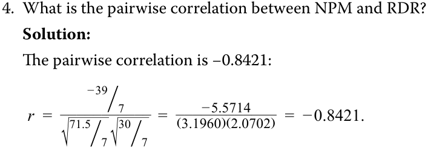
ASSUMPTIONS OF THE SIMPLE LINEAR REGRESSION MODEL
- Hệ số tương quan cặp (pairwise correlation) giữa NPM và RDR là bao nhiêu?
3
Lời giải:
Hệ số tương quan cặp là $-0.8421$:
explain the assumptions underlying the simple linear regression model, and describe how residuals and residual plots indicate if these assumptions may have been violated
CÁC GIẢ ĐỊNH CỦA MÔ HÌNH HỒI QUY TUYẾN TÍNH ĐƠN (ASSUMPTIONS OF THE SIMPLE LINEAR REGRESSION MODEL)
We have discussed how to interpret the coefficients in a simple linear regression model. Now we turn to the statistical assumptions underlying this model. Suppose that we have n observations of both the dependent variable, Y , and the independent variable, X , and we want to estimate the simple linear regression of Y regressed on X . We need to make the following four key assumptions to be able to draw valid conclusions from a simple linear regression model:
3
1. Linearity: The relationship between the dependent variable, Y , and the independent variable, X , is linear.
- giải thích các giả định cơ sở của mô hình hồi quy tuyến tính đơn, và mô tả cách phần dư (residuals) cùng đồ thị phần dư (residual plots) cho biết liệu các giả định này có thể đã bị vi phạm hay không
2. Homoskedasticity: The variance of the regression residuals is the same for all observations.
Chúng ta đã thảo luận về cách diễn giải các hệ số trong mô hình hồi quy tuyến tính đơn. Bây giờ chúng ta chuyển sang các giả định thống kê làm cơ sở cho mô hình này. Giả sử rằng chúng ta có $n$ quan sát của cả biến phụ thuộc, $Y$, và biến độc lập, $X$, và chúng ta muốn ước lượng hồi quy tuyến tính đơn của $Y$ theo $X$. Chúng ta cần đưa ra bốn giả định cốt lõi sau đây để có thể rút ra các kết luận hợp lệ từ một mô hình hồi quy tuyến tính đơn:
1. Tính tuyến tính (Linearity): Mối quan hệ giữa biến phụ thuộc, $Y$, và biến độc lập, $X$, là tuyến tính.
3. Independence: The observations, pairs of Y s and X s, are independent of one another. This implies the regression residuals are uncorrelated across observations.
2. Phương sai sai số không đổi (Homoskedasticity): Phương sai của phần dư hồi quy là như nhau đối với tất cả các quan sát.
4. Normality: The regression residuals are normally distributed.
3. Tính độc lập (Independence): Các quan sát, tức các cặp $Y$ và $X$, độc lập với nhau. Điều này ngụ ý rằng phần dư hồi quy không tương quan với nhau qua các quan sát.
Now we take a closer look at each of these assumptions and introduce the “best practice” of examining residual plots of regression results to identify potential violations of these key assumptions.
4. Tính phân phối chuẩn (Normality): Phần dư hồi quy có phân phối chuẩn.
Assumption 1: Linearity
Bây giờ chúng ta sẽ xem xét kỹ hơn từng giả định này và giới thiệu “thông lệ tốt nhất” (best practice) trong việc kiểm tra đồ thị phần dư (residual plots) của kết quả hồi quy nhằm nhận diện các vi phạm tiềm ẩn đối với những giả định cốt lõi này.
Giả định 1: Tính tuyến tính (Linearity)
We are fitting a linear model, so we must assume that the true underlying relationship between the dependent and independent variables is linear. If the relationship between the independent and dependent variables is nonlinear in the parameters, estimating that relation with a simple linear regression model will produce invalid results: The model will be biased, because it will under- and overestimate the dependent variable at certain points. For example, Yi = b 0 eb_1_Xi + εi is nonlinear in b 1, so we should not apply the linear regression model to it. Exhibit 10 shows an example of this exponential
Chúng ta đang khớp một mô hình tuyến tính, vì vậy chúng ta phải giả định rằng mối quan hệ thực sự ngầm định giữa biến phụ thuộc và biến độc lập là tuyến tính. Nếu mối quan hệ giữa biến độc lập và biến phụ thuộc là phi tuyến tính theo các tham số (nonlinear in the parameters), việc ước lượng mối quan hệ đó bằng mô hình hồi quy tuyến tính đơn sẽ tạo ra kết quả không hợp lệ: Mô hình sẽ bị chệch (biased), bởi vì nó sẽ ước lượng thấp hơn thực tế (underestimate) và ước lượng cao hơn thực tế (overestimate) biến phụ thuộc tại những điểm nhất định. Ví dụ, $Y_i = b_0 e^{b_1 X_i} + \varepsilon_i$ là phi tuyến tính theo $b_1$, vì vậy chúng ta không nên áp dụng mô hình hồi quy tuyến tính cho nó. Hình 10 cho thấy một ví dụ về mô hình hàm mũ này,
model, with a regression line indicated. You can see that this line does not fit this relationship well: For lower and higher values of X , the linear model underestimates the Y , whereas for the middle values, the linear model overestimates Y .
với một đường hồi quy được chỉ ra. Bạn có thể thấy rằng đường thẳng này không khớp tốt với mối quan hệ này: Đối với các giá trị thấp hơn và cao hơn của $X$, mô hình tuyến tính ước lượng thấp hơn giá trị của $Y$, trong khi đối với các giá trị ở giữa, mô hình tuyến tính lại ước lượng cao hơn giá trị của $Y$.
Exhibit 10: Illustration of Nonlinear Relationship Estimated as a Linear Relationship
Hình 10: Minh họa Mối quan hệ Phi tuyến tính được Ước lượng như một Mối quan hệ Tuyến tính
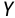
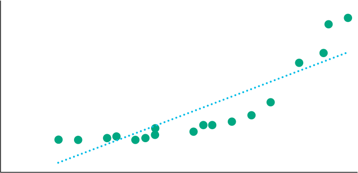
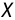
Chú thích hình ảnh: Trục tung $Y$, trục hoành $X$. Các điểm dữ liệu đi theo đường cong hàm mũ nhưng được khớp bằng một đường thẳng hồi quy tuyến tính.
Another implication of this assumption is that the independent variable, X , must not be random; that is, it is non-stochastic. If the independent variable is random, there would be no linear relation between the dependent and independent variables. Although we may initially assume that the independent variable in the regression model is not random, that assumption may not always be true.
Một hàm ý khác của giả định này là biến độc lập, $X$, không được mang tính ngẫu nhiên; nghĩa là nó mang tính phi ngẫu nhiên (non-stochastic). Nếu biến độc lập là ngẫu nhiên, sẽ không có mối quan hệ tuyến tính nào giữa biến phụ thuộc và biến độc lập. Mặc dù ban đầu chúng ta có thể giả định rằng biến độc lập trong mô hình hồi quy không phải là ngẫu nhiên, nhưng giả định đó không phải lúc nào cũng đúng.
When we look at the residuals of a model, what we would like to see is that the residuals are random. The residuals should not exhibit a pattern when plotted against the independent variable. As we show in Exhibit 11, the residuals from the Exhibit 10 linear regression do not appear to be random but, rather, they exhibit a relationship with the independent variable, X , falling for some range of X and rising in another.
Khi chúng ta nhìn vào phần dư của một mô hình, điều chúng ta muốn thấy là phần dư mang tính ngẫu nhiên. Phần dư không được thể hiện bất kỳ quy luật (pattern) nào khi được vẽ theo biến độc lập. Như chúng ta trình bày trong Hình 11, phần dư từ hồi quy tuyến tính ở Hình 10 dường như không ngẫu nhiên mà thay vào đó, chúng thể hiện một mối quan hệ với biến độc lập, $X$, giảm xuống trong một khoảng giá trị của $X$ và tăng lên trong một khoảng khác.
Exhibit 11: Illustration of Residuals in a Nonlinear Relationship Estimated as a Linear Relationship
Hình 11: Minh họa Phần dư trong một Mối quan hệ Phi tuyến tính được Ước lượng như một Mối quan hệ Tuyến tính
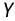
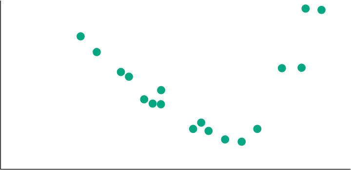
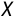
Chú thích hình ảnh: Đồ thị phần dư theo biến độc lập $X$ tạo thành hình chữ U (ban đầu dương, sau đó âm ở đoạn giữa, rồi lại tăng lên dương ở cuối), cho thấy vi phạm giả định tính tuyến tính.
Assumption 2: Homoskedasticity
Giả định 2: Phương sai sai số không đổi (Homoskedasticity)
Assumption 2, that the variance of the residuals is the same for all observations, is known as the homoskedasticity assumption. In terms of notation, this assumption relates to the squared residuals:
Giả định 2, rằng phương sai của phần dư là như nhau đối với tất cả các quan sát, được gọi là giả định phương sai sai số không đổi (homoskedasticity). Về mặt ký hiệu, giả định này liên quan đến bình phương phần dư:
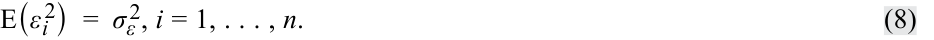
If the residuals are not homoskedastic, that is, if the variance of residuals differs across observations, then we refer to this as heteroskedasticity .
Nếu phần dư không có phương sai không đổi, tức là nếu phương sai của phần dư khác nhau qua các quan sát, thì chúng ta gọi hiện tượng này là phương sai sai số thay đổi (heteroskedasticity).
Suppose you are examining a time series of short-term interest rates as the dependent variable and inflation rates as the independent variable over 16 years. We may believe that short-term interest rates ( Y ) and inflation rates ( X ) should be related (i.e., interest rates are higher with higher rates of inflation). If this time series spans many years, with different central bank actions that force short-term interest rates to be (artificially) low for the last eight years of the series, then it is likely that the residuals in this estimated model will appear to come from two different models. We will refer to the first eight years as Regime 1 (normal rates) and the second eight years as Regime 2 (low rates). If the model fits differently in the two regimes, the residuals and their variances will be different.
Giả sử bạn đang kiểm tra một chuỗi thời gian của lãi suất ngắn hạn với vai trò là biến phụ thuộc và tỷ lệ lạm phát với vai trò là biến độc lập trong vòng 16 năm. Chúng ta có thể tin rằng lãi suất ngắn hạn ($Y$) và tỷ lệ lạm phát ($X$) phải có liên hệ với nhau (tức là lãi suất cao hơn khi tỷ lệ lạm phát cao hơn). Nếu chuỗi thời gian này kéo dài nhiều năm, với các hành động khác nhau của ngân hàng trung ương buộc lãi suất ngắn hạn phải ở mức thấp (một cách nhân tạo) trong tám năm cuối của chuỗi, thì rất có khả năng phần dư trong mô hình ước lượng này sẽ có vẻ như đến từ hai mô hình khác nhau. Chúng ta sẽ gọi tám năm đầu tiên là Chế độ 1 (Regime 1 – lãi suất bình thường) và tám năm thứ hai là Chế độ 2 (Regime 2 – lãi suất thấp). Nếu mô hình có mức độ phù hợp khác nhau trong hai chế độ, phần dư và phương sai của chúng sẽ khác nhau.
You can see this situation in Exhibit 12, which shows a scatter plot with an estimated regression line. The slope of the regression line over all 16 years is 1.1979.
Bạn có thể thấy tình huống này trong Hình 12, thể hiện biểu đồ phân tán với một đường hồi quy ước lượng. Hệ số góc của đường hồi quy trong cả 16 năm là 1,1979.
Exhibit 12: Scatter Plot of Interest Rates ( Y ) and Inflation Rates ( X )
Hình 12: Biểu đồ phân tán của Lãi suất ($Y$) và Tỷ lệ Lạm phát ($X$)
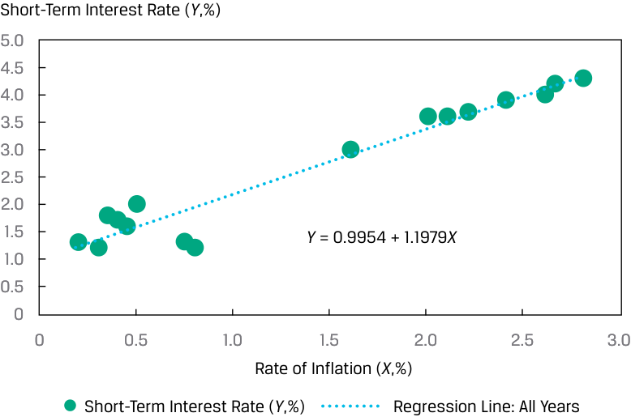
Chú thích hình ảnh: Trục tung: Lãi suất ngắn hạn ($Y$, %). Trục hoành: Tỷ lệ lạm phát ($X$, %). Đường hồi quy cho tất cả các năm: $Y = 0.9954 + 1.1979X$.
We plot the residuals of this model in Exhibit 13 against the years. In this plot, we indicate the distance that is two standard deviations from zero (the mean of the residuals) for the first eight years’ residuals and then do the same for the second eight years. As you can see, the residuals appear different for the two regimes: the variation in the residuals for the first eight years is much smaller than the variation for the second eight years.
Chúng ta vẽ đồ thị phần dư của mô hình này trong Hình 13 theo các năm. Trong đồ thị này, chúng ta chỉ ra khoảng cách hai độ lệch chuẩn tính từ mức 0 (giá trị trung bình của phần dư) cho phần dư của tám năm đầu tiên và sau đó làm tương tự cho tám năm thứ hai. Như bạn có thể thấy, phần dư có vẻ khác biệt giữa hai chế độ: sự biến thiên của phần dư trong tám năm đầu tiên nhỏ hơn nhiều so với sự biến thiên trong tám năm thứ hai.
Exhibit 13: Residual Plot for Interest Rates ( Y ) vs. Inflation Rates ( X ) Model
Hình 13: Đồ thị Phần dư cho Mô hình Lãi suất ($Y$) theo Tỷ lệ Lạm phát ($X$)
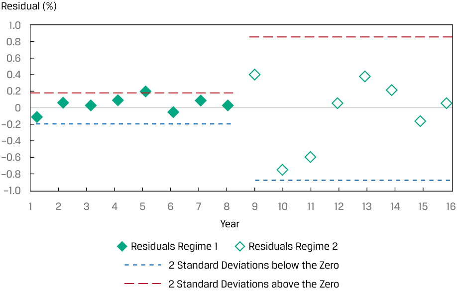
Chú thích hình ảnh: Trục tung: Phần dư (%). Trục hoành: Năm (từ 1 đến 16). Hiển thị Phần dư Chế độ 1 (Năm 1–8) có dải $\pm 2$ độ lệch chuẩn hẹp, và Phần dư Chế độ 2 (Năm 9–16) có dải $\pm 2$ độ lệch chuẩn rộng hơn nhiều.
Why does this happen? The model seems appropriate, but when we examine the residuals (Exhibit 13), an important step in assessing the model fit, we see that the model fits better in some years compared with others. The difference in variance of residuals between the two regimes is apparent from the much wider band around residuals for Regime 2 (the low-rate period). This indicates a clear violation of the homoskedasticity assumption.
Tại sao điều này lại xảy ra? Mô hình có vẻ hợp lý, nhưng khi chúng ta kiểm tra phần dư (Hình 13), một bước quan trọng trong việc đánh giá độ phù hợp của mô hình, chúng ta thấy rằng mô hình khớp tốt hơn ở một số năm so với những năm khác. Sự khác biệt về phương sai của phần dư giữa hai chế độ thể hiện rõ qua dải băng rộng hơn nhiều xung quanh phần dư của Chế độ 2 (giai đoạn lãi suất thấp). Điều này cho thấy sự vi phạm rõ ràng đối với giả định phương sai sai số không đổi (homoskedasticity).
If we estimate a regression line for each regime, we can see that the model for the two regimes is quite different, as we show in Exhibit 14. In the case of Regime 1 (normal rates), the slope is 1.0247, whereas in Regime 2 (low rates) the slope is −0.2805. In sum, the clustering of residuals in two groups with much different variances clearly indicates the existence of distinct regimes for the relationship between short-term interest rates and the inflation rate.
Nếu chúng ta ước lượng một đường hồi quy cho từng chế độ, chúng ta có thể thấy rằng mô hình cho hai chế độ là khá khác nhau, như được trình bày trong Hình 14. Trong trường hợp Chế độ 1 (lãi suất bình thường), hệ số góc là 1,0247, trong khi ở Chế độ 2 (lãi suất thấp), hệ số góc là $-0,2805$. Tóm lại, sự phân cụm của phần dư thành hai nhóm có phương sai rất khác nhau chỉ ra rõ ràng sự tồn tại của các chế độ riêng biệt đối với mối quan hệ giữa lãi suất ngắn hạn và tỷ lệ lạm phát.
Exhibit 14: Fitted Regression Lines for the Two Regimes
Hình 14: Các Đường hồi quy Ước lượng cho Hai Chế độ (Two Regimes)
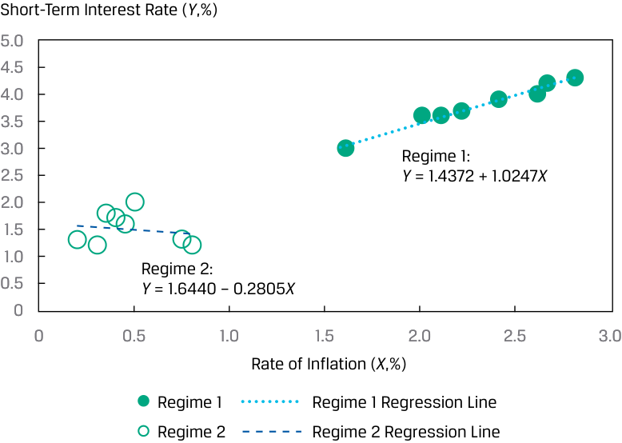
Chú thích hình ảnh: Trục tung: Lãi suất ngắn hạn ($Y$, %). Trục hoành: Tỷ lệ lạm phát ($X$, %). Đường hồi quy Chế độ 1: $Y = 1.4372 + 1.0247X$. Đường hồi quy Chế độ 2: $Y = 1.6440 - 0.2805X$.
Assumption 3: Independence
Giả định 3: Tính độc lập (Independence)
We assume that the observations ( Y and X pairs) are uncorrelated with one another, meaning they are independent. If there is correlation between observations (i.e., autocorrelation), they are not independent and the residuals will be correlated. The assumption that the residuals are uncorrelated across observations is also necessary for correctly estimating the variances of the estimated parameters of b 0 and b 1 (i.e., bˆ 0 and bˆ 1 ) that we use in hypothesis tests of the intercept and slope, respectively. It is important to examine whether the residuals exhibit a pattern, suggesting a violation of this assumption. Therefore, we need to visually and statistically examine the residuals for a regression model.
Chúng ta giả định rằng các quan sát (các cặp $Y$ và $X$) không tương quan với nhau, nghĩa là chúng độc lập với nhau. Nếu có sự tương quan giữa các quan sát (tức là tự tương quan – autocorrelation), chúng không độc lập và các phần dư sẽ tương quan với nhau. Giả định rằng các phần dư không tương quan qua các quan sát cũng rất cần thiết để ước lượng chính xác phương sai của các tham số ước lượng (estimated parameters) của $b_0$ và $b_1$ (tức là $\hat{b}_0$ và $\hat{b}_1$) mà chúng ta sử dụng trong các kiểm định giả thuyết cho hệ số chặn và hệ số góc tương ứng. Điều quan trọng là phải kiểm tra xem liệu phần dư có thể hiện một quy luật (pattern) nào đó hay không, điều gợi ý sự vi phạm giả định này. Do đó, chúng ta cần kiểm tra trực quan và kiểm tra thống kê đối với phần dư của một mô hình hồi quy.
Consider the quarterly revenues of a company regressed over 40 quarters, as shown in Exhibit 15, with the regression line included. It is clear that these revenues display a seasonal pattern, an indicator of autocorrelation.
Hãy xem xét doanh thu hàng quý của một công ty được hồi quy qua 40 quý, như trình bày trong Hình 15, kèm theo đường hồi quy. Rõ ràng là các mức doanh thu này thể hiện một quy luật mang tính thời vụ (seasonal pattern), một dấu hiệu chỉ báo của hiện tượng tự tương quan (autocorrelation).
Exhibit 15: Regression of Quarterly Revenues vs. Time (40 Quarters)
Hình 15: Hồi quy Doanh thu Hàng quý theo Thời gian (40 Quý)
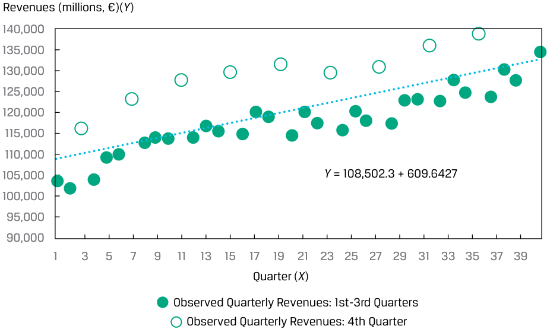
Chú thích hình ảnh: Trục tung: Doanh thu (triệu €) ($Y$). Trục hoành: Quý ($X$, từ 1 đến 40). Đường hồi quy: $Y = 108,502.3 + 609.6427X$. Doanh thu quan sát của Quý 4 luôn vọt lên cao hơn hẳn so với Quý 1–3.
In Exhibit 16, we plot the residuals from this model and see that there is a pattern. These residuals are correlated, specifically jumping up in Quarter 4 and then falling back the subsequent quarter. In sum, the patterns in both Exhibit 15 and Exhibit 16 indicate a violation of the assumption of independence.
Trong Hình 16, chúng ta vẽ đồ thị phần dư từ mô hình này và thấy rằng có một quy luật lặp lại. Các phần dư này có tương quan với nhau, cụ thể là nhảy vọt lên vào Quý 4 và sau đó giảm trở lại vào quý tiếp theo. Tóm lại, các quy luật trong cả Hình 15 và Hình 16 đều cho thấy sự vi phạm giả định về tính độc lập.
Exhibit 16: Residual Plot for Quarterly Revenues vs. Time Model
Hình 16: Đồ thị Phần dư cho Mô hình Doanh thu Hàng quý theo Thời gian
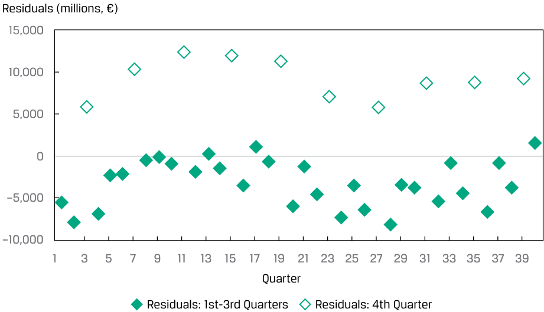
Chú thích hình ảnh: Trục tung: Phần dư (triệu €). Trục hoành: Quý (từ 1 đến 40). Phần dư của Quý 1–3 luôn âm hoặc thấp, trong khi phần dư của Quý 4 luôn dương cao (khoảng $+10,000$).
Assumption 4: Normality
Giả định 4: Tính phân phối chuẩn (Normality)
The assumption of normality requires that the residuals be normally distributed. This does not mean that the dependent and independent variables must be normally distributed; it only means that the residuals from the model are normally distributed. However, in estimating any model, it is good practice to understand the distribution of
Giả định về tính phân phối chuẩn đòi hỏi phần dư phải có phân phối chuẩn. Điều này không có nghĩa là biến phụ thuộc và biến độc lập phải có phân phối chuẩn; nó chỉ có nghĩa là phần dư từ mô hình có phân phối chuẩn. Tuy nhiên, khi ước lượng bất kỳ mô hình nào, thông lệ tốt là cần hiểu rõ phân phối của
the dependent and independent variables to explore for outliers. An outlier in either or both variables can substantially influence the fitted line such that the estimated model will not fit well for most of the other observations.
biến phụ thuộc và biến độc lập để dò tìm các giá trị ngoại lai (outliers). Một giá trị ngoại lai ở một hoặc cả hai biến số có thể ảnh hưởng đáng kể đến đường thẳng ước lượng đến mức mô hình ước lượng sẽ không còn khớp tốt đối với hầu hết các quan sát khác.
With normally distributed residuals, we can test a particular hypothesis about a linear regression model. For large sample sizes, we may be able to drop the assumption of normality by appealing to the central limit theorem; asymptotic theory (which deals with large samples) shows that in many cases, the test statistics produced by standard regression programs are valid even if the model’s residuals are not normally distributed.
Với phần dư có phân phối chuẩn, chúng ta có thể kiểm định một giả thuyết cụ thể về mô hình hồi quy tuyến tính. Đối với các cỡ mẫu lớn, chúng ta có thể bỏ qua giả định về tính phân phối chuẩn bằng cách dựa vào định lý giới hạn trung tâm (central limit theorem); lý thuyết tiệm cận (asymptotic theory – xử lý các mẫu lớn) chỉ ra rằng trong nhiều trường hợp, các thống kê kiểm định (test statistics) được tạo ra bởi các chương trình hồi quy tiêu chuẩn vẫn hợp lệ ngay cả khi phần dư của mô hình không có phân phối chuẩn.
QUESTION SET
BỘ CÂU HỎI (QUESTION SET)
An analyst is investigating a company’s revenues and estimates a simple linear time-series model by regressing revenues against time, where time—1, 2, . . . , 15—is measured in years. She plots the company’s observed revenues and the estimated regression line, as shown in Exhibit 17. She also plots the residuals from this regression model, as shown in Exhibit 18.
Một nhà phân tích đang nghiên cứu doanh thu của một công ty và ước lượng một mô hình chuỗi thời gian tuyến tính đơn bằng cách hồi quy doanh thu theo thời gian, trong đó thời gian—$1, 2, \dots, 15$—được đo bằng năm. Cô vẽ đồ thị doanh thu quan sát được của công ty và đường hồi quy ước lượng, như trình bày trong Hình 17. Cô cũng vẽ đồ thị phần dư từ mô hình hồi quy này, như trình bày trong Hình 18.
Exhibit 17: Revenues vs. Time Using Simple Linear Regression
Hình 17: Doanh thu theo Thời gian sử dụng Hồi quy Tuyến tính Đơn
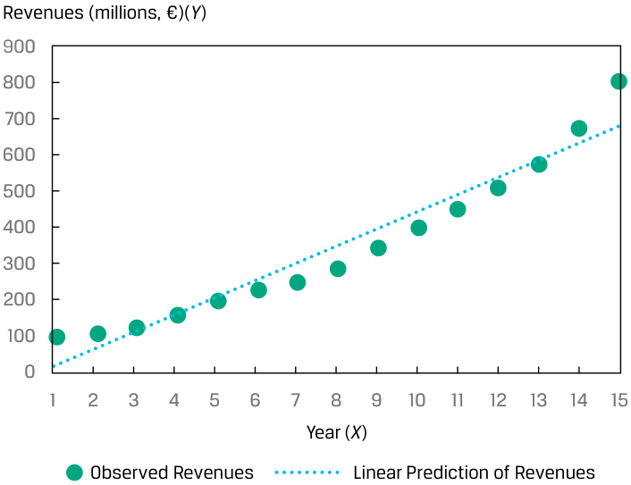
Chú thích hình ảnh: Trục tung: Doanh thu (triệu €) ($Y$). Trục hoành: Năm ($X$, từ 1 đến 15). Hiển thị Doanh thu quan sát (Observed Revenues - tăng theo đường cong) và Dự báo tuyến tính của doanh thu (Linear Prediction of Revenues - đường thẳng).
Exhibit 18: Residual Plot for Revenues vs. Time
Hình 18: Đồ thị Phần dư của Doanh thu theo Thời gian
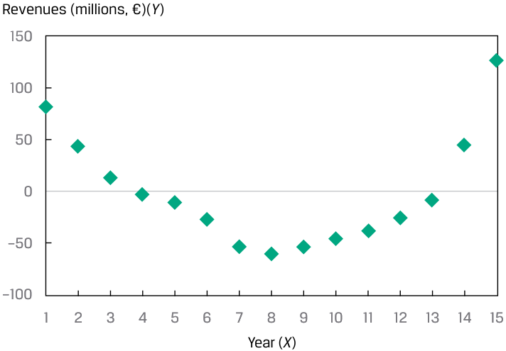
Chú thích hình ảnh: Trục tung: Phần dư doanh thu (triệu €). Trục hoành: Năm ($X$, từ 1 đến 15). Các điểm phần dư tạo thành đường cong hình chữ U rõ rệt.
Volume 1: Quantitative Methods
Learning Module 10 Simple Linear Regression
Part 3/6: Hypothesis Tests in the Simple Linear Regression Model (PDF Pages 290–302)
Tập 1: Các Phương pháp Định lượng (Quantitative Methods)
Học phần 10: Hồi quy Tuyến tính Đơn (Simple Linear Regression)
Phần 3/6: Kiểm định Giả thuyết trong Mô hình Hồi quy Tuyến tính Đơn (Trang PDF 290–302)
- Based on Exhibit 17 and Exhibit 18, describe which assumption(s) of simple linear regression the analyst’s model may be violating. Solution:
- Dựa trên Hình 17 và Hình 18, hãy mô tả (các) giả định nào của hồi quy tuyến tính đơn mà mô hình của nhà phân tích có thể đang vi phạm.
The correct model is not linear, as evident from the pattern of the revenues in Exhibit 17. In the earlier years (i.e., 1 and 2) and later years (i.e., 14 and 15), the linear model underestimates revenues, whereas for the middle years (i.e., 7–11), the linear model overestimates revenues. Moreover, the curved pattern of residuals in Exhibit 18 indicates potential heteroskedasticity (residuals have unequal variances), lack of independence of observations, and non-normality (a concern given the small sample size of n = 15). In sum, the analyst should be concerned that her model violates all the assumptions governing simple linear regression (linearity, homoskedasticity, independence, and normality).
Lời giải:
4
Mô hình đúng không phải là tuyến tính, như thấy rõ từ quy luật của doanh thu trong Hình 17. Trong những năm đầu (tức là năm 1 và 2) và những năm cuối (tức là năm 14 và 15), mô hình tuyến tính ước lượng thấp hơn thực tế (underestimates) doanh thu, trong khi đối với những năm ở giữa (tức là năm 7–11), mô hình tuyến tính lại ước lượng cao hơn thực tế (overestimates) doanh thu. Hơn nữa, quy luật cong của phần dư trong Hình 18 cho thấy khả năng có phương sai sai số thay đổi (heteroskedasticity – phần dư có phương sai không bằng nhau), thiếu tính độc lập giữa các quan sát (lack of independence), và không tuân theo phân phối chuẩn (non-normality – một mối quan ngại do cỡ mẫu nhỏ $n = 15$). Tóm lại, nhà phân tích cần lo ngại rằng mô hình của cô ấy vi phạm tất cả các giả định chi phối hồi quy tuyến tính đơn (tính tuyến tính, phương sai sai số không đổi, tính độc lập và tính phân phối chuẩn).
HYPOTHESIS TESTS IN THE SIMPLE LINEAR REGRESSION MODEL
4
calculate and interpret measures of fit and formulate and evaluate tests of fit and of regression coefficients in a simple linear regression
KIỂM ĐỊNH GIẢ THUYẾT TRONG MÔ HÌNH HỒI QUY TUYẾN TÍNH ĐƠN (HYPOTHESIS TESTS IN THE SIMPLE LINEAR REGRESSION MODEL)
- tính toán và diễn giải các thước đo mức độ phù hợp (measures of fit) cũng như thiết lập và đánh giá các kiểm định mức độ phù hợp (tests of fit) và kiểm định các hệ số hồi quy trong hồi quy tuyến tính đơn
Analysis of Variance
Phân tích Phương sai (Analysis of Variance)
The simple linear regression model sometimes describes the relationship between two variables quite well, but sometimes it does not. We must be able to distinguish between these two cases to use regression analysis effectively. Remember our goal is to explain the variation of the dependent variable. So, how well has this goal been achieved, given our choice of independent variable?
Mô hình hồi quy tuyến tính đơn đôi khi mô tả mối quan hệ giữa hai biến số khá tốt, nhưng đôi khi lại không. Chúng ta phải có khả năng phân biệt giữa hai trường hợp này để sử dụng phân tích hồi quy một cách hiệu quả. Hãy nhớ rằng mục tiêu của chúng ta là giải thích sự biến thiên của biến phụ thuộc. Vậy mục tiêu này đã đạt được tốt đến mức nào, với lựa chọn biến độc lập của chúng ta?
Breaking Down the Sum of Squares Total into Its Components
_Phân rã Tổng Bình phương Toàn phần thành các Thành phần của Nó (Breaking Down the Sum of Squares Total into Its Components)_
We begin with the sum of squares total and then break it down into two parts: the sum of squares error and the sum of squares regression (SSR) . The sum of squares regression is the sum of the squared differences between the predicted value of the dependent variable, Yˆ i , based on the estimated regression line, and the mean of the dependent variable, Y_ :
Chúng ta bắt đầu với tổng bình phương toàn phần (sum of squares total – SST) và sau đó chia nó thành hai phần: tổng bình phương sai số (sum of squares error – SSE) và tổng bình phương hồi quy (sum of squares regression – SSR). Tổng bình phương hồi quy là tổng bình phương các chênh lệch giữa giá trị dự báo của biến phụ thuộc, $\hat{Y}_i$, dựa trên đường hồi quy ước lượng, và giá trị trung bình của biến phụ thuộc, $\bar{Y}$:

We have already defined the sum of squares total, which is the total variation in Y , and the sum of squares error, the unexplained variation in Y . Note that the sum of squares regression is the explained variation in Y . So, as illustrated in Exhibit 19, SST = SSR + SSE, meaning total variation in Y equals explained variation in Y plus unexplained variation in Y .
Chúng ta đã định nghĩa tổng bình phương toàn phần (SST), là tổng biến thiên trong $Y$, và tổng bình phương sai số (SSE), là phần biến thiên không được giải thích (unexplained variation) trong $Y$. Lưu ý rằng tổng bình phương hồi quy (SSR) là phần biến thiên được giải thích (explained variation) trong $Y$. Do đó, như được minh họa trong Hình 19, $\text{SST} = \text{SSR} + \text{SSE}$, nghĩa là tổng biến thiên trong $Y$ bằng phần biến thiên được giải thích trong $Y$ cộng với phần biến thiên không được giải thích trong $Y$.
Exhibit 19: Breakdown of Variation of Dependent Variable
Hình 19: Phân rã Sự biến thiên của Biến phụ thuộc (Breakdown of Variation of Dependent Variable)

Chú thích hình ảnh: Tổng bình phương toàn phần ($\text{SST} = \sum_{i=1}^n (Y_i - \bar{Y})^2$) được chia thành hai nhánh: Tổng bình phương hồi quy ($\text{SSR} = \sum_{i=1}^n (\hat{Y}_i - \bar{Y})^2$) và Tổng bình phương sai số ($\text{SSE} = \sum_{i=1}^n (Y_i - \hat{Y}_i)^2$).
We show the breakdown of the sum of squares total formula for our ROA regression example in Exhibit 20. The total variation of ROA that we want to explain (SST) is 239.50. This number includes the variation unexplained (SSE), 47.88, and the variation explained (SSR), 191.63. These sum of squares values are important inputs into measures of the fit of the regression line.
Chúng ta trình bày sự phân rã công thức tổng bình phương toàn phần cho ví dụ hồi quy ROA của chúng ta trong Bảng 20. Tổng biến thiên của ROA mà chúng ta muốn giải thích (SST) là 239,50. Con số này bao gồm phần biến thiên không được giải thích (SSE) là 47,88, và phần biến thiên được giải thích (SSR) là 191,63. Các giá trị tổng bình phương này là các dữ liệu đầu vào quan trọng cho các thước đo mức độ phù hợp của đường hồi quy.
Exhibit 20: Breakdown of the Sum of Squares Total for ROA Model
Bảng 20: Phân rã Tổng Bình phương Toàn phần cho Mô hình ROA
| Company | ROA (Yi) |
CAPEX (Xi) |
Predicted ROA ( ˆ Y) |
Variation to Be Explained ( Y i− _ Y) 2 |
Variation Unexplained ( Y i−ˆ Yi ) 2 |
Variation Explained ( ˆ Yi− _ Y) 2 |
|---|---|---|---|---|---|---|
| A | 6.0 | 0.7 | 5.750 | 42.25 | 0.063 | 45.563 |
| B | 4.0 | 0.4 | 5.375 | 72.25 | 1.891 | 50.766 |
| C | 15.0 | 5.0 | 11.125 | 6.25 | 15.016 | 1.891 |
| D | 20.0 | 10.0 | 17.375 | 56.25 | 6.891 | 23.766 |
| E | 10.0 | 8.0 | 14.875 | 6.25 | 23.766 | 5.641 |
| F | 20.0 | 12.5 | 20.500 | 56.25 | 0.250 | 64.000 |
| 239.50 | 47.88 | 191.625 | ||||
| Mean | 12.50 |
| Công ty (Company) | ROA ($Y_i$) | CAPEX ($X_i$) | ROA dự báo ($\hat{Y}_i$) | Biến thiên cần giải thích $(Y_i - \bar{Y})^2$ | Biến thiên không được giải thích $(Y_i - \hat{Y}_i)^2$ | Biến thiên được giải thích $(\hat{Y}_i - \bar{Y})^2$ |
|---|---|---|---|---|---|---|
| A | 6.0 | 0.7 | 5.750 | 42.25 | 0.063 | 45.563 |
| B | 4.0 | 0.4 | 5.375 | 72.25 | 1.891 | 50.766 |
| C | 15.0 | 5.0 | 11.125 | 6.25 | 15.016 | 1.891 |
| D | 20.0 | 10.0 | 17.375 | 56.25 | 6.891 | 23.766 |
| E | 10.0 | 8.0 | 14.875 | 6.25 | 23.766 | 5.641 |
| F | 20.0 | 12.5 | 20.500 | 56.25 | 0.250 | 64.000 |
| 239.50 | 47.88 | 191.625 | ||||
| Trung bình (Mean) | 12.50 |
Sum of squares total = 239.50. Sum of squares error = 47.88. Sum of squares regression = 191.63.
Tổng bình phương toàn phần (SST) = 239.50. Tổng bình phương sai số (SSE) = 47.88. Tổng bình phương hồi quy (SSR) = 191.63.
Measures of Goodness of Fit
Các Thước đo Mức độ Phù hợp (Measures of Goodness of Fit)
We can use several measures to evaluate goodness of fit—that is, how well the regression model fits the data. These include the coefficient of determination, the F -statistic for the test of fit, and the standard error of the regression.
Chúng ta có thể sử dụng một số thước đo để đánh giá mức độ phù hợp (goodness of fit)—tức là mô hình hồi quy khớp với dữ liệu tốt đến mức nào. Những thước đo này bao gồm hệ số xác định (coefficient of determination), thống kê $F$ ($F$-statistic) cho kiểm định mức độ phù hợp, và sai số chuẩn của hồi quy (standard error of the regression).
The coefficient of determination (R2 ) , also referred to as the R -squared or R2 , is the percentage of the variation of the dependent variable that is explained by the independent variable:
Hệ số xác định (coefficient of determination – $R^2$), còn được gọi là $R$-bình phương ($R$-squared), là tỷ lệ phần trăm sự biến thiên của biến phụ thuộc được giải thích bởi biến độc lập:

By construction, the coefficient of determination ranges from 0 percent to 100 percent. In our ROA example, the coefficient of determination is 191.625 ÷ 239.50, or 0.8001, so 80.01 percent of the variation in ROA is explained by CAPEX. In a simple linear regression, the square of the pairwise correlation is equal to the coefficient of determination:
Theo cách xây dựng, hệ số xác định nằm trong khoảng từ 0% đến 100%. Trong ví dụ ROA của chúng ta, hệ số xác định là $191.625 \div 239.50$, hay $0.8001$, nghĩa là 80,01% sự biến thiên trong ROA được giải thích bởi CAPEX. Trong hồi quy tuyến tính đơn, bình phương của hệ số tương quan cặp bằng với hệ số xác định:

In our earlier ROA regression analysis, r = 0.8945, so we now see that r2 is indeed equal to the coefficient of determination ( R2 ), since (0.8945)2 = 0.8001.
Trong phân tích hồi quy ROA trước đó của chúng ta, $r = 0.8945$, vì vậy bây giờ chúng ta thấy rằng $r^2$ thực sự bằng hệ số xác định ($R^2$), vì $(0.8945)^2 = 0.8001$.
Whereas the coefficient of determination—the portion of the variation of the dependent variable explained by the independent variable—is descriptive, it is not a statistical test. To see if our regression model is likely to be statistically meaningful, we will need to construct an F -distributed test statistic.
Mặc dù hệ số xác định—phần biến thiên của biến phụ thuộc được giải thích bởi biến độc lập—mang tính mô tả, nhưng nó không phải là một kiểm định thống kê. Để xem liệu mô hình hồi quy của chúng ta có khả năng mang ý nghĩa thống kê hay không, chúng ta sẽ cần xây dựng một thống kê kiểm định có phân phối $F$ ($F$-distributed test statistic).
In general, we use an F -distributed test statistic to compare two variances. In regression analysis, we can use an F -distributed test statistic to test whether the slopes in a regression are equal to zero, with the slopes designated as bi, against the alternative hypothesis that at least one slope is not equal to zero:
Nhìn chung, chúng ta sử dụng một thống kê kiểm định có phân phối $F$ để so sánh hai phương sai. Trong phân tích hồi quy, chúng ta có thể sử dụng thống kê kiểm định có phân phối $F$ để kiểm định xem liệu các hệ số góc trong một hồi quy có bằng 0 hay không, với các hệ số góc được ký hiệu là $b_i$, đối lập với giả thuyết đối rằng có ít nhất một hệ số góc khác 0:


For simple linear regression, these hypotheses simplify to
Đối với hồi quy tuyến tính đơn, các giả thuyết này được đơn giản hóa thành:

The F -distributed test statistic is constructed by using the sum of squares regression and the sum of squares error, each adjusted for degrees of freedom; in other words, it is the ratio of two variances. We divide the sum of squares regression by the number of independent variables, represented by k. In the case of a simple linear regression, k = 1, so we arrive at the mean square regression (MSR) , which is the same as the sum of squares regression:
Thống kê kiểm định có phân phối $F$ được xây dựng bằng cách sử dụng tổng bình phương hồi quy (SSR) và tổng bình phương sai số (SSE), mỗi đại lượng được điều chỉnh theo bậc tự do (degrees of freedom); nói cách khác, nó là tỷ số của hai phương sai. Chúng ta chia tổng bình phương hồi quy cho số lượng biến độc lập, được ký hiệu là $k$. Trong trường hợp hồi quy tuyến tính đơn, $k = 1$, vì vậy chúng ta thu được trung bình bình phương hồi quy (mean square regression – MSR), có giá trị bằng chính tổng bình phương hồi quy:

So, for simple linear regression,
Vì vậy, đối với hồi quy tuyến tính đơn:

Next, we calculate the mean square error (MSE) , which is the sum of squares error divided by the degrees of freedom, which are n − k − 1. In simple linear regression, n − k − 1 becomes n − 2:
Tiếp theo, chúng ta tính trung bình bình phương sai số (mean square error – MSE), bằng tổng bình phương sai số chia cho bậc tự do là $n - k - 1$. Trong hồi quy tuyến tính đơn, $n - k - 1$ trở thành $n - 2$:


Therefore, the F -distributed test statistic (MSR/MSE) is
Do đó, thống kê kiểm định có phân phối $F$ ($\text{MSR}/\text{MSE}$) là:

which is distributed with 1 and n − 2 degrees of freedom in simple linear regression. The F -statistic in regression analysis is one sided, with the rejection region on the right side, because we are interested in whether the variation in Y explained (the numerator) is larger than the variation in Y unexplained (the denominator).
phân phối theo 1 và $n - 2$ bậc tự do trong hồi quy tuyến tính đơn. Thống kê $F$ trong phân tích hồi quy là kiểm định một phía (one sided), với miền bác bỏ (rejection region) nằm ở phía bên phải, bởi vì chúng ta quan tâm đến việc liệu phần biến thiên trong $Y$ được giải thích (tử số) có lớn hơn phần biến thiên trong $Y$ không được giải thích (mẫu số) hay không.
Hypothesis Testing of Individual Regression Coefficients
Kiểm định Giả thuyết cho Từng Hệ số Hồi quy Riêng lẻ (Hypothesis Testing of Individual Regression Coefficients)
Hypothesis Tests of the Slope Coefficient
_Kiểm định Giả thuyết đối với Hệ số góc (Hypothesis Tests of the Slope Coefficient)_
We can use the F -statistic to test for the significance of the slope coefficient (i.e., whether it is significantly different from zero), but we also may want to perform other hypothesis tests for the slope coefficient—for example, testing whether the population slope is different from a specific value or whether the slope is positive. We can use a t -distributed test statistic to test such hypotheses about a regression coefficient.
Chúng ta có thể sử dụng thống kê $F$ để kiểm định ý nghĩa thống kê của hệ số góc (tức là liệu nó có khác 0 một cách có ý nghĩa thống kê hay không), nhưng chúng ta cũng có thể muốn thực hiện các kiểm định giả thuyết khác cho hệ số góc—ví dụ: kiểm định xem hệ số góc tổng thể có khác một giá trị cụ thể nào đó hay không hoặc liệu hệ số góc có dương hay không. Chúng ta có thể sử dụng thống kê kiểm định có phân phối $t$ ($t$-distributed test statistic) để kiểm định các giả thuyết như vậy về một hệ số hồi quy.
Suppose we want to check a stock’s valuation using the market model; we hypothesize that the stock has an average systematic risk (i.e., risk similar to that of the market), as represented by the coefficient on the market returns variable. Or we may want to test the hypothesis that economists’ forecasts of the inflation rate are unbiased (i.e., on average, not overestimating or underestimating actual inflation rates). In each case, does the evidence support the hypothesis? Such questions as these can be addressed with hypothesis tests on the regression slope. To test a hypothesis about a slope, we calculate the test statistic by subtracting the hypothesized population slope ( B 1) from the estimated slope coefficient ( bˆ 1 ) and then dividing this difference by the standard error of the slope coefficient, sb ˆ1:
Giả sử chúng ta muốn kiểm tra định giá của một cổ phiếu bằng cách sử dụng mô hình thị trường (market model); chúng ta đặt giả thuyết rằng cổ phiếu có rủi ro hệ thống (systematic risk) ở mức trung bình (tức là rủi ro tương tự như rủi ro của thị trường), được đại diện bởi hệ số gắn với biến tỷ suất sinh lợi thị trường. Hoặc chúng ta có thể muốn kiểm định giả thuyết rằng dự báo của các nhà kinh tế học về tỷ lệ lạm phát là không chệch (unbiased – tức là xét trung bình, không ước lượng cao hơn hay thấp hơn tỷ lệ lạm phát thực tế). Trong mỗi trường hợp, bằng chứng có ủng hộ giả thuyết đó không? Những câu hỏi như thế này có thể được giải quyết bằng các kiểm định giả thuyết đối với hệ số góc hồi quy. Để kiểm định một giả thuyết về hệ số góc, chúng ta tính toán thống kê kiểm định bằng cách lấy hệ số góc ước lượng ($\hat{b}_1$) trừ đi hệ số góc tổng thể theo giả thuyết ($B_1$) và sau đó chia hiệu số này cho sai số chuẩn của hệ số góc, $s_{\hat{b}_1}$:

This test statistic is t -distributed with n − k − 1 or n − 2 degrees of freedom because two parameters (an intercept and a slope) were estimated in the regression.
Thống kê kiểm định này có phân phối $t$ với $n - k - 1$ hoặc $n - 2$ bậc tự do bởi vì có hai tham số (một hệ số chặn và một hệ số góc) đã được ước lượng trong hồi quy.
The standard error of the slope coefficient ( sb ˆ1) for a simple linear regression is the ratio of the model’s standard error of the estimate ( se ), introduced later, to the square root of the variation of the independent variable:
Sai số chuẩn của hệ số góc (standard error of the slope coefficient – $s_{\hat{b}_1}$) đối với hồi quy tuyến tính đơn là tỷ số giữa sai số chuẩn của ước lượng của mô hình ($s_e$), sẽ được giới thiệu sau, với căn bậc hai của sự biến thiên của biến độc lập:

We compare the calculated t -statistic with the critical values to test hypotheses. Note that the greater the variability of the independent variable, the lower the standard error of the slope (Equation 17) and hence the greater the calculated t -statistic (Equation 16). If the calculated t -statistic is outside the bounds of the critical t -values, we reject the null hypothesis, but if the calculated t -statistic is within the bounds of the critical values, we fail to reject the null hypothesis. Similar to tests of the mean, the alternative hypothesis can be two sided or one sided.
Chúng ta so sánh thống kê $t$ tính được với các giá trị tới hạn (critical values) để kiểm định giả thuyết. Lưu ý rằng mức độ biến thiên của biến độc lập càng lớn thì sai số chuẩn của hệ số góc càng thấp (Phương trình 17) và do đó thống kê $t$ tính được càng lớn (Phương trình 16). Nếu thống kê $t$ tính được nằm ngoài phạm vi của các giá trị $t$ tới hạn, chúng ta bác bỏ giả thuyết không (reject the null hypothesis), nhưng nếu thống kê $t$ tính được nằm trong phạm vi của các giá trị tới hạn, chúng ta không bác bỏ giả thuyết không (fail to reject the null hypothesis). Tương tự như kiểm định giá trị trung bình, giả thuyết đối (alternative hypothesis) có thể là hai phía (two sided) hoặc một phía (one sided).
Consider our previous simple linear regression example with ROA as the dependent variable and CAPEX as the independent variable. Suppose we want to test whether the slope coefficient of CAPEX is different from zero to confirm our intuition of a significant relationship between ROA and CAPEX. We can test the hypothesis concerning the slope using the six-step process, as we show in Exhibit 21. As a result of this test, we conclude that the slope is different from zero; that is, CAPEX is a significant explanatory variable of ROA.
Hãy xem xét ví dụ hồi quy tuyến tính đơn trước đó của chúng ta với ROA là biến phụ thuộc và CAPEX là biến độc lập. Giả sử chúng ta muốn kiểm định xem liệu hệ số góc của CAPEX có khác 0 hay không nhằm xác nhận trực giác của chúng ta về một mối quan hệ có ý nghĩa thống kê giữa ROA và CAPEX. Chúng ta có thể kiểm định giả thuyết liên quan đến hệ số góc bằng quy trình sáu bước, như được trình bày trong Bảng 21. Kết quả của kiểm định này là chúng ta kết luận rằng hệ số góc khác 0; nghĩa là CAPEX là một biến giải thích có ý nghĩa thống kê đối với ROA.
Exhibit 21: Test of the Slope for the Regression of ROA on CAPEX
Bảng 21: Kiểm định Hệ số góc cho Hồi quy của ROA theo CAPEX
| Step 1 |
State the hypotheses. | H_0:_b_1= 0 versus_Ha:_b_1≠ 0 |
|---|---|---|
| Step 2 |
Identify the appropriate test statistic. |
t= ˆ b_1−_B 1 _s ˆ _b_1 with 6 − 2 = 4 degrees of freedom. |
| Step 3 |
Specify the level of significance. |
α= 5%. |
| Step | State the decision rule. | Critical_t_-values = ±2.776. |
| 4 | We can determine this from Excel |
|
| Lower:~~T.INV(0.025,4)~~ | ||
| Upper:~~T.INV(0.975,4)~~ | ||
| R: ~~qt(c(.025,.975),4)~~ | ||
| Python:~~from scipy.stats import t~~ Lower:~~t.ppf(.025,4)~~ Upper:~~t.ppf(.975,4)~~ We reject the null hypothesis if the calculated t-statistic is less than −2.776 or greater than +2.776. |
||
| Step 5 |
Calculate the test statistic. | The slope coefficient is 1.25 (Exhibit 6). The mean square error is 11.96875 (Exhibit 39). The variation of CAPEX is 122.640 (Exhibit 6). s e=√ _ 11.96875 = 3.459588. |
| Step 6 |
Make a decision. | Reject the null hypothesis of a zero slope. There is sufficient evidence to indicate that the slope is different from zero. |
| Bước 1 | Phát biểu các giả thuyết. | $H_0: b_1 = 0$ đối lập với $H_a: b_1 \neq 0$ |
|---|---|---|
| Bước 2 | Xác định thống kê kiểm định phù hợp. | $t = \frac{\hat{b}_1 - B_1}{s_{\hat{b}_1}}$ với $6 - 2 = 4$ bậc tự do. |
| Bước 3 | Xác định mức ý nghĩa (level of significance). | $\alpha = 5\%$. |
| Bước 4 | Phát biểu quy tắc quyết định (decision rule). | Giá trị $t$ tới hạn (Critical $t$-values) $= \pm 2.776$. Chúng ta có thể xác định giá trị này từ: Excel: Giới hạn dưới (Lower): T.INV(0.025,4)Giới hạn trên (Upper): T.INV(0.975,4)R: qt(c(.025,.975),4)Python: from scipy.stats import tGiới hạn dưới (Lower): t.ppf(.025,4)Giới hạn trên (Upper): t.ppf(.975,4)Chúng ta bác bỏ giả thuyết không nếu thống kê $t$ tính được nhỏ hơn $-2.776$ hoặc lớn hơn $+2.776$. |
| Bước 5 | Tính toán thống kê kiểm định. | Hệ số góc là $1.25$ (Bảng 6). Trung bình bình phương sai số (MSE) là $11.96875$ (Bảng 33). Sự biến thiên của CAPEX là $122.640$ (Bảng 6). $s_e = \sqrt{11.96875} = 3.459588$. $s_{\hat{b}_1} = \frac{3.459588}{\sqrt{122.640}} = 0.312398$. $t = \frac{1.25 - 0}{0.312398} = 4.00131$. |
| Bước 6 | Đưa ra quyết định. | Bác bỏ giả thuyết không về hệ số góc bằng 0. Có đủ bằng chứng cho thấy hệ số góc khác 0. |
A feature of simple linear regression is that the t -statistic used to test whether the slope coefficient is equal to zero and the t -statistic to test whether the pairwise correlation is zero (i.e., H 0: ρ = 0 versus Ha : ρ ≠ 0) are the same value. Just as with a test of a slope, both two-sided and one-sided alternatives are possible for a test of a correlation—for example, H 0: ρ ≤ 0 versus Ha : ρ > 0. The test-statistic to test whether the correlation is equal to zero is as follows:
Một đặc điểm của hồi quy tuyến tính đơn là thống kê $t$ được sử dụng để kiểm định xem hệ số góc có bằng 0 hay không và thống kê $t$ để kiểm định xem hệ số tương quan cặp có bằng 0 hay không (tức là $H_0: \rho = 0$ đối lập với $H_a: \rho \neq 0$) có cùng một giá trị. Giống như kiểm định hệ số góc, cả giả thuyết đối hai phía và một phía đều có thể áp dụng cho kiểm định hệ số tương quan—ví dụ: $H_0: \rho \le 0$ đối lập với $H_a: \rho > 0$. Thống kê kiểm định để kiểm tra xem hệ số tương quan có bằng 0 hay không như sau:

In our example of ROA regressed on CAPEX, the correlation ( r ) is 0.8945. To test whether this correlation is different from zero, we perform a test of hypothesis, shown in Exhibit 22. As you can see, we draw a conclusion similar to that for our test of the slope, but it is phrased in terms of the correlation between ROA and CAPEX: There is a significant correlation between ROA and CAPEX.
Trong ví dụ ROA được hồi quy theo CAPEX của chúng ta, hệ số tương quan ($r$) là $0.8945$. Để kiểm định xem hệ số tương quan này có khác 0 hay không, chúng ta thực hiện kiểm định giả thuyết được trình bày trong Bảng 22. Như bạn có thể thấy, chúng ta rút ra một kết luận tương tự như kết luận cho kiểm định hệ số góc của chúng ta, nhưng được diễn đạt theo mối tương quan giữa ROA và CAPEX: Có mối tương quan có ý nghĩa thống kê giữa ROA và CAPEX.
Exhibit 22: Test of the Correlation between ROA and CAPEX
Bảng 22: Kiểm định Hệ số tương quan giữa ROA và CAPEX
| Step 1 | State the hypotheses. | H_0: ρ = 0 versus_Ha:ρ≠ 0 |
|---|---|---|
| Step 2 | Identify the appropriate test statistic. |
t=r √ _n− 2 √ 1 −r 2 . with 6 − 2 = 4 degrees of freedom. |
| Step 3 | Specify the level of significance. |
α= 5%. |
| Step 4 | State the decision rule. | Critical_t_-values = ±2.776. Reject the null if the calculated_t_-statistic is less than −2.776 or greater than +2.776. |
| Step 5 | Calculate the test statistic. | t=0.8945√ 4 √ _ 1 − 0.8001 = 4.00163. |
| Step 6 | Make a decision. | Reject the null hypothesis of no correlation. There is sufficient evidence to indicate that the correlation between ROA and CAPEX is differ- ent from zero. |
| Bước 1 | Phát biểu các giả thuyết. | $H_0: \rho = 0$ đối lập với $H_a: \rho \neq 0$ |
|---|---|---|
| Bước 2 | Xác định thống kê kiểm định phù hợp. | $t = \frac{r\sqrt{n - 2}}{\sqrt{1 - r^2}}$ với $6 - 2 = 4$ bậc tự do. |
| Bước 3 | Xác định mức ý nghĩa. | $\alpha = 5\%$. |
| Bước 4 | Phát biểu quy tắc quyết định. | Giá trị $t$ tới hạn $= \pm 2.776$. Bác bỏ giả thuyết không nếu thống kê $t$ tính được nhỏ hơn $-2.776$ hoặc lớn hơn $+2.776$. |
| Bước 5 | Tính toán thống kê kiểm định. | $t = \frac{0.8945\sqrt{4}}{\sqrt{1 - 0.8001}} = 4.00163$. |
| Bước 6 | Đưa ra quyết định. | Bác bỏ giả thuyết không về việc không có tương quan. Có đủ bằng chứng cho thấy hệ số tương quan giữa ROA và CAPEX khác 0. |
Another interesting feature of simple linear regression is that the test-statistic used to test the fit of the model (i.e., the F -distributed test statistic) is related to the calculated t -statistic used to test whether the slope coefficient is equal to zero: t2 = F ; therefore, 4.001312 = 16.0104.
Một đặc điểm thú vị khác của hồi quy tuyến tính đơn là thống kê kiểm định được sử dụng để kiểm định mức độ phù hợp của mô hình (tức là thống kê kiểm định có phân phối $F$) có liên hệ với thống kê $t$ tính được dùng để kiểm định xem hệ số góc có bằng 0 hay không: $t^2 = F$; do đó, $4.00131^2 = 16.0104$.
What if instead we want to test whether there is a one-to-one relationship between ROA and CAPEX, implying a slope coefficient of 1.0. The hypotheses become H 0: b 1 = 1 and Ha : b 1 ≠ 1. The calculated t -statistic is as follows:
Điều gì sẽ xảy ra nếu thay vào đó chúng ta muốn kiểm định xem liệu có mối quan hệ một-đối-một (one-to-one relationship) giữa ROA và CAPEX hay không, ngụ ý hệ số góc bằng $1.0$? Các giả thuyết sẽ trở thành $H_0: b_1 = 1$ và $H_a: b_1 \neq 1$. Thống kê $t$ tính được như sau:

This calculated test statistic falls within the bounds of the critical values, ±2.776, so we fail to reject the null hypothesis: There is not sufficient evidence to indicate that the slope is different from 1.0.
Thống kê kiểm định tính được này nằm trong phạm vi của các giá trị tới hạn, $\pm 2.776$, vì vậy chúng ta không bác bỏ giả thuyết không: Không có đủ bằng chứng để chỉ ra rằng hệ số góc khác $1.0$.
What if instead we want to test whether there is a positive slope or positive correlation, as our intuition suggests? In this case, all the steps are the same as in Exhibit 21 and Exhibit 22 except the critical values because the tests are one sided. For a test of a positive slope or positive correlation, the critical value for a 5 percent level of significance is +2.132. We show the test of hypotheses for a positive slope and a positive correlation in Exhibit 23. Our conclusion is that evidence is sufficient to support both a positive slope and a positive correlation.
Điều gì sẽ xảy ra nếu thay vào đó chúng ta muốn kiểm định xem liệu có hệ số góc dương hay tương quan dương như trực giác của chúng ta gợi ý hay không? Trong trường hợp này, tất cả các bước đều giống như trong Bảng 21 và Bảng 22 ngoại trừ các giá trị tới hạn bởi vì đây là các kiểm định một phía. Đối với kiểm định hệ số góc dương hoặc tương quan dương, giá trị tới hạn tại mức ý nghĩa 5% là $+2.132$. Chúng ta trình bày kiểm định giả thuyết cho hệ số góc dương và tương quan dương trong Bảng 23. Kết luận của chúng ta là có đủ bằng chứng để ủng hộ cả hệ số góc dương và tương quan dương.
Exhibit 23: One-Sided Tests for the Slope and Correlation
Bảng 23: Kiểm định Một phía cho Hệ số góc và Hệ số tương quan
| Test of the Slope | Test of the Correlation | ||
|---|---|---|---|
| Step 1 | State the hypotheses. | H_0:_b_1≤ 0 versus_Ha:_b_1> 0 | H_0:_ρ≤ 0 versus_Ha_:ρ> 0 |
| Step 2 | Identify the appropriate test statistic. |
t= ˆ b_1−_B 1 _s ˆ _b_1 with 6 − 2 = 4 degrees of freedom. |
t=r √ _n− 2 √ 1 −r 2 . with 6 − 2 = 4 degrees of freedom. |
| Step 3 | Specify the level of significance. | α= 5%. | α= 5%. |
| Step 4 | State the decision rule. | Critical_t_-value = 2.132. Reject the null if the calculated |
Critical_t_-value = 2.132. Reject the null if the calculated |
| t-statistic is greater than 2.132. | t-statistic is greater than 2.132. |
| Kiểm định Hệ số góc (Test of the Slope) | Kiểm định Hệ số tương quan (Test of the Correlation) | ||
|---|---|---|---|
| Bước 1 | Phát biểu các giả thuyết. | $H_0: b_1 \le 0$ đối lập với $H_a: b_1 > 0$ | $H_0: \rho \le 0$ đối lập với $H_a: \rho > 0$ |
| Bước 2 | Xác định thống kê kiểm định phù hợp. | $t = \frac{\hat{b}_1 - B_1}{s_{\hat{b}_1}}$ với $6 - 2 = 4$ bậc tự do. | $t = \frac{r\sqrt{n - 2}}{\sqrt{1 - r^2}}$ với $6 - 2 = 4$ bậc tự do. |
| Bước 3 | Xác định mức ý nghĩa. | $\alpha = 5\%$. | $\alpha = 5\%$. |
| Bước 4 | Phát biểu quy tắc quyết định. | Giá trị $t$ tới hạn $= 2.132$. Bác bỏ giả thuyết không nếu thống kê $t$ tính được lớn hơn $2.132$. |
Giá trị $t$ tới hạn $= 2.132$. Bác bỏ giả thuyết không nếu thống kê $t$ tính được lớn hơn $2.132$. |
Step 5 Calculate the test statistic. t = 0.3123981.25 − 0= 4.00131 _t = √0.8945 1 − 0.8001√ _4= 4.00131 Step 6 Make a decision. Reject the null hypothesis. Evidence is Reject the null hypothesis. Evidence is sufficient to indicate that the slope is sufficient to indicate that the correlation greater than zero. is greater than zero.
| Kiểm định Hệ số góc (Test of the Slope) | Kiểm định Hệ số tương quan (Test of the Correlation) | ||
|---|---|---|---|
| Bước 5 | Tính toán thống kê kiểm định. | $t = \frac{1.25 - 0}{0.312398} = 4.00131$ | $t = \frac{0.8945\sqrt{4}}{\sqrt{1 - 0.8001}} = 4.00131$ |
| Bước 6 | Đưa ra quyết định. | Bác bỏ giả thuyết không. Có đủ bằng chứng cho thấy hệ số góc lớn hơn 0. | Bác bỏ giả thuyết không. Có đủ bằng chứng cho thấy hệ số tương quan lớn hơn 0. |
Hypothesis Tests of the Intercept
_Kiểm định Giả thuyết đối với Hệ số chặn (Hypothesis Tests of the Intercept)_
We may want to test whether the population intercept is a specific value. As a reminder on how to interpret the intercept, consider the simple linear regression with a company’s revenue growth rate as the dependent variable ( Y ), and the GDP growth rate of its home country as the independent variable ( X ). The intercept is the company’s revenue growth rate if the GDP growth rate is 0 percent.
Chúng ta có thể muốn kiểm định xem liệu hệ số chặn tổng thể có bằng một giá trị cụ thể nào đó hay không. Để nhắc lại cách diễn giải hệ số chặn, hãy xem xét hồi quy tuyến tính đơn với tốc độ tăng trưởng doanh thu của một công ty là biến phụ thuộc ($Y$), và tốc độ tăng trưởng GDP của quốc gia sở tại là biến độc lập ($X$). Hệ số chặn là tốc độ tăng trưởng doanh thu của công ty nếu tốc độ tăng trưởng GDP là 0%.

We can test whether the intercept is different from the hypothesized value, B 0, by comparing the estimated intercept ( bˆ 0 ) with the hypothesized intercept and then dividing the difference by the standard error of the intercept:
Phương trình tính sai số chuẩn của hệ số chặn, $s_{\hat{b}_0}$, như sau:
Chúng ta có thể kiểm định xem liệu hệ số chặn có khác với giá trị theo giả thuyết, $B_0$, hay không bằng cách so sánh hệ số chặn ước lượng ($\hat{b}_0$) với hệ số chặn theo giả thuyết và sau đó chia hiệu số này cho sai số chuẩn của hệ số chặn:

In the ROA regression example, the intercept is 4.875 percent. Suppose we want to test whether the intercept is greater than 3 percent. The one-sided hypothesis test is shown in Exhibit 24. As you can see, we reject the null hypothesis. In other words, evidence is sufficient that if there are no capital expenditures (CAPEX = 0), ROA is greater than 3 percent.
Trong ví dụ hồi quy ROA, hệ số chặn là 4,875%. Giả sử chúng ta muốn kiểm định xem liệu hệ số chặn có lớn hơn 3% hay không. Kiểm định giả thuyết một phía được trình bày trong Bảng 24. Như bạn có thể thấy, chúng ta không bác bỏ giả thuyết không (Lưu ý: văn bản gốc tiếng Anh ở đoạn dẫn ghi nhầm "reject", nhưng trong Bảng 24 Bước 6 ghi chính xác là "Do not reject" vì $t = 0.7905 < 2.132$). Nói cách khác, không có đủ bằng chứng cho thấy nếu không có chi tiêu vốn ($\text{CAPEX} = 0$), ROA sẽ lớn hơn 3%.
Exhibit 24: Test of Hypothesis for Intercept for Regression of ROA on CAPEX
Bảng 24: Kiểm định Giả thuyết cho Hệ số chặn đối với Hồi quy của ROA theo CAPEX
| Step 1 | State the hypotheses. | H_0:_b_0≤ 3% versus_Ha:_b_0> 3% |
|---|---|---|
| Step 2 | Identify the appropriate test statistic. |
t intercept= ˆ b_0−_B 0 _s ˆ _b_0 with 6 − 2 = 4 degrees of freedom. |
| Step 3 | Specify the level of significance. |
α= 5%. |
| Step 4 | State the decision rule. | Critical_t_-value = 2.132. Reject the null if the calculated_t_-statistic is greater than 2.132. |
| Step 5 | Calculate the test statistic. | t intercept= 4.875 − 3.0 ___ 3.4596 ×√ 1 6 + 6.12 _ 122.64 = 1.875 _______ 3.4596 × 0.68562 = 0.7905 |
| Step 6 | Make a decision. | Do not reject the null hypothesis. There is not sufficient evidence to indicate that the intercept is greater than 3%. |
| Bước 1 | Phát biểu các giả thuyết. | $H_0: b_0 \le 3\%$ đối lập với $H_a: b_0 > 3\%$ |
|---|---|---|
| Bước 2 | Xác định thống kê kiểm định phù hợp. | $t_{\text{intercept}} = \frac{\hat{b}_0 - B_0}{s_{\hat{b}_0}}$ với $6 - 2 = 4$ bậc tự do. |
| Bước 3 | Xác định mức ý nghĩa. | $\alpha = 5\%$. |
| Bước 4 | Phát biểu quy tắc quyết định. | Giá trị $t$ tới hạn $= 2.132$. Bác bỏ giả thuyết không nếu thống kê $t$ tính được lớn hơn $2.132$. |
| Bước 5 | Tính toán thống kê kiểm định. | $t_{\text{intercept}} = \frac{4.875 - 3.0}{3.4596 \times \sqrt{\frac{1}{6} + \frac{6.1^2}{122.64}}} = \frac{1.875}{3.4596 \times 0.68562} = 0.7905$ |
| Bước 6 | Đưa ra quyết định. | Không bác bỏ giả thuyết không. Không có đủ bằng chứng để chỉ ra rằng hệ số chặn lớn hơn 3%. |
Hypothesis Tests of Slope When the Independent Variable Is an Indicator Variable
_Kiểm định Giả thuyết của Hệ số góc khi Biến độc lập là một Biến chỉ báo (Hypothesis Tests of Slope When the Independent Variable Is an Indicator Variable)_
Suppose we want to examine whether a company’s quarterly earnings announcements influence its monthly stock returns. In this case, we could use an indicator variable , or dummy variable, that takes on only the values 0 or 1 as the independent variable. Consider the case of a company’s monthly stock returns over a 30-month period. A simple linear regression model for investigating this question would be monthly returns, RET, regressed on the indicator variable, EARN, that takes on a value of 0 if there is no earnings announcement that month and 1 if there is an earnings announcement:
Giả sử chúng ta muốn kiểm tra xem liệu các đợt công bố thu nhập hàng quý của một công ty có ảnh hưởng đến tỷ suất sinh lợi cổ phiếu hàng tháng của công ty đó hay không. Trong trường hợp này, chúng ta có thể sử dụng một biến chỉ báo (indicator variable), hay biến giả (dummy variable), chỉ nhận các giá trị 0 hoặc 1 làm biến độc lập. Hãy xem xét trường hợp tỷ suất sinh lợi cổ phiếu hàng tháng của một công ty trong giai đoạn 30 tháng. Một mô hình hồi quy tuyến tính đơn để nghiên cứu câu hỏi này sẽ là tỷ suất sinh lợi hàng tháng, $\text{RET}$, được hồi quy theo biến chỉ báo, $\text{EARN}$, nhận giá trị bằng 0 nếu không có công bố thu nhập vào tháng đó và bằng 1 nếu có công bố thu nhập:
RET i = b 0 + b 1 EARN i + εi . ~~(21)~~
This regression setup allows us to test whether there are different returns for earnings-announcement months versus non-earnings-announcement months. The observations and regression results are shown graphically in Exhibit 25.
Thiết lập hồi quy này cho phép chúng ta kiểm định xem liệu có sự khác biệt về tỷ suất sinh lợi giữa các tháng có công bố thu nhập so với các tháng không có công bố thu nhập hay không. Các quan sát và kết quả hồi quy được thể hiện bằng đồ thị trong Hình 25.
Exhibit 25: Earnings Announcements, Dummy Variable, and Stock Returns
Hình 25: Công bố Thu nhập, Biến giả và Tỷ suất sinh lợi Cổ phiếu

Chú thích hình ảnh: Trục tung: Tỷ suất sinh lợi hàng tháng (%). Trục hoành: Tháng (từ 1 đến 30). Hiển thị Tỷ suất sinh lợi của các tháng có công bố (Returns for Announcement Months) với đường trung bình ở mức cao (~1,77%), và Tỷ suất sinh lợi của các tháng không có công bố (Returns for Months without Announcements) với đường trung bình ở mức thấp (~0,56%).
Clearly there are some months in which the returns are different from other months, and these correspond to months in which there was an earnings announcement. We estimate the simple linear regression model and perform hypothesis testing in the same manner as if the independent variable were a continuous variable. In a simple linear regression, the interpretation of the intercept is the predicted value of the dependent variable if the indicator variable is zero. Moreover, the slope when the indicator variable is 1 is the difference in the means if we grouped the observations by the indicator variable. The results of the regression are given in Panel A of Exhibit 26.
Rõ ràng có một số tháng mà tỷ suất sinh lợi khác biệt so với những tháng khác, và những tháng này tương ứng với các tháng có công bố thu nhập. Chúng ta ước lượng mô hình hồi quy tuyến tính đơn và thực hiện kiểm định giả thuyết theo cùng một cách giống như khi biến độc lập là một biến liên tục (continuous variable). Trong hồi quy tuyến tính đơn, ý nghĩa của hệ số chặn là giá trị dự báo của biến phụ thuộc nếu biến chỉ báo bằng 0. Hơn nữa, hệ số góc khi biến chỉ báo bằng 1 chính là chênh lệch giữa hai giá trị trung bình nếu chúng ta phân nhóm các quan sát theo biến chỉ báo. Kết quả của hồi quy được cho trong Phần A của Bảng 26.
Exhibit 26: Regression and Test of Differences Using an Indicator Variable
Bảng 26: Hồi quy và Kiểm định Sự khác biệt sử dụng Biến chỉ báo
A. Regression Estimation Results
A. Kết quả Ước lượng Hồi quy (Regression Estimation Results)
| fi | Standard Error of fi |
Calculated Test | |
|---|---|---|---|
| Estimated Coefficients | Coefficients | Statistic | |
| Intercept | fi 0.5629 |
fi 0.0560 |
10.0596 |
| EARN | 1.2098 | 0.1158 | 10.4435 |
| Các hệ số ước lượng (Estimated Coefficients) | Sai số chuẩn của các hệ số (Standard Error of Coefficients) | Thống kê kiểm định tính được (Calculated Test Statistic) | |
|---|---|---|---|
| Hệ số chặn (Intercept) | 0.5629 | 0.0560 | 10.0596 |
| EARN | 1.2098 | 0.1158 | 10.4435 |
Regression Estimation Results Degrees of freedom = 28.
Kết quả ước lượng hồi quy: Bậc tự do = 28.
Critical t-values = +2.0484 (5% significance).
Giá trị $t$ tới hạn = $\pm 2.0484$ (mức ý nghĩa 5%).
B. Test of Differences in Means
B. Kiểm định Sự khác biệt giữa Hai Giá trị Trung bình (Test of Differences in Means)
| RET for Earnings- Announcement Months |
RET for Non-Earnings- Announcement Months |
Difference in Means |
|
|---|---|---|---|
| Mean | 1.7727 | 0.5629 | 1.2098 |
| Variance | 0.1052 | 0.0630 | |
| Observations | 7 | 23 | |
| Pooled variance | 0.07202 | ||
| Calculated test | 10.4435 | ||
| statistic |
| RET cho các tháng có công bố thu nhập | RET cho các tháng không có công bố thu nhập | Chênh lệch giữa hai trung bình (Difference in Means) | |
|---|---|---|---|
| Trung bình (Mean) | 1.7727 | 0.5629 | 1.2098 |
| Phương sai (Variance) | 0.1052 | 0.0630 | |
| Số quan sát (Observations) | 7 | 23 | |
| Phương sai gộp (Pooled variance) | 0.07202 | ||
| Thống kê kiểm định tính được (Calculated test statistic) | 10.4435 |
Test of Differences in Means Degrees of freedom = 28. Critical t-values = +2.0484 (5% significance).
Kiểm định sự khác biệt giữa hai giá trị trung bình: Bậc tự do = 28. Giá trị $t$ tới hạn = $\pm 2.0484$ (mức ý nghĩa 5%).
We can see the following from Panel A of Exhibit 26:
Chúng ta có thể thấy những điều sau đây từ Phần A của Bảng 26:
-
The intercept (0.5629) is the mean of the returns for non-earnings-announcement months.
-
The slope coefficient (1.2098) is the difference in means of returns between earnings-announcement and non-earnings-announcement months.
-
We reject the null hypothesis that the slope coefficient on EARN is equal to zero. We also reject the null hypothesis that the intercept is zero. The reason is that in both cases, the calculated test statistic exceeds the critical t -value.
-
Hệ số chặn ($0.5629$) là giá trị trung bình của tỷ suất sinh lợi cho các tháng không có công bố thu nhập.
-
Hệ số góc ($1.2098$) là mức chênh lệch giữa trung bình tỷ suất sinh lợi của các tháng có công bố thu nhập và các tháng không có công bố thu nhập.
-
Chúng ta bác bỏ giả thuyết không cho rằng hệ số góc của $\text{EARN}$ bằng 0. Chúng ta cũng bác bỏ giả thuyết không cho rằng hệ số chặn bằng 0. Lý do là trong cả hai trường hợp, thống kê kiểm định tính được đều vượt quá giá trị $t$ tới hạn.
We could also test whether the mean monthly return is the same for both the non-earnings-announcement months and the earnings-announcement months by testing the following:
Chúng ta cũng có thể kiểm định xem liệu tỷ suất sinh lợi trung bình hàng tháng có như nhau đối với cả các tháng không có công bố thu nhập và các tháng có công bố thu nhập hay không bằng cách kiểm định giả thuyết sau:
H 0 : μRETearnings = μRETNon − earnings and Ha : μRETearnings ≠ μRETNon − earnings
The results of this hypothesis test are gleaned from Panel B of Exhibit 26. As you can see, we reject the null hypothesis that there is no difference in the mean RET for the earnings-announcement and non-earnings-announcements months at the 5 percent level of significance, because the calculated test statistic (10.4435) exceeds the critical value (2.0484).
Kết quả của kiểm định giả thuyết này được rút ra từ Phần B của Bảng 26. Như bạn có thể thấy, chúng ta bác bỏ giả thuyết không cho rằng không có sự khác biệt về giá trị trung bình của $\text{RET}$ giữa các tháng có công bố thu nhập và các tháng không có công bố thu nhập tại mức ý nghĩa 5%, bởi vì thống kê kiểm định tính được ($10.4435$) vượt quá giá trị tới hạn ($2.0484$).
Test of Hypotheses: Level of Significance and p-Values
_Kiểm định Giả thuyết: Mức ý nghĩa và Trị số p (Level of Significance and p-Values)_
The choice of significance level in hypothesis testing is always a matter of judgment. Analysts often choose the 0.05 level of significance, which indicates a 5 percent chance of rejecting the null hypothesis when, in fact, it is true (a Type I error, or false positive). Of course, decreasing the level of significance from 0.05 to 0.01 decreases the probability of a Type I error, but it also increases the probability of a Type II error—failing to reject the null hypothesis when, in fact, it is false (i.e., a false negative).
Việc lựa chọn mức ý nghĩa (significance level) trong kiểm định giả thuyết luôn là vấn đề mang tính phán đoán. Các nhà phân tích thường chọn mức ý nghĩa $0.05$, biểu thị 5% khả năng bác bỏ giả thuyết không khi trên thực tế nó đúng (sai lầm Loại I – Type I error, hay dương tính giả – false positive). Tất nhiên, việc giảm mức ý nghĩa từ $0.05$ xuống $0.01$ làm giảm xác suất mắc sai lầm Loại I, nhưng nó cũng làm tăng xác suất mắc sai lầm Loại II (Type II error)—không bác bỏ giả thuyết không khi trên thực tế nó sai (tức là âm tính giả – false negative).
The p -value is the smallest level of significance at which the null hypothesis can be rejected. The smaller the p -value, the smaller the chance of making a Type I error (i.e., rejecting a true null hypothesis), so the greater the likelihood the regression model is valid. For example, if the p -value is 0.005, we reject the null hypothesis that the true parameter is equal to zero at the 0.5 percent significance level (99.5 percent
Trị số $p$ ($p$-value) là mức ý nghĩa nhỏ nhất mà tại đó giả thuyết không có thể bị bác bỏ. Trị số $p$ càng nhỏ thì cơ hội mắc sai lầm Loại I (tức là bác bỏ một giả thuyết không đúng) càng nhỏ, do đó khả năng mô hình hồi quy hợp lệ càng lớn. Ví dụ, nếu trị số $p$ là $0.005$, chúng ta bác bỏ giả thuyết không cho rằng tham số thực sự bằng 0 tại mức ý nghĩa 0,5% (độ tin cậy 99,5%).
confidence). In most software packages, the p -values provided for regression coefficients are for a test of null hypothesis that the true parameter is equal to zero against the alternative that the parameter is not equal to zero.
Trong hầu hết các gói phần mềm, trị số $p$ được cung cấp cho các hệ số hồi quy là dành cho kiểm định giả thuyết không rằng tham số thực sự bằng 0 đối lập với giả thuyết đối rằng tham số khác 0.
In our ROA regression example, the calculated t -statistic for the test of whether the slope coefficient is zero is 4.00131. The p -value corresponding to this test statistic is 0.016, which means that, assuming the null hypothesis is true, there is a 1.6% chance of observing a test statistic as extreme as the one observed, or more extreme. Comparing this p -value with the level of significance of 5 percent (and critical values of ±2.776) leads us to easily reject the null hypothesis of H 0: b 1 = 0.
Trong ví dụ hồi quy ROA của chúng ta, thống kê $t$ tính được cho kiểm định xem liệu hệ số góc có bằng 0 hay không là $4.00131$. Trị số $p$ tương ứng với thống kê kiểm định này là $0.016$, có nghĩa là, giả sử giả thuyết không là đúng, có 1,6% khả năng quan sát được một thống kê kiểm định khắc nghiệt như giá trị đã quan sát, hoặc khắc nghiệt hơn. So sánh trị số $p$ này với mức ý nghĩa 5% (và các giá trị tới hạn $\pm 2.776$) giúp chúng ta dễ dàng bác bỏ giả thuyết không $H_0: b_1 = 0$.
How do we determine the p -values? Because this is the area in the distribution outside the calculated test statistic, we need to resort to software tools. For the p -value corresponding to the t = 4.00131 from the ROA regression example, we could use the following:
Làm thế nào chúng ta xác định được các trị số $p$? Bởi vì đây là diện tích trong phân phối nằm bên ngoài thống kê kiểm định tính được, chúng ta cần nhờ đến các công cụ phần mềm. Đối với trị số $p$ tương ứng với $t = 4.00131$ từ ví dụ hồi quy ROA, chúng ta có thể sử dụng các hàm sau:
-
Excel (1-T.DIST(4.00131,4,TRUE))*2
-
R (1-pt(4.00131,4))*2
-
Python from scipy.stats import t and (1 - t.cdf(4.00131,4))*2
-
Excel:
(1-T.DIST(4.00131,4,TRUE))*2 -
R:
(1-pt(4.00131,4))*2 -
Python:
from scipy.stats import tvà(1 - t.cdf(4.00131,4))*2
QUESTION SET
BỘ CÂU HỎI (QUESTION SET)
The following applies to questions 1–3:
Thông tin sau đây áp dụng cho các câu hỏi 1–3:
Julie Moon is an energy analyst examining electricity, oil, and natural gas consumption in different regions over different seasons. She ran a simple regression explaining the variation in energy consumption as a function of temperature. The total variation of the dependent variable was 140.58, and the explained variation was 60.16. She had 60 monthly observations.
Julie Moon là một nhà phân tích năng lượng đang kiểm tra mức tiêu thụ điện, dầu và khí tự nhiên ở các khu vực khác nhau qua các mùa khác nhau. Cô đã chạy một hồi quy đơn giải thích sự biến thiên trong mức tiêu thụ năng lượng như một hàm số của nhiệt độ. Tổng biến thiên (total variation) của biến phụ thuộc là $140.58$, và phần biến thiên được giải thích (explained variation) là $60.16$. Cô có 60 quan sát hàng tháng.
- Calculate the coefficient of determination.
- Tính hệ số xác định (coefficient of determination).
Solution:
Lời giải:
The coefficient of determination is 0.4279:
Hệ số xác định là $0.4279$:

- Calculate the F -statistic to test the fit of the model.
- Tính thống kê $F$ ($F$-statistic) để kiểm định mức độ phù hợp của mô hình.

- Calculate the sample standard deviation of monthly energy consumption.
Lời giải:
Solution:
- Tính độ lệch chuẩn mẫu (sample standard deviation) của mức tiêu thụ năng lượng hàng tháng.
Lời giải:
The sample variance of the dependent variable uses the total variation of the dependent variable and divides it by the number of observations less one:
Phương sai mẫu của biến phụ thuộc sử dụng tổng biến thiên của biến phụ thuộc và chia cho số lượng quan sát trừ đi một:

The sample standard deviation of the dependent variable is the square root of the variance, or √_ 2.3827 = 1.544 .
Độ lệch chuẩn mẫu của biến phụ thuộc là căn bậc hai của phương sai, hay $\sqrt{2.3827} = 1.544$.
The following applies to questions 4–6:
Thông tin sau đây áp dụng cho các câu hỏi 4–6:
An analyst is interested in interpreting the results of and performing tests of hypotheses for the market model estimation that regresses the daily return on ABC stock on the daily return on the fictitious Europe–Asia–Africa (EAA) Equity Index, his proxy for the stock market. He has generated the regression results presented in Exhibit 27.
Một nhà phân tích quan tâm đến việc diễn giải kết quả và thực hiện các kiểm định giả thuyết cho ước lượng mô hình thị trường (market model) hồi quy tỷ suất sinh lợi hàng ngày của cổ phiếu ABC theo tỷ suất sinh lợi hàng ngày của Chỉ số Cổ phiếu Âu–Á–Phi (EAA) giả định, đại diện (proxy) cho thị trường chứng khoán của anh ấy. Anh ấy đã tạo ra các kết quả hồi quy được trình bày trong Bảng 27.
Exhibit 27: Hypothesis Testing of Simple Linear Regression Results Selected Results of Estimation of Market Model for ABC Stock
Bảng 27: Kiểm định Giả thuyết Kết quả Hồi quy Tuyến tính Đơn – Kết quả Chọn lọc của Ước lượng Mô hình Thị trường cho Cổ phiếu ABC
| Standard error of the estimate (se) | 1.26 |
|---|---|
| Standard deviation of ABC stock returns | 0.80 |
| Standard deviation of EAA Equity Index returns | 0.70 |
| Number of observations | 1,200 |
| Coefficients | |
| Intercept | 0.010 |
| Slope of EAA Equity Index returns | 0.982 |
| Thống kê / Hệ số | Giá trị |
|---|---|
| Sai số chuẩn của ước lượng ($s_e$) | 1.26 |
| Độ lệch chuẩn của tỷ suất sinh lợi cổ phiếu ABC | 0.80 |
| Độ lệch chuẩn của tỷ suất sinh lợi Chỉ số Cổ phiếu EAA | 0.70 |
| Số lượng quan sát | 1,200 |
| Các hệ số (Coefficients) | |
| Hệ số chặn (Intercept) | 0.010 |
| Hệ số góc của tỷ suất sinh lợi Chỉ số Cổ phiếu EAA | 0.982 |
- Nếu các giá trị $t$ tới hạn là $\pm 1.96$ (tại mức ý nghĩa 5%), hệ số góc có khác 0 hay không?
- If the critical t -values are ±1.96 (at the 5 percent significance level), is the slope coefficient different from zero? Solution:
Lời giải:
First, we calculate the variation of the independent variable using the standard deviation of the independent variable:
Đầu tiên, chúng ta tính sự biến thiên của biến độc lập bằng cách sử dụng độ lệch chuẩn của biến độc lập:

So,
Vì vậy,
Next, the standard error of the estimated slope coefficient is
Tiếp theo, sai số chuẩn của hệ số góc ước lượng là:

and the test statistic is
và thống kê kiểm định là:
The calculated test statistic is outside the bounds of ±1.96, so we reject the null hypothesis of a slope coefficient equal to zero.
Thống kê kiểm định tính được nằm ngoài phạm vi $\pm 1.96$, vì vậy chúng ta bác bỏ giả thuyết không cho rằng hệ số góc bằng 0.
- If the critical t -values are ±1.96 (at the 5 percent significance level), is the slope coefficient different from 1.0?
- Nếu các giá trị $t$ tới hạn là $\pm 1.96$ (tại mức ý nghĩa 5%), hệ số góc có khác $1.0$ hay không?
Solution:
Lời giải:
The calculated test statistic for the test of whether the slope coefficient is equal to 1.0 is
Thống kê kiểm định tính được cho kiểm định xem liệu hệ số góc có bằng $1.0$ hay không là:
~~~~ _t =0.982 − 1 0.051983= − 0.3463.
The calculated test statistic is within the bounds of ±1.96, so we fail to reject the null hypothesis of a slope coefficient equal to 1.0, which is evidence that the true population slope may be 1.0.
Thống kê kiểm định tính được nằm trong phạm vi $\pm 1.96$, vì vậy chúng ta không bác bỏ giả thuyết không cho rằng hệ số góc bằng $1.0$, đây là bằng chứng cho thấy hệ số góc tổng thể thực sự có thể bằng $1.0$.
- An economist collected the monthly returns for KDL’s portfolio and a diversified stock index. The data collected are shown in Exhibit 28:
- Một nhà kinh tế học đã thu thập tỷ suất sinh lợi hàng tháng cho danh mục đầu tư của KDL và một chỉ số cổ phiếu đa dạng hóa. Dữ liệu thu thập được trình bày trong Bảng 28:
Exhibit 28: Monthly Returns for KDL
Bảng 28: Tỷ suất sinh lợi Hàng tháng của KDL
| Month | Portfolio Return (%) | Index Return (%) |
|---|---|---|
| 1 | 1.11 | −0.59 |
| 2 | 72.10 | 64.90 |
| 3 | 5.12 | 4.81 |
| 4 | 1.01 | 1.68 |
| 5 | −1.72 | −4.97 |
| 6 | 4.06 | −2.06 |
| Tháng (Month) | Tỷ suất sinh lợi Danh mục đầu tư (%) | Tỷ suất sinh lợi Chỉ số (%) |
|---|---|---|
| 1 | 1.11 | −0.59 |
| 2 | 72.10 | 64.90 |
| 3 | 5.12 | 4.81 |
| 4 | 1.01 | 1.68 |
| 5 | −1.72 | −4.97 |
| 6 | 4.06 | −2.06 |
The economist calculated the correlation between the two returns and found it to be 0.996. The regression results with the portfolio return as the dependent variable and the index return as the independent variable are given in Exhibit 29:
Nhà kinh tế học đã tính hệ số tương quan giữa hai tỷ suất sinh lợi và thấy nó bằng $0.996$. Kết quả hồi quy với tỷ suất sinh lợi danh mục đầu tư là biến phụ thuộc và tỷ suất sinh lợi chỉ số là biến độc lập được cho trong Bảng 29:
Exhibit 29: Regression Results
Bảng 29: Kết quả Hồi quy (Regression Results)
| Regression Statistics | |
|---|---|
| R2 | 0.9921 |
| Standard error | 2.8619 |
| Observations | 6 |
| Thống kê Hồi quy (Regression Statistics) | |
|---|---|
| $R^2$ | 0.9921 |
| Sai số chuẩn (Standard error) | 2.8619 |
| Số quan sát (Observations) | 6 |

| Source | df | Sum of Squares |
Mean Square |
F | p-Value |
|---|---|---|---|---|---|
| Regression | 1 | 4,101.6205 | 4,101.6205 | 500.7921 | 0.0000 |
| Residual | 4 | 32.7611 | 8.1903 | ||
| Total | 5 | 4,134.3815 |
| Nguồn (Source) | Bậc tự do (df) | Tổng bình phương (Sum of Squares) | Trung bình bình phương (Mean Square) | $F$ | Trị số $p$ ($p$-Value) |
|---|---|---|---|---|---|
| Hồi quy (Regression) | 1 | 4,101.6205 | 4,101.6205 | 500.7921 | 0.0000 |
| Phần dư (Residual) | 4 | 32.7611 | 8.1903 | ||
| Tổng (Total) | 5 | 4,134.3815 |
| Coefficients | Standard Error |
t-Statistic | p-Value | |
|---|---|---|---|---|
| Intercept | 2.2521 | 1.2739 | 1.7679 | 0.1518 |
| Index | 1.0690 | 0.0478 | 22.3784 | 0.0000 |
| return (%) |
| Các hệ số (Coefficients) | Sai số chuẩn (Standard Error) | Thống kê $t$ ($t$-Statistic) | Trị số $p$ ($p$-Value) | |
|---|---|---|---|---|
| Hệ số chặn (Intercept) | 2.2521 | 1.2739 | 1.7679 | 0.1518 |
| Tỷ suất sinh lợi chỉ số (Index return, %) | 1.0690 | 0.0478 | 22.3784 | 0.0000 |
When reviewing the results, Andrea Fusilier suspected that they were unreliable. She found that the returns for Month 2 should have been 7.21 percent
Khi xem xét lại kết quả, Andrea Fusilier nghi ngờ rằng chúng không đáng tin cậy. Cô phát hiện ra rằng tỷ suất sinh lợi của Tháng 2 lẽ ra phải là 7,21%
and 6.49 percent, instead of the large values shown in the first table. Correcting these values resulted in a revised correlation of 0.824 and the revised regression results in Exhibit 30:
và 6,49%, thay vì các giá trị lớn được hiển thị trong bảng đầu tiên. Việc sửa lại các giá trị này đã mang lại hệ số tương quan điều chỉnh là $0.824$ và kết quả hồi quy điều chỉnh trong Bảng 30:
Exhibit 30: Revised Regression Results
Bảng 30: Kết quả Hồi quy Đã điều chỉnh (Revised Regression Results)

| Coefficients | Standard Error |
t-Statistic | p-Value | |
|---|---|---|---|---|
| Intercept | 2.2421 | 0.8635 | 2.5966 | 0.060 |
| Slope | 0.6217 | 0.2143 | 2.9050 | 0.044 |
| Thống kê Hồi quy (Regression Statistics) | |
|---|---|
| $R^2$ | 0.6784 |
| Sai số chuẩn (Standard error) | 2.0624 |
| Số quan sát (Observations) | 6 |
| Nguồn (Source) | Bậc tự do (df) | Tổng bình phương (Sum of Squares) | Trung bình bình phương (Mean Square) | $F$ | Trị số $p$ ($p$-Value) |
|---|---|---|---|---|---|
| Hồi quy (Regression) | 1 | 35.8950 | 35.8950 | 8.4391 | 0.044 |
| Phần dư (Residual) | 4 | 17.0137 | 4.2534 | ||
| Tổng (Total) | 5 | 52.91 |
Explain how the bad data affected the results.
| Các hệ số (Coefficients) | Sai số chuẩn (Standard Error) | Thống kê $t$ ($t$-Statistic) | Trị số $p$ ($p$-Value) | |
|---|---|---|---|---|
| Hệ số chặn (Intercept) | 2.2421 | 0.8635 | 2.5966 | 0.060 |
| Hệ số góc (Slope) | 0.6217 | 0.2143 | 2.9050 | 0.044 |
Solution:
Hãy giải thích dữ liệu sai đã ảnh hưởng đến kết quả như thế nào.
The Month 2 data point is an outlier, lying far away from the other data values. Because this outlier was caused by a data entry error, correcting the outlier improves the validity and reliability of the regression. In this case, revised R2 is lower (from 0.9921 to 0.6784). The outliers created the illusion of a better fit from the higher R2 ; the outliers altered the estimate of the slope. The standard error of the estimate is lower when the data error is corrected (from 2.8619 to 2.0624), as a result of the lower mean square error. At a 0.05 level of significance, both models fit well. The difference in the fit is illustrated in Exhibit 31.
Lời giải:
Điểm dữ liệu Tháng 2 là một giá trị ngoại lai (outlier), nằm cách rất xa so với các giá trị dữ liệu khác. Bởi vì giá trị ngoại lai này là do lỗi nhập dữ liệu, việc sửa chữa giá trị ngoại lai giúp cải thiện tính hợp lệ và độ tin cậy của hồi quy. Trong trường hợp này, $R^2$ sau điều chỉnh thấp hơn (từ $0.9921$ xuống $0.6784$). Các giá trị ngoại lai đã tạo ra ảo giác về mức độ phù hợp tốt hơn từ mức $R^2$ cao hơn; các giá trị ngoại lai cũng đã làm thay đổi ước lượng của hệ số góc. Sai số chuẩn của ước lượng thấp hơn khi lỗi dữ liệu được sửa chữa (từ $2.8619$ xuống $2.0624$), do trung bình bình phương sai số (MSE) thấp hơn. Tại mức ý nghĩa $0.05$, cả hai mô hình đều phù hợp tốt. Sự khác biệt về mức độ phù hợp được minh họa trong Hình 31.
Volume 1: Quantitative Methods
Learning Module 10 Simple Linear Regression
Part 4/6: Prediction in the Simple Linear Regression Model (PDF Pages 303–317)
Tập 1: Các Phương pháp Định lượng (Quantitative Methods)
Học phần 10: Hồi quy Tuyến tính Đơn (Simple Linear Regression)
Phần 4/6: Dự báo trong Mô hình Hồi quy Tuyến tính Đơn (Trang PDF 303–317)
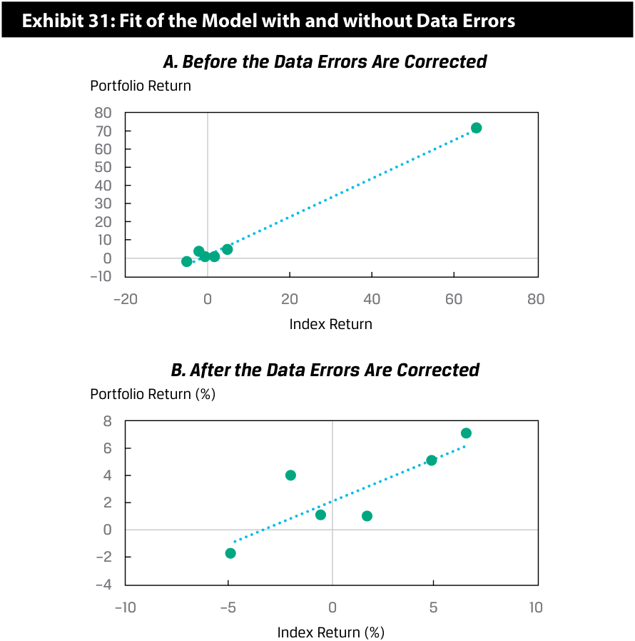
Chú thích hình ảnh (Hình 31: Mức độ phù hợp của Mô hình khi có và không có Lỗi dữ liệu): - A. Trước khi sửa lỗi dữ liệu (Before the Data Errors Are Corrected): Trục tung: Tỷ suất sinh lợi danh mục đầu tư (từ $-10$ đến $80$). Trục hoành: Tỷ suất sinh lợi chỉ số (từ $-20$ đến $80$). Điểm dữ liệu ngoại lai ở góc trên bên phải kéo đường hồi quy đi qua nó, tạo cảm giác khớp gần như tuyệt đối. - B. Sau khi sửa lỗi dữ liệu (After the Data Errors Are Corrected): Trục tung: Tỷ suất sinh lợi danh mục đầu tư (%) (từ $-4$ đến $8$). Trục hoành: Tỷ suất sinh lợi chỉ số (%) (từ $-10$ đến $10$). Các điểm dữ liệu phân tán tự nhiên hơn quanh đường hồi quy.
PREDICTION IN THE SIMPLE LINEAR REGRESSION MODEL
DỰ BÁO TRONG MÔ HÌNH HỒI QUY TUYẾN TÍNH ĐƠN (PREDICTION IN THE SIMPLE LINEAR REGRESSION MODEL)
5
5
describe the use of analysis of variance (ANOVA) in regression analysis, interpret ANOVA results, and calculate and interpret the standard error of estimate in a simple linear regression
calculate and interpret the predicted value for the dependent variable, and a prediction interval for it, given an estimated linear regression model and a value for the independent variable
-
mô tả việc sử dụng phân tích phương sai (analysis of variance – ANOVA) trong phân tích hồi quy, diễn giải kết quả ANOVA, và tính toán cũng như diễn giải sai số chuẩn của ước lượng (standard error of estimate) trong hồi quy tuyến tính đơn
-
tính toán và diễn giải giá trị dự báo cho biến phụ thuộc (dependent variable), và khoảng dự báo (prediction interval) cho giá trị đó, khi biết mô hình hồi quy tuyến tính ước lượng và một giá trị của biến độc lập (independent variable)
ANOVA and Standard Error of Estimate in Simple Linear Regression
ANOVA và Sai số chuẩn của Ước lượng trong Hồi quy Tuyến tính Đơn (ANOVA and Standard Error of Estimate in Simple Linear Regression)
We often represent the sums of squares from a regression model in an analysis of variance (ANOVA) table, as shown in Exhibit 32, which presents the sums of squares, the degrees of freedom, the mean squares, and the F -statistic. Notice that the variance of the dependent variable is the ratio of the sum of squares total to n − 1.
Chúng ta thường biểu diễn các tổng bình phương từ một mô hình hồi quy trong bảng phân tích phương sai (analysis of variance – ANOVA), như trình bày trong Bảng 32, bao gồm các tổng bình phương (sums of squares), bậc tự do (degrees of freedom), trung bình bình phương (mean squares), và thống kê $F$ ($F$-statistic). Lưu ý rằng phương sai của biến phụ thuộc là tỷ số giữa tổng bình phương toàn phần (SST) và $n - 1$.
Exhibit 32: Analysis of Variance Table for Simple Linear Regression
Bảng 32: Bảng Phân tích Phương sai (ANOVA) cho Hồi quy Tuyến tính Đơn
| Source | Sum of Squares | Degrees of Freedom |
Mean Square | F-S | tatistic |
|---|---|---|---|---|---|
| Regression | SSR =∑ i=1 n ( ˆ Yi− _Y) 2 |
1 | MSR = ∑ i=1 n ( ˆ Yi− _Y) 2 ______ 1 |
F=MSR _ MSE |
= ∑ i=1 n ( ˆ Yi− _Y) 2 __ 1 _ ∑ i_=1 n ( Y i−ˆ Yi ) 2 ____ n− 2 |
| Error | SSE =∑ i=1 n ( Y i−ˆ Yi ) 2 |
n− 2 | MSE = ∑ i=1 n ( Y i−ˆ Yi ) 2 __ n_− 2 |
||
| Total | SST =∑ i=1 n ( Y i− _Y) 2 |
n− 1 |
| Nguồn biến thiên (Source) | Tổng bình phương (Sum of Squares) | Bậc tự do (Degrees of Freedom) | Trung bình bình phương (Mean Square) | Thống kê $F$ ($F$-Statistic) |
|---|---|---|---|---|
| Hồi quy (Regression) | $\text{SSR} = \sum_{i=1}^{n} (\hat{Y}_i - \bar{Y})^2$ | $1$ | $\text{MSR} = \frac{\sum_{i=1}^{n} (\hat{Y}_i - \bar{Y})^2}{1}$ | $F = \frac{\text{MSR}}{\text{MSE}} = \frac{\frac{\sum_{i=1}^{n} (\hat{Y}_i - \bar{Y})^2}{1}}{\frac{\sum_{i=1}^{n} (Y_i - \hat{Y}_i)^2}{n - 2}}$ |
| Sai số (Error) | $\text{SSE} = \sum_{i=1}^{n} (Y_i - \hat{Y}_i)^2$ | $n - 2$ | $\text{MSE} = \frac{\sum_{i=1}^{n} (Y_i - \hat{Y}_i)^2}{n - 2}$ | |
| Tổng (Total) | $\text{SST} = \sum_{i=1}^{n} (Y_i - \bar{Y})^2$ | $n - 1$ |
From the ANOVA table, we can also calculate the standard error of the estimate ( se ), which is also known as the standard error of the regression or the root mean square error. The se is a measure of the distance between the observed values of the dependent variable and those predicted from the estimated regression—the smaller the se , the better the fit of the model. The se , along with the coefficient of determination and the F -statistic, is a measure of the goodness of the fit of the estimated regression line. Unlike the coefficient of determination and the F -statistic, which are relative measures of fit, the standard error of the estimate is an absolute measure of the distance of the observed dependent variable from the regression line. Thus, the se is an important statistic used to evaluate a regression model and is used to calculate prediction intervals and to perform tests on the coefficients. The calculation of se is straightforward once we have the ANOVA table because it is the square root of the MSE:
Từ bảng ANOVA, chúng ta cũng có thể tính sai số chuẩn của ước lượng (standard error of the estimate – $s_e$), còn được gọi là sai số chuẩn của hồi quy (standard error of the regression) hoặc căn bậc hai trung bình bình phương sai số (root mean square error – RMSE). Đại lượng $s_e$ là thước đo khoảng cách giữa các giá trị quan sát được của biến phụ thuộc và các giá trị được dự báo từ hồi quy ước lượng—$s_e$ càng nhỏ thì độ phù hợp của mô hình càng tốt. Cùng với hệ số xác định ($R^2$) và thống kê $F$, $s_e$ là một thước đo mức độ phù hợp của đường hồi quy ước lượng. Không giống như hệ số xác định và thống kê $F$ là các thước đo mức độ phù hợp mang tính tương đối (relative measures of fit), sai số chuẩn của ước lượng là một thước đo tuyệt đối (absolute measure) về khoảng cách từ biến phụ thuộc quan sát được đến đường hồi quy. Do đó, $s_e$ là một thống kê quan trọng được sử dụng để đánh giá mô hình hồi quy và được dùng để tính các khoảng dự báo (prediction intervals) cũng như thực hiện các kiểm định đối với các hệ số. Việc tính toán $s_e$ rất đơn giản một khi chúng ta có bảng ANOVA bởi vì nó là căn bậc hai của MSE:
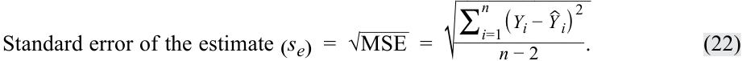
We show the ANOVA table for our ROA regression example in Exhibit 32, using the information from Exhibit 33. For a 5 percent level of significance, the critical F -value for the test of whether the model is a good fit (i.e., whether the slope coefficient is different from zero) is 7.71. We can get this critical value in the following ways:
Chúng ta trình bày bảng ANOVA cho ví dụ hồi quy ROA của chúng ta trong Bảng 33 (dựa theo cấu trúc của Bảng 32). Tại mức ý nghĩa 5%, giá trị $F$ tới hạn cho kiểm định xem liệu mô hình có độ phù hợp tốt hay không (tức là liệu hệ số góc có khác 0 hay không) là $7.71$. Chúng ta có thể lấy giá trị tới hạn này theo các cách sau:
-
Excel [F.INV(0.95,1,4)]
-
R [qf(.95,1,4)]
-
Python [from scipy.stats import f and f.ppf(.95,1,4)]
-
Excel:
[F.INV(0.95,1,4)] -
R:
[qf(.95,1,4)] -
Python:
[from scipy.stats import fvàf.ppf(.95,1,4)]
With a calculated F -statistic of 16.0104 and a critical F -value of 7.71, we reject the null hypothesis and conclude that the slope of our simple linear regression model for ROA is different from zero.
Với thống kê $F$ tính được là $16.0104$ và giá trị $F$ tới hạn là $7.71$, chúng ta bác bỏ giả thuyết không và kết luận rằng hệ số góc của mô hình hồi quy tuyến tính đơn cho ROA của chúng ta khác 0.
Exhibit 33: ANOVA Table for ROA Regression Model
Bảng 33: Bảng ANOVA cho Mô hình Hồi quy ROA
| Source | Sum of Squares |
Degrees of Freedom |
Mean Square | F-Statistic |
|---|---|---|---|---|
| Regression | 191.625 | 1 | 191.625 | 16.0104 |
| Error | 47.875 | 4 | 11.96875 | |
| Total | 239.50 | 5 |
| Nguồn biến thiên (Source) | Tổng bình phương (Sum of Squares) | Bậc tự do (Degrees of Freedom) | Trung bình bình phương (Mean Square) | Thống kê $F$ ($F$-Statistic) |
|---|---|---|---|---|
| Hồi quy (Regression) | 191.625 | 1 | 191.625 | 16.0104 |
| Sai số (Error) | 47.875 | 4 | 11.96875 | |
| Tổng (Total) | 239.50 | 5 |
The calculations to derive the ANOVA table and ultimately to test the goodness of fit of the regression model can be time consuming, especially for samples with many observations. However, statistical packages, such as SAS, SPSS Statistics, and Stata, as well as software, such as Excel, R, and Python, produce the ANOVA table as part of the output for regression analysis.
Các phép tính để lập bảng ANOVA và cuối cùng là kiểm định mức độ phù hợp của mô hình hồi quy có thể tốn nhiều thời gian, đặc biệt đối với các mẫu có nhiều quan sát. Tuy nhiên, các gói thống kê như SAS, SPSS Statistics và Stata, cũng như các phần mềm như Excel, R và Python, đều tạo ra bảng ANOVA như một phần của kết quả đầu ra cho phân tích hồi quy.
Prediction Using Simple Linear Regression and Prediction Intervals
Dự báo Sử dụng Hồi quy Tuyến tính Đơn và Khoảng Dự báo (Prediction Using Simple Linear Regression and Prediction Intervals)
Financial analysts often want to use regression results to make predictions about a dependent variable. For example, we might ask, “How fast will the sales of XYZ Corporation grow this year if real GDP grows by 4 percent?” But we are not merely interested in making these forecasts; we also want to know how certain we can be about the forecasts’ results. A forecasted value of the dependent variable, Yˆ f , is determined using the estimated intercept and slope, as well as the expected or forecasted independent variable, Xf:
Các nhà phân tích tài chính thường muốn sử dụng kết quả hồi quy để đưa ra các dự báo về biến phụ thuộc. Ví dụ, chúng ta có thể hỏi, “Doanh số của Tập đoàn XYZ sẽ tăng trưởng nhanh như thế nào trong năm nay nếu GDP thực tăng trưởng 4%?” Nhưng chúng ta không chỉ đơn thuần quan tâm đến việc đưa ra các dự báo này; chúng ta còn muốn biết mình có thể chắc chắn đến mức nào về kết quả của các dự báo đó. Một giá trị dự báo của biến phụ thuộc, $\hat{Y}_f$, được xác định bằng cách sử dụng hệ số chặn và hệ số góc ước lượng, cũng như biến độc lập kỳ vọng hoặc dự báo, $X_f$:
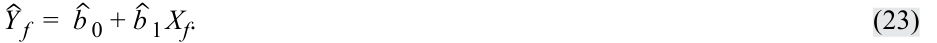
In our ROA regression model, if we forecast a company’s CAPEX to be 6 percent, the forecasted ROA based on our estimated equation is 12.375 percent:
Trong mô hình hồi quy ROA của chúng ta, nếu chúng ta dự báo CAPEX của một công ty là 6%, thì ROA dự báo dựa trên phương trình ước lượng của chúng ta là 12,375%:
Yˆ f = 4.875 +( 1.25 × 6) = 12.375 .
However, we need to consider that the estimated regression line does not describe the relation between the dependent and independent variables perfectly; it is an average of the relation between the two variables. This is evident because the residuals are not all zero.
Tuy nhiên, chúng ta cần lưu ý rằng đường hồi quy ước lượng không mô tả hoàn hảo mối quan hệ giữa biến phụ thuộc và biến độc lập; nó chỉ là mức trung bình của mối quan hệ giữa hai biến số. Điều này thể hiện rõ bởi vì không phải tất cả các phần dư đều bằng 0.
Therefore, an interval estimate of the forecast is needed to reflect this uncertainty. The estimated variance of the prediction error, sf2 , of Y , given X , is
Do đó, cần có một ước lượng khoảng (interval estimate) của dự báo để phản ánh sự không chắc chắn này. Phương sai ước lượng của sai số dự báo (prediction error), $s_f^2$, của $Y$ khi biết $X$ là:
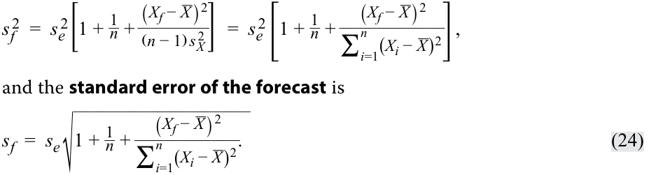
The standard error of the forecast depends on the following:
và sai số chuẩn của dự báo (standard error of the forecast) là:
-
the standard error of the estimate, se;
-
the number of observations, n ;
-
the forecasted value of the independent variable, Xf, used to predict the dependent variable and its deviation from the estimated mean, X_ ; and
-
the variation of the independent variable.
Sai số chuẩn của dự báo phụ thuộc vào các yếu tố sau:
We can see the following from the equation for the standard error of the forecast:
-
sai số chuẩn của ước lượng, $s_e$;
-
số lượng quan sát, $n$;
-
giá trị dự báo của biến độc lập, $X_f$, được sử dụng để dự báo biến phụ thuộc và độ lệch của nó so với giá trị trung bình ước lượng, $\bar{X}$; và
-
sự biến thiên của biến độc lập.
Chúng ta có thể thấy những điều sau đây từ phương trình tính sai số chuẩn của dự báo:
1. The better the fit of the regression model, the smaller the standard error of the estimate (se) and, therefore, the smaller standard error of the forecast.
1. Mô hình hồi quy có độ phù hợp càng tốt thì sai số chuẩn của ước lượng ($s_e$) càng nhỏ và do đó, sai số chuẩn của dự báo ($s_f$) càng nhỏ.
2. The larger the sample size ( n ) in the regression estimation, the smaller the standard error of the forecast.
2. Cỡ mẫu ($n$) trong ước lượng hồi quy càng lớn thì sai số chuẩn của dự báo càng nhỏ.
3. The closer the forecasted independent variable (Xf) is to the mean of the independent variable( X_) used in the regression estimation, the smaller the standard error of the forecast.
3. Biến độc lập dự báo ($X_f$) càng gần với giá trị trung bình của biến độc lập ($\bar{X}$) được sử dụng trong ước lượng hồi quy thì sai số chuẩn của dự báo càng nhỏ.
Once we have this estimate of the standard error of the forecast, determining a prediction interval around the predicted value of the dependent variable ( Yˆ f ) is very similar to estimating a confidence interval around an estimated parameter. The prediction interval is
Một khi chúng ta có ước lượng này về sai số chuẩn của dự báo, việc xác định một khoảng dự báo (prediction interval) xung quanh giá trị dự báo của biến phụ thuộc ($\hat{Y}_f$) rất giống với việc ước lượng một khoảng tin cậy (confidence interval) xung quanh một tham số ước lượng. Khoảng dự báo là:
Yˆ f ± tcritical for α /2 sf .
We outline the steps for developing the prediction interval in Exhibit 34.
Chúng ta phác thảo các bước để xây dựng khoảng dự báo trong Hình 34.
Exhibit 34: Creating a Prediction Interval around the Predicted Dependent Variable
Hình 34: Tạo Khoảng Dự báo xung quanh Biến phụ thuộc Dự báo
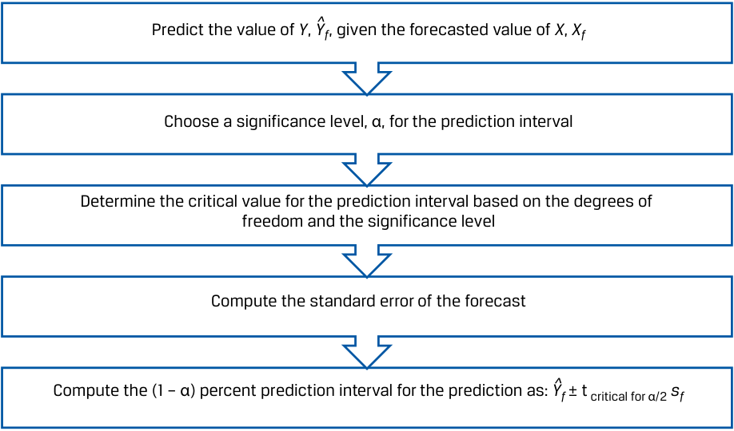
Chú thích hình ảnh (Quy trình 5 bước): 1. Dự báo giá trị của $Y$, tức $\hat{Y}_f$, khi biết giá trị dự báo của $X$, tức $X_f$. 2. Chọn một mức ý nghĩa, $\alpha$, cho khoảng dự báo. 3. Xác định giá trị tới hạn cho khoảng dự báo dựa trên bậc tự do và mức ý nghĩa. 4. Tính sai số chuẩn của dự báo ($s_f$). 5. Tính khoảng dự báo $(1 - \alpha)\%$ cho giá trị dự báo theo công thức: $\hat{Y}_f \pm t_{\text{critical for }\alpha/2} s_f$.
For our ROA regression model, given that the forecasted value of CAPEX is 6.0, the predicted value of Y is 12.375:
Đối với mô hình hồi quy ROA của chúng ta, biết rằng giá trị dự báo của CAPEX là $6.0$, giá trị dự báo của $Y$ là $12.375$:
Yˆ f = 4.875 + 1.25 Xf = 4.875 +( 1.25 × 6.0) = 12.375.
Assuming a 5 percent significance level ( α ), two sided, with n − 2 degrees of freedom (so, df = 4), the critical values for the prediction interval are ±2.776. The standard error of the forecast is
Giả sử mức ý nghĩa 5% ($\alpha$), kiểm định hai phía, với $n - 2$ bậc tự do (tức $\text{df} = 4$), các giá trị tới hạn cho khoảng dự báo là $\pm 2.776$. Sai số chuẩn của dự báo là:
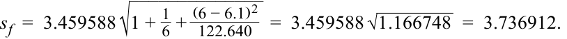
The 95 percent prediction interval then becomes
Khi đó, khoảng dự báo 95% trở thành:
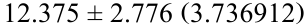
12.375 ± 10.3737
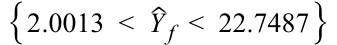
For our ROA regression example, we can see how the standard error of the forecast ( sf ) changes as our forecasted value of the independent variable gets farther from the mean of the independent variable ( Xf − X_ ) in Exhibit 35. The mean of CAPEX is 6.1
percent, and the band that represents one standard error of the forecast, above and below the forecast, is minimized at that point and increases as the independent variable gets farther from X_ .
Đối với ví dụ hồi quy ROA của chúng ta, chúng ta có thể thấy sai số chuẩn của dự báo ($s_f$) thay đổi như thế nào khi giá trị dự báo của biến độc lập rời xa dần giá trị trung bình của biến độc lập $(X_f - \bar{X})$ trong Hình 35. Giá trị trung bình của CAPEX là 6,1%, và dải băng biểu thị một sai số chuẩn của dự báo, nằm phía trên và phía dưới mức dự báo, đạt mức tối thiểu tại điểm đó và mở rộng dần khi biến độc lập rời xa $\bar{X}$.
Exhibit 35: ROA Forecasts and Standard Error of the Forecast
Hình 35: Dự báo ROA và Sai số chuẩn của Dự báo
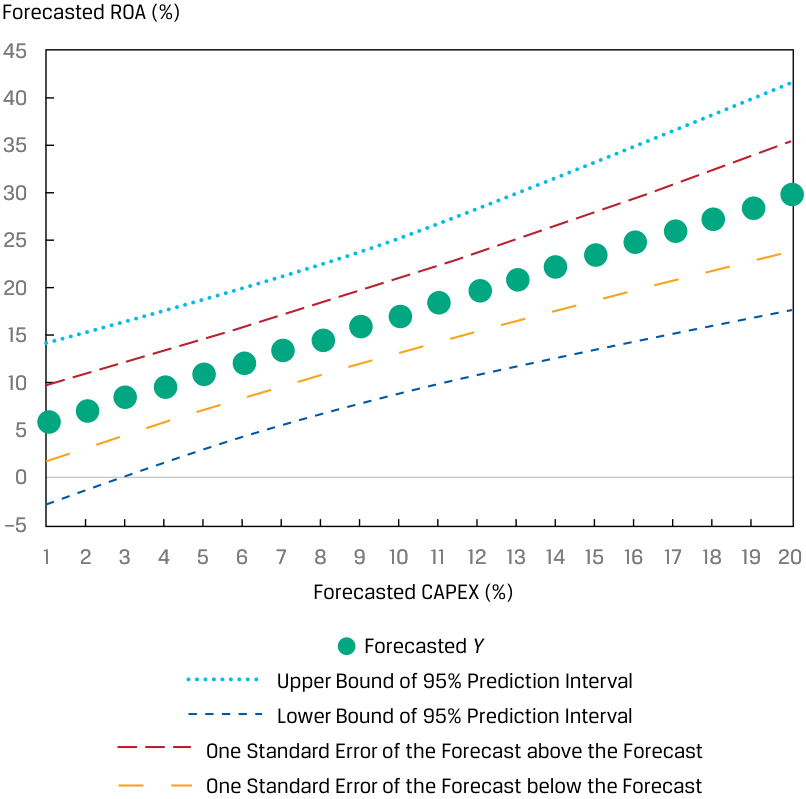
Chú thích hình ảnh: Trục tung: ROA dự báo (%). Trục hoành: CAPEX dự báo (%). Hiển thị đường Dự báo $Y$ (Forecasted $Y$), Cận trên và Cận dưới của Khoảng dự báo 95% (Upper/Lower Bound of 95% Prediction Interval), cùng với các đường cộng/trừ 1 Sai số chuẩn của dự báo (One Standard Error of the Forecast above/below the Forecast). Các đường giới hạn loe rộng ra khi $X_f$ rời xa mức trung bình $6.1\%$.
QUESTION SET
BỘ CÂU HỎI (QUESTION SET)
Suppose you run a cross-sectional regression for 100 companies, where the dependent variable is the annual return on stock and the independent variable is the lagged percentage of institutional ownership (INST). The results of this simple linear regression estimation are shown in Exhibit 36. Evaluate the model by answering questions 1–4.
Giả sử bạn chạy một hồi quy dữ liệu chéo cho 100 công ty, trong đó biến phụ thuộc là tỷ suất sinh lợi cổ phiếu hàng năm và biến độc lập là tỷ lệ phần trăm sở hữu của tổ chức có độ trễ (lagged percentage of institutional ownership – INST). Kết quả của ước lượng hồi quy tuyến tính đơn này được trình bày trong Bảng 36. Hãy đánh giá mô hình bằng cách trả lời các câu hỏi 1–4.
Exhibit 36: ANOVA Table for Annual Stock Return Regressed on Institutional Ownership
Bảng 36: Bảng ANOVA cho Tỷ suất sinh lợi Cổ phiếu Hàng năm được Hồi quy theo Tỷ lệ Sở hữu của Tổ chức
| Source | Sum of Squares | Degrees of Freedom | Mean Square |
|---|---|---|---|
| Regression | 576.1485 | 1 | 576.1485 |
| Error | 1,873.5615 | 98 | 19.1180 |
| Total | 2,449.7100 |
| Nguồn biến thiên (Source) | Tổng bình phương (Sum of Squares) | Bậc tự do (Degrees of Freedom) | Trung bình bình phương (Mean Square) |
|---|---|---|---|
| Hồi quy (Regression) | 576.1485 | 1 | 576.1485 |
| Sai số (Error) | 1,873.5615 | 98 | 19.1180 |
| Tổng (Total) | 2,449.7100 |
- What is the coefficient of determination for this regression model?
- Hệ số xác định (coefficient of determination) của mô hình hồi quy này là bao nhiêu?
Solution:
Lời giải:
The coefficient of determination is sum of squares regression/sum of squares total: 576.148 ÷ 2,449.71 = 0.2352, or 23.52 percent.
Hệ số xác định bằng tổng bình phương hồi quy chia cho tổng bình phương toàn phần: $576.1485 \div 2,449.71 = 0.2352$, hay 23,52%.
- What is the standard error of the estimate for this regression model? Solution:
- Sai số chuẩn của ước lượng (standard error of the estimate) của mô hình hồi quy này là bao nhiêu?
The standard error of the estimate is the square root of the mean square error: √_ 19.1180 = 4.3724 .
Lời giải:
- At a 5 percent level of significance, do we reject the null hypothesis of the slope coefficient equal to zero if the critical F -value is 3.938?
- Solution:
Sai số chuẩn của ước lượng là căn bậc hai của trung bình bình phương sai số (MSE): $\sqrt{19.1180} = 4.3724$.
Using a six-step process for testing hypotheses, we get the following:
- Tại mức ý nghĩa 5%, chúng ta có bác bỏ giả thuyết không cho rằng hệ số góc bằng 0 hay không nếu giá trị $F$ tới hạn là $3.938$?
Lời giải:
| Step 1 | State the hypotheses. | H_0:_b_1= 0 versus_Ha:_b_1≠ 0 |
|---|---|---|
| Step 2 | Identify the appropri- ate test statistic. |
F=MSR _ MSE with 1 and 98 degrees of freedom. |
| Step 3 | Specify the level of significance. |
α= 5% (one tail, right side). |
| Step 4 | State the decision rule. |
Critical_F_-value = 3.938. Reject the null hypothesis if the calculated F-statistic is greater than 3.938. |
| Step 5 | Calculate the test statistic. |
F=576.1485 _ 19.1180= 30.1364 |
| Step 6 | Make a decision. | Reject the null hypothesis because the cal- culated_F_-statistic is greater than the critical F-value. Evidence is sufficient to indicate that the slope coefficient is different from 0.0. |
Sử dụng quy trình sáu bước để kiểm định giả thuyết, chúng ta có:
- Based on your answers to the preceding questions, evaluate this simple linear regression model.
| Bước 1 | Phát biểu các giả thuyết. | $H_0: b_1 = 0$ đối lập với $H_a: b_1 \neq 0$ |
|---|---|---|
| Bước 2 | Xác định thống kê kiểm định phù hợp. | $F = \frac{\text{MSR}}{\text{MSE}}$ với 1 và 98 bậc tự do. |
| Bước 3 | Xác định mức ý nghĩa. | $\alpha = 5\%$ (một phía, bên phải). |
| Bước 4 | Phát biểu quy tắc quyết định. | Giá trị $F$ tới hạn $= 3.938$. Bác bỏ giả thuyết không nếu thống kê $F$ tính được lớn hơn $3.938$. |
| Bước 5 | Tính toán thống kê kiểm định. | $F = \frac{576.1485}{19.1180} = 30.1364$ |
| Bước 6 | Đưa ra quyết định. | Bác bỏ giả thuyết không bởi vì thống kê $F$ tính được lớn hơn giá trị $F$ tới hạn. Có đủ bằng chứng cho thấy hệ số góc khác $0.0$. |
Solution:
- Dựa trên câu trả lời của bạn cho các câu hỏi trước, hãy đánh giá mô hình hồi quy tuyến tính đơn này.
The coefficient of determination indicates that variation in the independent variable explains 23.52 percent of the variation in the dependent variable. Also, the F -statistic test confirms that the model’s slope coefficient is different from 0 at the 5 percent level of significance. In sum, the model seems to fit the data reasonably well.
Lời giải:
The following applies to questions 5-10
Hệ số xác định chỉ ra rằng sự biến thiên của biến độc lập giải thích được 23,52% sự biến thiên của biến phụ thuộc. Ngoài ra, kiểm định thống kê $F$ xác nhận rằng hệ số góc của mô hình khác 0 tại mức ý nghĩa 5%. Tóm lại, mô hình dường như khớp với dữ liệu khá tốt.
Suppose we want to forecast a company’s net profit margin (NPM) based on its research and development expenditures scaled by revenues (RDR), using the model estimated in Example 2 and the details provided in Exhibit 8. The regression model was estimated using data on eight companies as
Thông tin sau đây áp dụng cho các câu hỏi 5–10
Yˆ f = 16.5 − 1.3 Xf ,
Giả sử chúng ta muốn dự báo biên lợi nhuận ròng (NPM) của một công ty dựa trên chi tiêu nghiên cứu và phát triển được chuẩn hóa theo doanh thu (RDR) của công ty đó, sử dụng mô hình đã ước lượng ở phần trước và các chi tiết được cung cấp trong Bảng 8. Mô hình hồi quy đã được ước lượng bằng dữ liệu của tám công ty như sau:
với sai số chuẩn của ước lượng ($s_e$) là $1.8618987$ và phương sai của RDR, $\frac{\sum_{i=1}^{n} (X_i - \bar{X})^2}{n - 1}$, là $4.285714$ như đã cho.
______∑ ni with a standard error of the estimate (=1( Xi − X )2 _se ) of 1.8618987 and variance of RDR, , of 4.285714, as given. ( n − 1)
- Giá trị dự báo của NPM là bao nhiêu nếu giá trị dự báo của RDR là 5?
- What is the predicted value of NPM if the forecasted value of RDR is 5? Solution:
Lời giải:
The predicted value of NPM is 10: 16.5 − (1.3 × 5) = 10.
Giá trị dự báo của NPM là 10: $16.5 - (1.3 \times 5) = 10$.
-
What is the standard error of the forecast ( sf ) if the forecasted value of RDR is 5? Solution: To derive the standard error of the forecast ( sf ), we first have to calculate the variation of RDR. Then, we have all the pieces to calculate sf: ∑ ni =1 ( Xi − X )2 = 4.285714 × 7 = 30. ______________ _ 1 +_1 = 2.1499. _sf = 1.8618987 √ 8+ (5 − 7.5 30)2 7. What is the 95 percent prediction interval for the predicted value of NPM using critical t -values (df = 6) of ±2.447? Solution: The 95 percent prediction interval for the predicted value of NPM is {10 ± 2.447( 2.1499) } , { 4.7392 < Yˆ f < 15.2608 } . 8. What is the predicted value of NPM if the forecasted value of RDR is 15? Solution: The predicted value of NPM is −3: 16.5 − (1.3 × 15) = −3. 9. Referring to exhibit 9, what is the standard error of the forecast if the forecasted value of RDR is 15? Solution: To derive the standard error of the forecast, we first must calculate the variation of RDR. Then, we can calculate sf: ∑ ni =1 ( Xi − X )2 = 4.285714 × 7 = 30. _______________ _ 1 +_1 = 3.2249. _sf = 1.8618987 √ 8+ (15 − 7.5 30)2
-
What is the 95 percent prediction interval for the predicted value of NPM using critical t -values (df = 6) of ±2.447? Solution:
- Sai số chuẩn của dự báo ($s_f$) là bao nhiêu nếu giá trị dự báo của RDR là 5?
Lời giải:
Để suy ra sai số chuẩn của dự báo ($s_f$), trước tiên chúng ta phải tính sự biến thiên của RDR. Sau đó, chúng ta có tất cả các mảnh ghép để tính $s_f$:
- Khoảng dự báo 95% cho giá trị dự báo của NPM sử dụng các giá trị $t$ tới hạn ($\text{df} = 6$) bằng $\pm 2.447$ là bao nhiêu?
The 95 percent prediction interval for the predicted value of NPM is {− 3 ± 2.447( 3.2249) } , { − 10.8913 < Yˆ f < 4.8913 } .
Lời giải:
Khoảng dự báo 95% cho giá trị dự báo của NPM là $\{10 \pm 2.447(2.1499)\}$, hay $\{4.7392 < \hat{Y}_f < 15.2608\}$.
- Giá trị dự báo của NPM là bao nhiêu nếu giá trị dự báo của RDR là 15?
Lời giải:
The following applies to questions 11-15
Giá trị dự báo của NPM là $-3$: $16.5 - (1.3 \times 15) = -3$.
- Tham chiếu Bảng 9, sai số chuẩn của dự báo là bao nhiêu nếu giá trị dự báo của RDR là 15?
Lời giải:
Để suy ra sai số chuẩn của dự báo, trước tiên chúng ta phải tính sự biến thiên của RDR. Sau đó, chúng ta có thể tính $s_f$:
- Khoảng dự báo 95% cho giá trị dự báo của NPM sử dụng các giá trị $t$ tới hạn ($\text{df} = 6$) bằng $\pm 2.447$ là bao nhiêu?
You are examining the results of a regression estimation that attempts to explain the unit sales growth of a business you are researching. The analysis of variance output for the regression is given in the Exhibit 37. The regression was based on five observations ( n = 5).
Lời giải:
Khoảng dự báo 95% cho giá trị dự báo của NPM là $\{-3 \pm 2.447(3.2249)\}$, hay $\{-10.8913 < \hat{Y}_f < 4.8913\}$.
Thông tin sau đây áp dụng cho các câu hỏi 11–15
Bạn đang kiểm tra kết quả của một ước lượng hồi quy nhằm cố gắng giải thích tốc độ tăng trưởng doanh số theo đơn vị sản phẩm (unit sales growth) của một doanh nghiệp mà bạn đang nghiên cứu. Kết quả đầu ra phân tích phương sai (ANOVA) cho hồi quy được cho trong Bảng 37. Hồi quy được dựa trên năm quan sát ($n = 5$).
Exhibit 37: ANOVA Output
Bảng 37: Kết quả Đầu ra ANOVA (ANOVA Output)
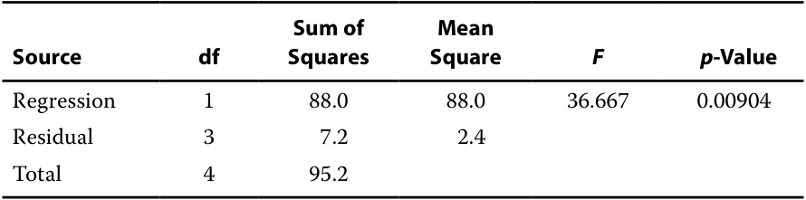
- Calculate the sample variance of the dependent variable using information in the table.
| Nguồn (Source) | Bậc tự do (df) | Tổng bình phương (Sum of Squares) | Trung bình bình phương (Mean Square) | $F$ | Trị số $p$ ($p$-Value) |
|---|---|---|---|---|---|
| Hồi quy (Regression) | 1 | 88.0 | 88.0 | 36.667 | 0.00904 |
| Phần dư (Residual) | 3 | 7.2 | 2.4 | ||
| Tổng (Total) | 4 | 95.2 |
Solution:
- Tính phương sai mẫu (sample variance) của biến phụ thuộc bằng cách sử dụng thông tin trong bảng.
The sample variance of the dependent variable is the sum of squares total divided by its degrees of freedom ( n − 1 = 5 − 1 = 4, as given). Thus, the sample variance of the dependent variable is 95.2 ÷ 4 = 23.8.
Lời giải:
- Calculate the coefficient of determination for this estimated model.
Phương sai mẫu của biến phụ thuộc là tổng bình phương toàn phần chia cho bậc tự do của nó ($n - 1 = 5 - 1 = 4$, như đã cho). Do đó, phương sai mẫu của biến phụ thuộc là $95.2 \div 4 = 23.8$.
Solution:
- Tính hệ số xác định (coefficient of determination) cho mô hình ước lượng này.
The coefficient of determination = 88.0 ÷ 95.2 = 0.92437.
Lời giải:
- What hypothesis does the F -statistic test?
Hệ số xác định $= 88.0 \div 95.2 = 0.92437$.
Solution:
- Thống kê $F$ kiểm định giả thuyết nào?
The F -statistic tests whether all the slope coefficients in a linear regression are equal to zero.
Lời giải:
- Is the F -test significant at the 0.05 significance level?
Thống kê $F$ kiểm định xem liệu tất cả các hệ số góc trong một hồi quy tuyến tính có bằng 0 hay không.
- Kiểm định $F$ có ý nghĩa thống kê tại mức ý nghĩa $0.05$ hay không?
Solution:
Lời giải:
The calculated value of the F -statistic is 36.667, as shown in Exhibit 32. The corresponding p -value is less than 0.05, so you reject the null hypothesis of a slope equal to zero.
Giá trị tính được của thống kê $F$ là $36.667$, như trình bày trong Bảng 37. Trị số $p$ tương ứng ($0.00904$) nhỏ hơn $0.05$, vì vậy bạn bác bỏ giả thuyết không cho rằng hệ số góc bằng 0.
- Calculate the standard error of the estimate.
- Tính sai số chuẩn của ước lượng (standard error of the estimate).
Solution:
Lời giải:
The standard error of the estimate is the square root of the mean square error: se = √_ 2.4 = 1.54919.
Sai số chuẩn của ước lượng là căn bậc hai của trung bình bình phương sai số: $s_e = \sqrt{2.4} = 1.54919$.
6
6
FUNCTIONAL FORMS FOR SIMPLE LINEAR REGRESSION
CÁC DẠNG HÀM CHO HỒI QUY TUYẾN TÍNH ĐƠN (FUNCTIONAL FORMS FOR SIMPLE LINEAR REGRESSION)
describe different functional forms of simple linear regressions
- mô tả các dạng hàm (functional forms) khác nhau của hồi quy tuyến tính đơn
Not every set of independent and dependent variables has a linear relation. In fact, we often see non-linear relationships in economic and financial data. Consider the revenues of a company over time illustrated in Exhibit 38, with revenues as the dependent
Không phải mọi tập hợp biến độc lập và biến phụ thuộc đều có mối quan hệ tuyến tính. Trên thực tế, chúng ta thường thấy các mối quan hệ phi tuyến tính trong dữ liệu kinh tế và tài chính. Hãy xem xét doanh thu của một công ty theo thời gian được minh họa trong Hình 38, với doanh thu là biến phụ thuộc
( Y ) variable and time as the independent ( X ) variable. Revenues grow at a rate of 15 percent per year for several years, but then the growth rate eventually declines to just 5 percent per year. Estimating this relationship as a simple linear model would understate the dependent variable, revenues, and, for some ranges of the independent variable, time, and would overstate it for other ranges of the independent variable.
($Y$) và thời gian là biến độc lập ($X$). Doanh thu tăng trưởng ở mức 15% mỗi năm trong một vài năm, nhưng sau đó tốc độ tăng trưởng cuối cùng giảm xuống chỉ còn 5% mỗi năm. Việc ước lượng mối quan hệ này dưới dạng một mô hình tuyến tính đơn sẽ ước lượng thấp hơn thực tế (understate) biến phụ thuộc (doanh thu) đối với một số khoảng của biến độc lập (thời gian), và sẽ ước lượng cao hơn thực tế (overstate) đối với các khoảng khác của biến độc lập.
Exhibit 38: Company Revenues over Time
Hình 38: Doanh thu Công ty theo Thời gian
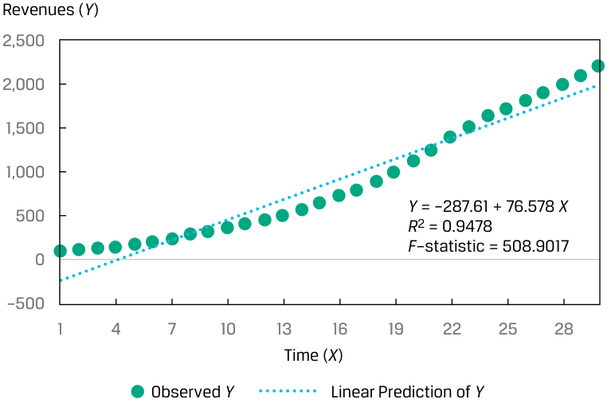
Chú thích hình ảnh: Trục tung: Doanh thu ($Y$). Trục hoành: Thời gian ($X$, từ 1 đến 30). Phương trình tuyến tính: $Y = -287.61 + 76.578X$, $R^2 = 0.9478$, $F\text{-statistic} = 508.9017$. Hiển thị Giá trị $Y$ quan sát (Observed $Y$) và Dự báo tuyến tính của $Y$ (Linear Prediction of $Y$).
We can still use the simple linear regression model, but we need to modify either the dependent or the independent variables to make it work well. This is the case with many different financial or economic data that you might use as dependent and independent variables in your regression analysis.
Chúng ta vẫn có thể sử dụng mô hình hồi quy tuyến tính đơn, nhưng chúng ta cần điều chỉnh biến phụ thuộc hoặc biến độc lập để làm cho mô hình hoạt động tốt. Đây là trường hợp của nhiều dữ liệu tài chính hoặc kinh tế khác nhau mà bạn có thể sử dụng làm biến phụ thuộc và biến độc lập trong phân tích hồi quy của mình.
Several different functional forms can be used to potentially transform the data to enable their use in linear regression. These transformations include using the log (i.e., natural logarithm) of the dependent variable, the log of the independent variable, the reciprocal of the independent variable, the square of the independent variable, or the differencing of the independent variable. We illustrate and discuss three often-used functional forms, each of which involves log transformation:
Một số dạng hàm (functional forms) khác nhau có thể được sử dụng để biến đổi dữ liệu nhằm cho phép sử dụng chúng trong hồi quy tuyến tính. Những phép biến đổi này bao gồm việc sử dụng logarit (tức là logarit tự nhiên – natural logarithm) của biến phụ thuộc, logarit của biến độc lập, nghịch đảo của biến độc lập, bình phương của biến độc lập, hoặc lấy sai phân (differencing) của biến độc lập. Chúng ta minh họa và thảo luận ba dạng hàm thường được sử dụng, mỗi dạng đều liên quan đến phép biến đổi logarit:
1. the log-lin model , in which the dependent variable is logarithmic but the independent variable is linear;
1. Mô hình log-tuyến tính (log-lin model), trong đó biến phụ thuộc ở dạng logarit nhưng biến độc lập ở dạng tuyến tính;
2. the lin-log model , in which the dependent variable is linear but the independent variable is logarithmic; and
2. Mô hình tuyến tính-log (lin-log model), trong đó biến phụ thuộc ở dạng tuyến tính nhưng biến độc lập ở dạng logarit; và
3. the log-log model , in which both the dependent and independent variables are in logarithmic form.
3. Mô hình log-log (log-log model), trong đó cả biến phụ thuộc và biến độc lập đều ở dạng logarit.
The Log-Lin Model
_Mô hình Log-Tuyến tính (The Log-Lin Model)_
In the log-lin model, the dependent variable is in logarithmic form and the independent variable is not, as follows:
Trong mô hình log-tuyến tính (log-lin model), biến phụ thuộc ở dạng logarit và biến độc lập thì không, như sau:
ln Yi = b 0 + b 1 Xi .
The slope coefficient in this model is the relative change in the dependent variable for an absolute change in the independent variable. We can transform the Y variable (revenues) in Exhibit 38 into its natural log (ln) and then fit the regression line, as shown in Exhibit 39. From this chart, we see that the log-lin model is a better-fitting model than the simple linear regression model.
Hệ số góc trong mô hình này là mức thay đổi tương đối (relative change) trong biến phụ thuộc ứng với một mức thay đổi tuyệt đối (absolute change) trong biến độc lập. Chúng ta có thể biến đổi biến $Y$ (doanh thu) trong Hình 38 thành logarit tự nhiên ($\ln$) của nó và sau đó khớp đường hồi quy, như trình bày trong Hình 39. Từ biểu đồ này, chúng ta thấy rằng mô hình log-lin là một mô hình khớp tốt hơn so với mô hình hồi quy tuyến tính đơn.
Exhibit 39: Log-Lin Model Applied to Company Revenues over Time
Hình 39: Mô hình Log-Lin được Áp dụng cho Doanh thu Công ty theo Thời gian
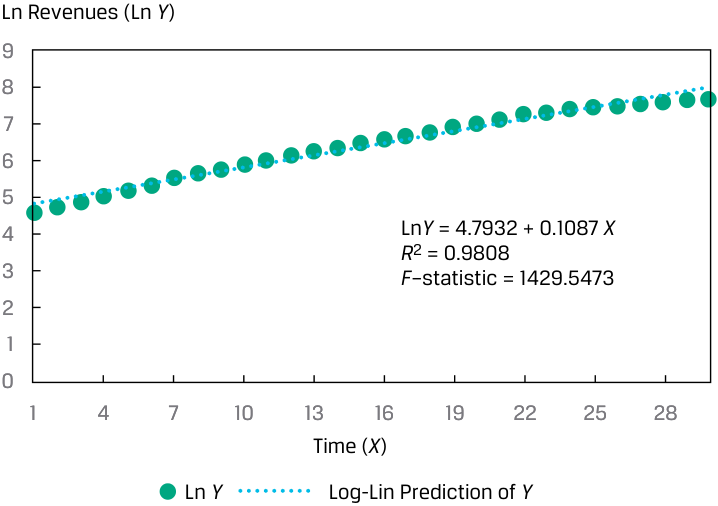
Chú thích hình ảnh: Trục tung: $\ln$ Doanh thu ($\ln Y$). Trục hoành: Thời gian ($X$). Phương trình: $\ln Y = 4.7932 + 0.1087X$, $R^2 = 0.9808$, $F\text{-statistic} = 1429.5473$.
It is important to note that in working with a log-lin model, you must take care when making a forecast. For example, suppose the estimated regression model is ln Y = −7 + 2 X. If X is 2.5 percent, then the forecasted value of ln Y is −2. In this case, the predicted value of Y is the antilog of −2, or e−2 = 0.135335. Another caution is that you cannot directly compare a log-lin model with a lin-lin model (i.e., the regression of Y on X without any transformation) because the dependent variables are not in the same form—we would have to transform the R2 and F -statistic to enable a comparison. Looking at the residuals, however, is helpful:
Điều quan trọng cần lưu ý là khi làm việc với mô hình log-lin, bạn phải cẩn thận khi đưa ra dự báo. Ví dụ, giả sử mô hình hồi quy ước lượng là $\ln Y = -7 + 2X$. Nếu $X$ là 2,5%, thì giá trị dự báo của $\ln Y$ là $-2$. Trong trường hợp này, giá trị dự báo của $Y$ là đối logarit (antilog) của $-2$, hay $e^{-2} = 0.135335$. Một lưu ý thận trọng khác là bạn không thể so sánh trực tiếp một mô hình log-lin với một mô hình lin-lin (tức là hồi quy của $Y$ theo $X$ mà không có bất kỳ phép biến đổi nào) bởi vì các biến phụ thuộc không ở cùng một dạng—chúng ta sẽ phải biến đổi $R^2$ và thống kê $F$ để có thể so sánh. Tuy nhiên, việc xem xét các phần dư lại rất hữu ích.
The Lin-Log Model
_Mô hình Tuyến tính-Log (The Lin-Log Model)_
The lin-log model is similar to the log-lin model, but only the independent variable is in logarithmic form:
Mô hình tuyến tính-log (lin-log model) tương tự như mô hình log-lin, nhưng chỉ có biến độc lập ở dạng logarit:
Yi = b 0 + b 1 ln Xi .
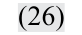
The slope coefficient in this regression model provides the absolute change in the dependent variable for a relative change in the independent variable.
Hệ số góc trong mô hình hồi quy này cung cấp mức thay đổi tuyệt đối (absolute change) trong biến phụ thuộc ứng với một mức thay đổi tương đối (relative change) trong biến độc lập.
Suppose an analyst is examining the cross-sectional relationship between operating profit margin, the dependent variable ( Y ), and unit sales, the independent variable ( X ), and gathers data on a sample of 30 companies. The scatter plot and regression line for these observations are shown in Exhibit 40. Although the slope is different from zero at the 5 percent level (the calculated t -statistic on the slope is 5.8616, compared with critical t -values of ±2.048), given the R2 of 55.10 percent, the issue is whether we can get a better fit by using a different functional form.
Giả sử một nhà phân tích đang kiểm tra mối quan hệ dữ liệu chéo giữa biên lợi nhuận hoạt động (operating profit margin), biến phụ thuộc ($Y$), và doanh số theo đơn vị sản phẩm (unit sales), biến độc lập ($X$), và thu thập dữ liệu trên một mẫu gồm 30 công ty. Biểu đồ phân tán và đường hồi quy cho các quan sát này được trình bày trong Hình 40. Mặc dù hệ số góc khác 0 tại mức ý nghĩa 5% (thống kê $t$ tính được của hệ số góc là $5.8616$, so với giá trị $t$ tới hạn là $\pm 2.048$), với $R^2$ là 55,10%, vấn đề đặt ra là liệu chúng ta có thể đạt được mức độ phù hợp tốt hơn bằng cách sử dụng một dạng hàm khác hay không.
Exhibit 40: Relationship between Operating Profit Margin and Unit Sales
Hình 40: Mối quan hệ giữa Biên lợi nhuận Hoạt động và Doanh số theo Đơn vị sản phẩm
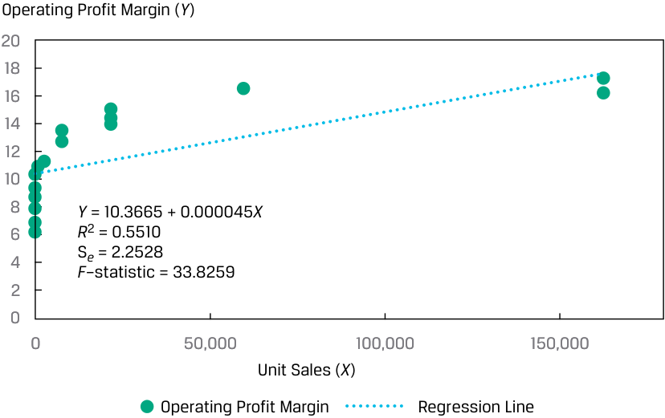
Chú thích hình ảnh: Trục tung: Biên lợi nhuận hoạt động ($Y$). Trục hoành: Doanh số theo đơn vị ($X$). Phương trình: $Y = 10.3665 + 0.000045X$, $R^2 = 0.5510$, $s_e = 2.2528$, $F\text{-statistic} = 33.8259$.
If instead we use the natural log of the unit sales as the independent variable in our model, we get a very different picture, as shown in Exhibit 41. The R2 for the model of operating profit margin regressed on the natural log of unit sales jumps to 97.17 percent. Because the dependent variable is the same in both the original and transformed models, we can compare the standard error of the estimate: 2.2528 with the original independent variable and a much lower 0.5629 with the transformed independent variable. Clearly the log-transformed explanatory variable has resulted in a better-fitting model.
Nếu thay vào đó chúng ta sử dụng logarit tự nhiên của doanh số theo đơn vị sản phẩm làm biến độc lập trong mô hình của mình, chúng ta sẽ nhận được một bức tranh rất khác, như trình bày trong Hình 41. Hệ số $R^2$ cho mô hình biên lợi nhuận hoạt động được hồi quy theo logarit tự nhiên của doanh số theo đơn vị sản phẩm nhảy vọt lên 97,17%. Bởi vì biến phụ thuộc là như nhau trong cả mô hình gốc và mô hình đã biến đổi, chúng ta có thể so sánh sai số chuẩn của ước lượng: $2.2528$ với biến độc lập gốc và mức thấp hơn nhiều là $0.5659$ (văn bản ghi $0.5629$, hình ghi $0.5659$) với biến độc lập đã biến đổi. Rõ ràng biến giải thích được biến đổi logarit đã mang lại một mô hình có độ phù hợp tốt hơn.
Exhibit 41: Relationship Between Operating Profit Margin and Natural Logarithm of Unit Sales
Hình 41: Mối quan hệ giữa Biên lợi nhuận Hoạt động và Logarit Tự nhiên của Doanh số theo Đơn vị sản phẩm
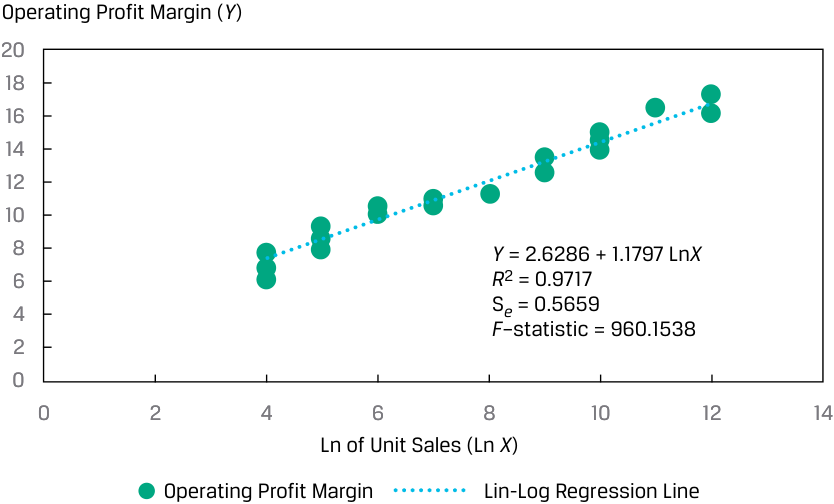
Chú thích hình ảnh: Trục tung: Biên lợi nhuận hoạt động ($Y$). Trục hoành: $\ln$ của Doanh số theo đơn vị ($\ln X$). Phương trình: $Y = 2.6286 + 1.1797 \ln X$, $R^2 = 0.9717$, $s_e = 0.5659$, $F\text{-statistic} = 960.1538$.
The Log-Log Model
_Mô hình Log-Log (The Log-Log Model)_
The log-log model, in which both the dependent variable and the independent variable are linear in their logarithmic forms, is also referred to as the double-log model: ln Yi = b 0 + b 1 ln Xi . ~~(27)~~
Mô hình log-log (log-log model), trong đó cả biến phụ thuộc và biến độc lập đều tuyến tính dưới dạng logarit của chúng, còn được gọi là mô hình log kép (double-log model):
This model is useful in calculating elasticities because the slope coefficient is the relative change in the dependent variable for a relative change in the independent variable. Consider a cross-sectional model of company revenues (the Y variable) regressed on advertising spending as a percentage of selling, general, and administrative expenses, ADVERT (the X variable). As shown in Exhibit 42, a simple linear regression model results in a shallow regression line, with a coefficient of determination of just 20.89 percent.
Mô hình này rất hữu ích trong việc tính toán độ co giãn (elasticities) bởi vì hệ số góc là mức thay đổi tương đối (relative change) trong biến phụ thuộc ứng với một mức thay đổi tương đối trong biến độc lập. Hãy xem xét một mô hình dữ liệu chéo của doanh thu công ty (biến $Y$) được hồi quy theo chi tiêu quảng cáo tính theo tỷ lệ phần trăm của chi phí bán hàng, chi phí chung và quản lý (SG&A), ký hiệu là $\text{ADVERT}$ (biến $X$). Như trình bày trong Hình 42, mô hình hồi quy tuyến tính đơn tạo ra một đường hồi quy khá thoải, với hệ số xác định chỉ đạt 20,89%.
Exhibit 42: Fitting a Linear Relation Between Revenues and Advertising Spending
Hình 42: Khớp Mối quan hệ Tuyến tính giữa Doanh thu và Chi tiêu Quảng cáo
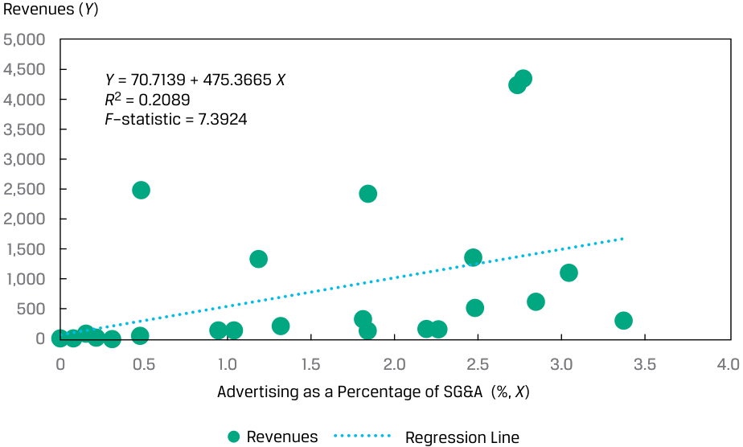
Chú thích hình ảnh: Trục tung: Doanh thu ($Y$). Trục hoành: Quảng cáo tính theo tỷ lệ % của SG&A (%, $X$). Phương trình: $Y = 70.7139 + 475.3665X$, $R^2 = 0.2089$, $F\text{-statistic} = 7.3924$.
If instead we use the natural logarithms of both the revenues and ADVERT, we get a much different picture of this relationship. As shown in Exhibit 43, the estimated regression line has a significant positive slope; the log-log model’s R2 increases by more than four times, from 20.89 percent to 84.91 percent; and the F -statistic jumps from 7.39 to 157.52. So, using the log-log transformation dramatically improves the regression model fit relative to our data.
Nếu thay vào đó chúng ta sử dụng logarit tự nhiên của cả doanh thu và $\text{ADVERT}$, chúng ta sẽ có một bức tranh rất khác về mối quan hệ này. Như trình bày trong Hình 43, đường hồi quy ước lượng có hệ số góc dương có ý nghĩa thống kê; hệ số $R^2$ của mô hình log-log tăng hơn bốn lần, từ 20,89% lên 84,91%; và thống kê $F$ nhảy vọt từ $7.39$ lên $157.52$. Do đó, việc sử dụng phép biến đổi log-log cải thiện đáng kể mức độ phù hợp của mô hình hồi quy đối với dữ liệu của chúng ta.
Exhibit 43: Fitting a Log-Log Model of Revenues and Advertising Spending
Hình 43: Khớp Mô hình Log-Log của Doanh thu và Chi tiêu Quảng cáo
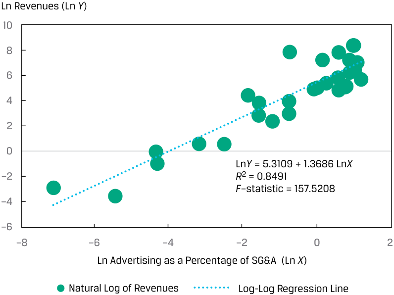
Chú thích hình ảnh: Trục tung: $\ln$ Doanh thu ($\ln Y$). Trục hoành: $\ln$ Quảng cáo tính theo tỷ lệ % của SG&A ($\ln X$). Phương trình: $\ln Y = 5.3109 + 1.3686 \ln X$, $R^2 = 0.8491$, $F\text{-statistic} = 157.5208$.
Selecting the Correct Functional Form
_Lựa chọn Dạng hàm Đúng (Selecting the Correct Functional Form)_
The key to fitting the appropriate functional form of a simple linear regression is examining the goodness-of-fit measures—the coefficient of determination ( R2 ), the F -statistic, and the standard error of the estimate ( se )—as well as examining whether there are patterns in the residuals. In addition to fit statistics, most statistical packages provide plots of residuals as part of the regression output, which enables you to visually inspect the residuals. To reiterate an important point, what you want to see in these plots is random residuals.
Chìa khóa để khớp dạng hàm phù hợp của một hồi quy tuyến tính đơn là xem xét các thước đo mức độ phù hợp (goodness-of-fit measures)—hệ số xác định ($R^2$), thống kê $F$, và sai số chuẩn của ước lượng ($s_e$)—cũng như kiểm tra xem liệu có các quy luật (patterns) trong phần dư hay không. Ngoài các thống kê về độ phù hợp, hầu hết các gói thống kê đều cung cấp đồ thị phần dư như một phần của kết quả đầu ra hồi quy, cho phép bạn kiểm tra trực quan các phần dư. Để nhắc lại một điểm quan trọng, điều bạn muốn thấy trong các đồ thị này là các phần dư mang tính ngẫu nhiên.
As an example, consider the relationship between the monthly returns on DEF stock and the monthly returns of the EAA Equity Index, as depicted in Panel A of Exhibit 44, with the regression line indicated. Using the equation for this regression line, we calculate the residuals and plot them against the EAA Equity Index, as shown in Panel B of Exhibit 44. The residuals appear to be random, bearing no relation to the independent variable. The distribution of the residuals, shown in Panel C of Exhibit 44, shows that the residuals are approximately normal. Using statistical software, we can investigate further by examining the distribution of the residuals, including using a normal probability plot or statistics to test for normality of the residuals.
Để làm ví dụ, hãy xem xét mối quan hệ giữa tỷ suất sinh lợi hàng tháng của cổ phiếu DEF và tỷ suất sinh lợi hàng tháng của Chỉ số Cổ phiếu EAA, như được mô tả trong Phần A của Hình 44, kèm theo đường hồi quy. Sử dụng phương trình của đường hồi quy này, chúng ta tính toán phần dư và vẽ đồ thị của chúng theo Chỉ số Cổ phiếu EAA, như trình bày trong Phần B của Hình 44. Các phần dư có vẻ ngẫu nhiên, không mang mối liên hệ nào với biến độc lập. Phân phối của phần dư, được trình bày trong Phần C của Hình 44, cho thấy các phần dư xấp xỉ phân phối chuẩn. Sử dụng phần mềm thống kê, chúng ta có thể nghiên cứu sâu hơn bằng cách kiểm tra phân phối của phần dư, bao gồm việc sử dụng biểu đồ xác suất chuẩn (normal probability plot) hoặc các thống kê để kiểm định tính phân phối chuẩn của phần dư.
Exhibit 44: Monthly Returns on DEF Stock Regressed on Returns on the EAA Index
Hình 44: Tỷ suất sinh lợi Hàng tháng của Cổ phiếu DEF được Hồi quy theo Tỷ suất sinh lợi của Chỉ số EAA
A. Scatterplot of Returns on DEF Stock and Return on the EAA Index Return on DEF Stock (%)
A. Biểu đồ phân tán của Tỷ suất sinh lợi Cổ phiếu DEF và Tỷ suất sinh lợi Chỉ số EAA
Tỷ suất sinh lợi Cổ phiếu DEF (%)
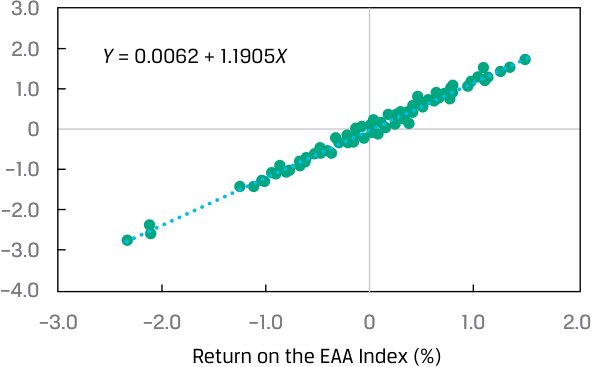
Chú thích hình ảnh (Phần A): Trục tung: Tỷ suất sinh lợi cổ phiếu DEF (%). Trục hoành: Tỷ suất sinh lợi Chỉ số EAA (%). Phương trình đường hồi quy: $Y = 0.0062 + 1.1905X$.
B. Scatterplot of Residuals and the Returns on the EAA Index
B. Biểu đồ phân tán của Phần dư và Tỷ suất sinh lợi Chỉ số EAA
Residual Return on DEF Stock (%)
Phần dư Tỷ suất sinh lợi Cổ phiếu DEF (%)
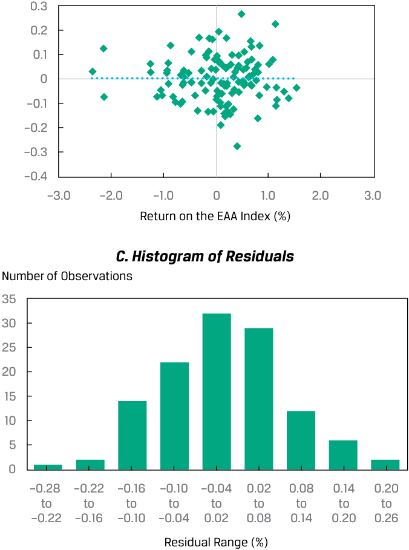
Chú thích hình ảnh (Phần B & C): - B. Biểu đồ phân tán của phần dư: Các điểm phần dư phân bố ngẫu nhiên quanh đường 0 trên toàn bộ dải giá trị của Tỷ suất sinh lợi Chỉ số EAA (%). - C. Biểu đồ tần suất của phần dư (Histogram of Residuals): Trục tung: Số lượng quan sát (Number of Observations). Trục hoành: Khoảng phần dư (Residual Range, %). Hình dáng quả chuông đối xứng cho thấy phần dư có phân phối xấp xỉ chuẩn.
QUESTION SET
BỘ CÂU HỎI (QUESTION SET)
An analyst is investigating the relationship between the annual growth in consumer spending (CONS) in a country and the annual growth in the country’s GDP (GGDP). The analyst estimates the two models in Exhibit 45.
Một nhà phân tích đang nghiên cứu mối quan hệ giữa tốc độ tăng trưởng chi tiêu tiêu dùng hàng năm ($\text{CONS}$) ở một quốc gia và tốc độ tăng trưởng GDP hàng năm của quốc gia đó ($\text{GGDP}$). Nhà phân tích ước lượng hai mô hình trong Bảng 45.
Exhibit 45: Model Estimates
Bảng 45: Các Ước lượng Mô hình (Model Estimates)
| Model 1 | Model 2 | |
|---|---|---|
| GGDPi=_b_0+_b_1CONSi+ εi | GGDPi=_b_0+_b_1ln(CONSi) + εi |
|
| Intercept | 1.040 | 1.006 |
| Slope | 0.669 | 1.994 |
| R2 | 0.788 | 0.867 |
| Standard error of | 0.404 | 0.320 |
| the estimate | ||
| F-statistic | 141.558 | 247.040 |
| Mô hình 1 (Model 1) | Mô hình 2 (Model 2) | |
|---|---|---|
| $\text{GGDP}_i = b_0 + b_1 \text{CONS}_i + \varepsilon_i$ | $\text{GGDP}_i = b_0 + b_1 \ln(\text{CONS}_i) + \varepsilon_i$ | |
| Hệ số chặn (Intercept) | 1.040 | 1.006 |
| Hệ số góc (Slope) | 0.669 | 1.994 |
| $R^2$ | 0.788 | 0.867 |
| Sai số chuẩn của ước lượng (Standard error of the estimate) | 0.404 | 0.320 |
| Thống kê $F$ ($F$-statistic) | 141.558 | 247.040 |
- Identify the functional form used in these models.
- Xác định dạng hàm (functional form) được sử dụng trong các mô hình này.
Solution:
Lời giải:
Model 1 is a simple linear regression model with no variable transformation, whereas Model 2 is a lin-log model with the natural log of the variable CONS as the independent variable.
Mô hình 1 là mô hình hồi quy tuyến tính đơn không có biến đổi biến số, trong khi Mô hình 2 là mô hình tuyến tính-log (lin-log model) với logarit tự nhiên của biến $\text{CONS}$ làm biến độc lập.
- Explain which model has better goodness of fit with the sample data.
- Giải thích mô hình nào có mức độ phù hợp (goodness of fit) tốt hơn với dữ liệu mẫu.
Solution:
Lời giải:
The lin-log model, Model 2, fits the data better. Since the dependent variable is the same for the two models, we can compare the fit of the models using either the relative measures ( R2 or F -statistic) or the absolute measure of fit, the standard error of the estimate. The standard error of the estimate is lower for Model 2, whereas the R2 and F -statistic are higher for Model 2 compared with Model 1.
Mô hình lin-log, tức Mô hình 2, khớp với dữ liệu tốt hơn. Bởi vì biến phụ thuộc là như nhau đối với cả hai mô hình, chúng ta có thể so sánh mức độ phù hợp của hai mô hình bằng cách sử dụng các thước đo tương đối ($R^2$ hoặc thống kê $F$) hoặc thước đo mức độ phù hợp tuyệt đối là sai số chuẩn của ước lượng ($s_e$). Sai số chuẩn của ước lượng thấp hơn đối với Mô hình 2 ($0.320 < 0.404$), trong khi $R^2$ và thống kê $F$ lại cao hơn đối với Mô hình 2 so với Mô hình 1.
Volume 1: Quantitative Methods
Learning Module 10 Simple Linear Regression
Part 5/6: Practice Problems (PDF Pages 318–329)
Tập 1: Các Phương pháp Định lượng (Quantitative Methods)
Học phần 10: Hồi quy Tuyến tính Đơn (Simple Linear Regression)
Phần 5/6: Bài tập Thực hành (Trang PDF 318–329)
~~PRACTICE PROBLEMS~~
BÀI TẬP THỰC HÀNH (PRACTICE PROBLEMS)
The following information relates to questions 1-3
Thông tin sau đây liên quan đến các câu hỏi 1–3
An analyst has estimated a model that regresses a company’s return on equity (ROE) against its growth opportunities (GO), defined as the company’s three-year compounded annual growth rate in sales, over 20 years, and produces the following estimated simple linear regression:
Một nhà phân tích đã ước lượng một mô hình hồi quy tỷ suất sinh lợi trên vốn chủ sở hữu (ROE) của một công ty theo cơ hội tăng trưởng (GO) của công ty đó, được định nghĩa là tốc độ tăng trưởng kép hàng năm (compounded annual growth rate – CAGR) trong ba năm của doanh số bán hàng, trong giai đoạn 20 năm, và đưa ra hồi quy tuyến tính đơn ước lượng sau đây:
ROEi = 4 + 1.8 GOi + εi.
Both variables are stated in percentages, so a GO observation of 5 percent is included as 5.
Cả hai biến số đều được tính bằng phần trăm, vì vậy một quan sát GO bằng 5% được đưa vào mô hình là 5.
1. The predicted value of the company’s ROE if its GO is 10 percent is closest to:
1. Giá trị dự báo của ROE của công ty nếu GO của công ty là 10% gần nhất với:
-
A. 1.8 percent.
-
B. 15.8 percent.
-
C. 22.0 percent.
-
A. 1,8%.
-
B. 15,8%.
-
C. 22,0%.
2. The change in ROE for a change in GO from 5 percent to 6 percent is closest to:
2. Mức thay đổi trong ROE khi GO thay đổi từ 5% lên 6% gần nhất với:
-
A. 1.8 percent.
-
B. 4.0 percent.
-
C. 5.8 percent.
-
A. 1,8%.
-
B. 4,0%.
-
C. 5,8%.
3. The residual in the case of a GO of 8 percent and an observed ROE of 21 percent is closest to:
3. Phần dư (residual) trong trường hợp $\text{GO}$ bằng 8% và $\text{ROE}$ quan sát được bằng 21% gần nhất với:
-
A. −1.8 percent.
-
B. 2.6 percent.
-
C. 12.0 percent.
-
A. −1,8%.
-
B. 2,6%.
-
C. 12,0%.
4. Homoskedasticity is best described as the situation in which the variance of the residuals of a regression is:
4. Phương sai sai số không đổi (Homoskedasticity) được mô tả đúng nhất là tình huống trong đó phương sai của phần dư của một hồi quy:
-
A. zero.
-
B. normally distributed.
-
C. constant across observations.
-
A. bằng 0.
-
B. có phân phối chuẩn.
-
C. không đổi qua các quan sát.
The following information relates to questions 5-8
Thông tin sau đây liên quan đến các câu hỏi 5–8
An analyst is examining the annual growth of the money supply for a country over the past 30 years. This country experienced a central bank policy shift 15 years ago, which altered the approach to the management of the money supply. The analyst estimated a model using the annual growth rate in the money supply regressed on the variable (SHIFT) that takes on a value of 0 before the policy shift and 1 after. She estimated the values in Exhibit 1:
Một nhà phân tích đang kiểm tra tốc độ tăng trưởng cung tiền hàng năm của một quốc gia trong 30 năm qua. Quốc gia này đã trải qua một sự thay đổi chính sách của ngân hàng trung ương cách đây 15 năm, làm thay đổi cách tiếp cận quản lý cung tiền. Nhà phân tích đã ước lượng một mô hình sử dụng tốc độ tăng trưởng hàng năm của cung tiền được hồi quy theo biến số ($\text{SHIFT}$) nhận giá trị bằng 0 trước khi thay đổi chính sách và bằng 1 sau khi thay đổi chính sách. Cô ấy đã ước lượng các giá trị trong Bảng 1:
Exhibit 1: SHIFT Estimates
Bảng 1: Các Ước lượng với Biến SHIFT
| Coefficients | Standard Error | t-Stat. | |
|---|---|---|---|
| Intercept | 5.767264 | 0.445229 | 12.95348 |
| SHIFT | −5.13912 | 0.629649 | −8.16188 |
| Các hệ số (Coefficients) | Sai số chuẩn (Standard Error) | Thống kê $t$ ($t$-Stat.) | |
|---|---|---|---|
| Hệ số chặn (Intercept) | 5.767264 | 0.445229 | 12.95348 |
| SHIFT | −5.13912 | 0.629649 | −8.16188 |
Critical t-values, level of significance of 0.05: eOne-sided, left side: −1.701 fOne-sided, right side: +1.701 gTwo-sided: ±2.048
Giá trị $t$ tới hạn, mức ý nghĩa 0,05: Một phía, bên trái: $-1.701$ | Một phía, bên phải: $+1.701$ | Hai phía: $\pm 2.048$
5. The variable SHIFT is best described as:
5. Biến số $\text{SHIFT}$ được mô tả đúng nhất là:
-
A. an indicator variable.
-
B. a dependent variable.
-
C. a continuous variable.
-
A. một biến chỉ báo (indicator variable).
-
B. một biến phụ thuộc (dependent variable).
-
C. một biến liên tục (continuous variable).
6. The interpretation of the intercept is the mean of the annual growth rate of the money supply:
6. Ý nghĩa giải thích của hệ số chặn (intercept) là giá trị trung bình của tốc độ tăng trưởng cung tiền hàng năm:
-
A. before the shift in policy.
-
B. over the entire period.
-
C. after the shift in policy.
-
A. trước khi thay đổi chính sách.
-
B. trong toàn bộ giai đoạn.
-
C. sau khi thay đổi chính sách.
7. The interpretation of the slope is the:
7. Ý nghĩa giải thích của hệ số góc (slope) là:
-
A. change in the annual growth rate of the money supply per year.
-
B. average annual growth rate of the money supply after the shift in policy.
-
C. difference in the average annual growth rate of the money supply from before to after the shift in policy.
-
A. mức thay đổi trong tốc độ tăng trưởng cung tiền hàng năm qua mỗi năm.
-
B. tốc độ tăng trưởng cung tiền trung bình hàng năm sau khi thay đổi chính sách.
-
C. sự chênh lệch trong tốc độ tăng trưởng cung tiền trung bình hàng năm từ trước sang sau khi thay đổi chính sách.
8. Testing whether there is a change in the money supply growth after the shift in policy, using a 0.05 level of significance, we conclude that there is:
8. Kiểm định xem liệu có sự thay đổi trong tăng trưởng cung tiền sau khi thay đổi chính sách hay không, sử dụng mức ý nghĩa $0.05$, chúng ta kết luận rằng:
-
A. sufficient evidence that the money supply growth changed.
-
B. not enough evidence that the money supply growth is different from zero.
-
C. not enough evidence to indicate that the money supply growth changed.
-
A. có đủ bằng chứng cho thấy tăng trưởng cung tiền đã thay đổi.
-
B. không có đủ bằng chứng cho thấy tăng trưởng cung tiền khác 0.
-
C. không có đủ bằng chứng để chỉ ra rằng tăng trưởng cung tiền đã thay đổi.
The following information relates to questions 9-12
Thông tin sau đây liên quan đến các câu hỏi 9–12
Kenneth McCoin, CFA, is a challenging interviewer. Last year, he handed each job applicant a sheet of paper with the information in Exhibit 1, and he then asked several questions about regression analysis. Some of McCoin’s questions, along with a sample of the answers he received to each, are given below. McCoin told the applicants that the independent variable is the ratio of net income to sales for restaurants with a market cap of more than $100 million and the dependent variable is the ratio of cash flow from operations to sales for those restaurants. Which of the choices provided is the best answer to each of McCoin’s questions?
Kenneth McCoin, CFA, là một người phỏng vấn đầy thử thách. Năm ngoái, ông đã đưa cho mỗi ứng viên xin việc một tờ giấy có thông tin trong Bảng 1, và sau đó ông hỏi một số câu hỏi về phân tích hồi quy. Một số câu hỏi của McCoin, cùng với một mẫu các câu trả lời mà ông nhận được cho từng câu hỏi, được đưa ra dưới đây. McCoin nói với các ứng viên rằng biến độc lập là tỷ lệ lợi nhuận ròng trên doanh thu (ratio of net income to sales) của các nhà hàng có vốn hóa thị trường trên 100 triệu đô la và biến phụ thuộc là tỷ lệ dòng tiền từ hoạt động kinh doanh trên doanh thu (ratio of cash flow from operations to sales) của các nhà hàng đó. Lựa chọn nào được cung cấp dưới đây là câu trả lời đúng nhất cho từng câu hỏi của McCoin?
Exhibit 1: Regression Analysis
Bảng 1: Phân tích Hồi quy (Regression Analysis)
| Regression Statistics | |
|---|---|
| R2 | 0.7436 |
| Standard error | 0.0213 |
| Observations | 24 |
| Thống kê Hồi quy (Regression Statistics) | |
|---|---|
| $R^2$ | 0.7436 |
| Sai số chuẩn (Standard error) | 0.0213 |
| Số quan sát (Observations) | 24 |
| Sum of | Mean | ||||
|---|---|---|---|---|---|
| Source | df | Squares | Square | F | p-Value |
| Regression | 1 | 0.029 | 0.029000 | 63.81 | 0 |
| Residual | 22 | 0.010 | 0.000455 | ||
| Total | 23 | 0.040 |
| Nguồn (Source) | Bậc tự do (df) | Tổng bình phương (Sum of Squares) | Trung bình bình phương (Mean Square) | $F$ | Trị số $p$ ($p$-Value) |
|---|---|---|---|---|---|
| Hồi quy (Regression) | 1 | 0.029 | 0.029000 | 63.81 | 0 |
| Phần dư (Residual) | 22 | 0.010 | 0.000455 | ||
| Tổng (Total) | 23 | 0.040 |
| Coefficients | Standard Error |
t-Statistic | p-Value | |
|---|---|---|---|---|
| Intercept | 0.077 | 0.007 | 11.328 | 0 |
| Net income to | 0.826 | 0.103 | 7.988 | 0 |
| sales (%) |
| Các hệ số (Coefficients) | Sai số chuẩn (Standard Error) | Thống kê $t$ ($t$-Statistic) | Trị số $p$ ($p$-Value) | |
|---|---|---|---|---|
| Hệ số chặn (Intercept) | 0.077 | 0.007 | 11.328 | 0 |
| Lợi nhuận ròng trên doanh thu (%) | 0.826 | 0.103 | 7.988 | 0 |
9. The coefficient of determination is closest to:
- A. 0.7436.
9. Hệ số xác định (coefficient of determination) gần nhất với:
B. 0.8261.
-
A. 0,7436.
-
B. 0,8261.
-
C. 0,8623.
C. 0.8623.
10. The correlation between X and Y is closest to:
10. Hệ số tương quan giữa $X$ và $Y$ gần nhất với:
- A. −0.7436.
B. 0.7436.
-
A. −0,7436.
-
B. 0,7436.
-
C. 0,8623.
C. 0.8623.
11. Nếu tỷ lệ lợi nhuận ròng trên doanh thu của một nhà hàng là 5%, tỷ lệ dòng tiền từ hoạt động kinh doanh (CFO) trên doanh thu dự báo gần nhất với:
11. If the ratio of net income to sales for a restaurant is 5 percent, the predicted ratio of cash flow from operations (CFO) to sales is closest to:
- A. −4.054.
- A. −4,054.
-
B. 0.524.
-
C. 4.207.
-
B. 0,524.
-
C. 4,207.
12. Is the relationship between the ratio of cash flow to operations and the ratio of net income to sales significant at the 0.05 level?
12. Mối quan hệ giữa tỷ lệ dòng tiền từ hoạt động kinh doanh trên doanh thu và tỷ lệ lợi nhuận ròng trên doanh thu có ý nghĩa thống kê tại mức 0,05 hay không?
-
A. No, because the R2 is greater than 0.05
-
B. No, because the p -values of the intercept and slope are less than 0.05
-
C. Yes, because the p -values for F and t for the slope coefficient are less than 0.05
-
A. Không, bởi vì $R^2$ lớn hơn 0,05.
-
B. Không, bởi vì trị số $p$ của hệ số chặn và hệ số góc nhỏ hơn 0,05.
-
C. Có, bởi vì các trị số $p$ cho $F$ và $t$ của hệ số góc nhỏ hơn 0,05.
The following information relates to questions 13-17
Thông tin sau đây liên quan đến các câu hỏi 13–17
Howard Golub, CFA, is preparing to write a research report on Stellar Energy Corp. common stock. One of the world’s largest companies, Stellar is in the business of refining and marketing oil. As part of his analysis, Golub wants to evaluate the sensitivity of the stock’s returns to various economic factors. For example, a client recently asked Golub whether the price of Stellar Energy Corp. stock has tended to rise following increases in retail energy prices. Golub believes the association between the two variables is negative, but he does not know the strength of the association.
Howard Golub, CFA, đang chuẩn bị viết một báo cáo nghiên cứu về cổ phiếu phổ thông của Stellar Energy Corp. Là một trong những công ty lớn nhất thế giới, Stellar hoạt động trong lĩnh vực lọc dầu và tiếp thị dầu mỏ. Như một phần trong phân tích của mình, Golub muốn đánh giá độ nhạy cảm của tỷ suất sinh lợi cổ phiếu đối với các yếu tố kinh tế khác nhau. Ví dụ, một khách hàng gần đây đã hỏi Golub liệu giá cổ phiếu của Stellar Energy Corp. có xu hướng tăng sau các đợt tăng giá năng lượng bán lẻ hay không. Golub tin rằng mối liên hệ giữa hai biến số là âm (ngược chiều), nhưng ông không biết độ mạnh của mối liên hệ này.
Golub directs his assistant, Jill Batten, to study the relationships between (1) Stellar monthly common stock returns and the previous month’s percentage change in the US Consumer Price Index for Energy (CPIENG) and (2) Stellar monthly common stock returns and the previous month’s percentage change in the US Producer Price Index for Crude Energy Materials (PPICEM). Golub wants Batten to run both a correlation and a linear regression analysis. In response, Batten compiles the summary statistics shown in Exhibit 1 for 248 months. All the data are in decimal form, where 0.01 indicates a 1 percent return. Batten also runs a regression analysis using Stellar monthly returns as the dependent variable and the monthly change in CPIENG as the independent variable. Exhibit 2 displays the results of this regression model.
Golub chỉ đạo trợ lý của mình, Jill Batten, nghiên cứu mối quan hệ giữa (1) tỷ suất sinh lợi cổ phiếu phổ thông hàng tháng của Stellar và mức thay đổi phần trăm của tháng trước trong Chỉ số Giá Tiêu dùng Năng lượng Hoa Kỳ (CPIENG) và (2) tỷ suất sinh lợi cổ phiếu phổ thông hàng tháng của Stellar và mức thay đổi phần trăm của tháng trước trong Chỉ số Giá Sản xuất Vật liệu Năng lượng Thô Hoa Kỳ (PPICEM). Golub muốn Batten chạy cả phân tích tương quan và phân tích hồi quy tuyến tính. Để đáp lại, Batten tổng hợp các thống kê tóm tắt được trình bày trong Bảng 1 cho 248 tháng. Tất cả dữ liệu đều ở dạng thập phân, trong đó $0.01$ biểu thị mức tỷ suất sinh lợi 1%. Batten cũng chạy phân tích hồi quy sử dụng tỷ suất sinh lợi hàng tháng của Stellar làm biến phụ thuộc và mức thay đổi hàng tháng trong CPIENG làm biến độc lập. Bảng 2 hiển thị kết quả của mô hình hồi quy này.
Exhibit 1: Descriptive Statistics
Bảng 1: Thống kê Mô tả (Descriptive Statistics)
| Stellar Common Stock Monthly Return |
Lagged Mon CPIENG |
thly Change PPICEM |
|
|---|---|---|---|
| Mean | 0.0123 | 0.0023 | 0.0042 |
| Standard deviation | 0.0717 | 0.0160 | 0.0534 |
| Covariance, Stellar vs. CPIENG | −0.00017 | ||
| Covariance, Stellar vs. PPICEM | −0.00048 | ||
| Covariance, CPIENG vs. PPICEM | 0.00044 | ||
| Correlation, Stellar vs. CPIENG | −0.1452 |
| Tỷ suất sinh lợi hàng tháng cổ phiếu phổ thông Stellar | Thay đổi hàng tháng có độ trễ: CPIENG | Thay đổi hàng tháng có độ trễ: PPICEM | |
|---|---|---|---|
| Trung bình (Mean) | 0.0123 | 0.0023 | 0.0042 |
| Độ lệch chuẩn (Standard deviation) | 0.0717 | 0.0160 | 0.0534 |
| Hiệp phương sai (Covariance), Stellar vs. CPIENG | −0.00017 | ||
| Hiệp phương sai (Covariance), Stellar vs. PPICEM | −0.00048 | ||
| Hiệp phương sai (Covariance), CPIENG vs. PPICEM | 0.00044 | ||
| Hệ số tương quan (Correlation), Stellar vs. CPIENG | −0.1452 |
Exhibit 2: Regression Analysis with CPIENG
Bảng 2: Phân tích Hồi quy với CPIENG
| Regression Statistics | ||
|---|---|---|
| R2 | 0.0211 | |
| Standard error of the estimate | 0.0710 | |
| Observations | 248 | |
| Coefficients Standard Error |
t-Statistic | |
| Intercept | 0.0138 0.0046 |
3.0275 |
| CPIENG (%) | −0.6486 0.2818 |
−2.3014 |
| Thống kê Hồi quy (Regression Statistics) | ||
|---|---|---|
| $R^2$ | 0.0211 | |
| Sai số chuẩn của ước lượng (Standard error of the estimate) | 0.0710 | |
| Số quan sát (Observations) | 248 | |
| Các hệ số (Coefficients) | Sai số chuẩn (Standard Error) | |
| Hệ số chặn (Intercept) | 0.0138 | 0.0046 |
| CPIENG (%) | −0.6486 | 0.2818 |
Critical t-values One-sided, left side: −1.651 One-sided, right side: +1.651 Two-sided: ±1.967
Giá trị $t$ tới hạn: Một phía, bên trái: $-1.651$ | Một phía, bên phải: $+1.651$ | Hai phía: $\pm 1.967$
13. Which of the following best describes Batten’s regression?
13. Câu nào sau đây mô tả đúng nhất hồi quy của Batten?
-
A. Time-series regression
-
B. Cross-sectional regression
-
C. Time-series and cross-sectional regression
-
A. Hồi quy chuỗi thời gian (Time-series regression)
-
B. Hồi quy dữ liệu chéo (Cross-sectional regression)
-
C. Hồi quy chuỗi thời gian và dữ liệu chéo (Time-series and cross-sectional regression)
14. Based on the regression, if the CPIENG decreases by 1.0 percent, the expected return on Stellar common stock during the next period is closest to:
14. Dựa trên hồi quy, nếu CPIENG giảm 1,0%, tỷ suất sinh lợi kỳ vọng trên cổ phiếu phổ thông của Stellar trong kỳ tiếp theo gần nhất với:
-
A. 0.0073 (0.73 percent).
-
B. 0.0138 (1.38 percent).
-
C. 0.0203 (2.03 percent).
-
A. 0,0073 (0,73%).
-
B. 0,0138 (1,38%).
-
C. 0,0203 (2,03%).
15. Based on Batten’s regression model, the coefficient of determination indicates that:
15. Dựa trên mô hình hồi quy của Batten, hệ số xác định chỉ ra rằng:
-
A. Stellar’s returns explain 2.11 percent of the variability in CPIENG.
-
B. Stellar’s returns explain 14.52 percent of the variability in CPIENG.
-
C. changes in CPIENG explain 2.11 percent of the variability in Stellar’s returns.
-
A. tỷ suất sinh lợi của Stellar giải thích 2,11% sự biến thiên trong CPIENG.
-
B. tỷ suất sinh lợi của Stellar giải thích 14,52% sự biến thiên trong CPIENG.
-
C. những thay đổi trong CPIENG giải thích 2,11% sự biến thiên trong tỷ suất sinh lợi của Stellar.
16. For Batten’s regression model, 0.0710 is the standard deviation of:
16. Đối với mô hình hồi quy của Batten, $0.0710$ là độ lệch chuẩn của:
-
A. the dependent variable.
-
B. the residuals from the regression.
-
C. the predicted dependent variable from the regression.
-
A. biến phụ thuộc.
-
B. phần dư từ hồi quy.
-
C. biến phụ thuộc dự báo từ hồi quy.
17. For the analysis run by Batten, which of the following is an incorrect conclusion from the regression output?
17. Đối với phân tích được thực hiện bởi Batten, câu nào sau đây là một kết luận không chính xác từ kết quả đầu ra của hồi quy?
- A. The estimated intercept from Batten’s regression is statistically different from zero at the 0.05 level of significance.
- A. Hệ số chặn ước lượng từ hồi quy của Batten khác 0 một cách có ý nghĩa thống kê tại mức ý nghĩa 0,05.
-
B. In the month after the CPIENG declines, Stellar’s common stock is expected to exhibit a positive return.
-
C. Viewed in combination, the slope and intercept coefficients from Batten’s regression are not statistically different from zero at the 0.05 level of significance.
-
B. Trong tháng sau khi CPIENG giảm, cổ phiếu phổ thông của Stellar được kỳ vọng sẽ mang lại tỷ suất sinh lợi dương.
-
C. Khi xem xét kết hợp, hệ số góc và hệ số chặn từ hồi quy của Batten không khác 0 một cách có ý nghĩa thống kê tại mức ý nghĩa 0,05.
The following information relates to questions 18-26
Thông tin sau đây liên quan đến các câu hỏi 18–26
Anh Liu is an analyst researching whether a company’s debt burden affects investors’ decision to short the company’s stock. She calculates the short interest ratio (the ratio of short interest to average daily share volume, expressed in days) for 50 companies as of the end of the year and compares this ratio with the companies’ debt ratio (the ratio of total liabilities to total assets, expressed in decimal form). Liu provides a number of statistics in Exhibit 1. She also estimates a simple regression to investigate the effect of the debt ratio on a company’s short interest ratio. The results of this simple regression, including the analysis of variance (ANOVA), are shown in Exhibit 2.
Anh Liu là một nhà phân tích đang nghiên cứu xem liệu gánh nặng nợ của một công ty có ảnh hưởng đến quyết định bán khống (short) cổ phiếu công ty đó của các nhà đầu tư hay không. Cô tính toán tỷ lệ bán khống (short interest ratio – tỷ lệ giữa khối lượng cổ phiếu bán khống chưa đóng vị thế trên khối lượng giao dịch cổ phiếu trung bình hàng ngày, tính bằng số ngày) cho 50 công ty tính đến cuối năm và so sánh tỷ lệ này với tỷ lệ nợ của các công ty (debt ratio – tỷ lệ tổng nợ phải trả trên tổng tài sản, biểu diễn dưới dạng thập phân). Liu cung cấp một số thống kê trong Bảng 1. Cô cũng ước lượng một hồi quy đơn để điều tra tác động của tỷ lệ nợ lên tỷ lệ bán khống của công ty. Kết quả của hồi quy đơn này, bao gồm phân tích phương sai (ANOVA), được trình bày trong Bảng 2.
In addition to estimating a regression equation, Liu graphs the 50 observations using a scatter plot, with the short interest ratio on the vertical axis and the debt ratio on the horizontal axis.
Ngoài việc ước lượng phương trình hồi quy, Liu vẽ đồ thị 50 quan sát bằng biểu đồ phân tán, với tỷ lệ bán khống trên trục tung và tỷ lệ nợ trên trục hoành.
Exhibit 1: Summary Statistics
Bảng 1: Thống kê Tóm tắt (Summary Statistics)
| Statistic | Debt Ratio (Xi) Short Interest Ratio (Yi) |
|---|---|
| Sum | 19.8550 192.3000 |
| Sum of squared deviations from the mean |
∑ i=1 n ( X i− _X) 2= 2.2225. ∑ i=1 n ( Y i− _Y) 2= 412.2042. |
| Sum of cross-products of devi- ations from the mean |
∑ i=1 n ( X i− _X) ( Y i− _Y)= − 9.2430. |
| Thống kê (Statistic) | Tỷ lệ nợ (Debt Ratio, $X_i$) | Tỷ lệ bán khống (Short Interest Ratio, $Y_i$) |
|---|---|---|
| Tổng (Sum) | $19.8550$ | $192.3000$ |
| Tổng bình phương các độ lệch so với giá trị trung bình | $\sum_{i=1}^{n} (X_i - \bar{X})^2 = 2.2225$ | $\sum_{i=1}^{n} (Y_i - \bar{Y})^2 = 412.2042$ |
| Tổng tích chéo của các độ lệch so với giá trị trung bình | $\sum_{i=1}^{n} (X_i - \bar{X})(Y_i - \bar{Y}) = -9.2430$ |
Exhibit 2: Regression of the Short Interest Ratio on the Debt Ratio
Bảng 2: Hồi quy của Tỷ lệ Bán khống theo Tỷ lệ Nợ
| ANOVA | Degrees of Free- dom (df) |
Sum of Squares | Mean Square |
|---|---|---|---|
| Regression | 1 | 38.4404 | 38.4404 |
| Residual | 48 | 373.7638 | 7.7867 |
| Total | 49 | 412.2042 | |
| Regression Statistics | |||
| R2 | 0.0933 | ||
| Standard error of estimate | 2.7905 |
| ANOVA | Bậc tự do (df) | Tổng bình phương (Sum of Squares) | Trung bình bình phương (Mean Square) |
|---|---|---|---|
| Hồi quy (Regression) | 1 | 38.4404 | 38.4404 |
| Phần dư (Residual) | 48 | 373.7638 | 7.7867 |
| Tổng (Total) | 49 | 412.2042 | |
| Thống kê Hồi quy (Regression Statistics) | |||
| $R^2$ | 0.0933 | ||
| Sai số chuẩn của ước lượng (Standard error of estimate) | 2.7905 |
| ANOVA | Degrees of Free- dom (df) |
Sum of Squares | Mean Square |
|---|---|---|---|
| Observations | 50 | ||
| Coefficients | Standard Error | t-Statistic | |
| Intercept | 5.4975 | 0.8416 | 6.5322 |
| Debt ratio (%) | −4.1589 | 1.8718 | −2.2219 |
| ANOVA | Bậc tự do (df) | Tổng bình phương (Sum of Squares) | Trung bình bình phương (Mean Square) |
|---|---|---|---|
| Số quan sát (Observations) | 50 | ||
| Các hệ số (Coefficients) | Sai số chuẩn (Standard Error) | Thống kê $t$ ($t$-Statistic) | |
| Hệ số chặn (Intercept) | 5.4975 | 0.8416 | 6.5322 |
| Tỷ lệ nợ (Debt ratio, %) | −4.1589 | 1.8718 | −2.2219 |
Critical t-values for a 0.05 level of significance: One-sided, left side: −1.677 One-sided, right side: +1.677 Two-sided: ±2.011
Giá trị $t$ tới hạn cho mức ý nghĩa 0,05: Một phía, bên trái: $-1.677$ | Một phía, bên phải: $+1.677$ | Hai phía: $\pm 2.011$
Liu is considering three interpretations of these results for her report on the relationship between debt ratios and short interest ratios:
Liu đang xem xét ba cách diễn giải các kết quả này cho báo cáo của cô về mối quan hệ giữa tỷ lệ nợ và tỷ lệ bán khống:
-
Interpretation 1 Companies’ higher debt ratios cause lower short interest ratios.
-
Interpretation 2 Companies’ higher short interest ratios cause higher debt ratios.
-
Interpretation 3 Companies with higher debt ratios tend to have lower short interest ratios.
-
Cách diễn giải 1: Tỷ lệ nợ cao hơn của các công ty gây ra (cause) tỷ lệ bán khống thấp hơn.
-
Cách diễn giải 2: Tỷ lệ bán khống cao hơn của các công ty gây ra (cause) tỷ lệ nợ cao hơn.
-
Cách diễn giải 3: Các công ty có tỷ lệ nợ cao hơn có xu hướng (tend to) có tỷ lệ bán khống thấp hơn.
She is especially interested in using her estimation results to predict the short interest ratio for MQD Corporation, which has a debt ratio of 0.40.
Cô đặc biệt quan tâm đến việc sử dụng kết quả ước lượng của mình để dự báo tỷ lệ bán khống cho Tập đoàn MQD, công ty có tỷ lệ nợ là $0.40$.
18. Based on Exhibit 1 and Exhibit 2, if Liu were to graph the 50 observations, the scatter plot summarizing this relation would be best described as:
18. Dựa trên Bảng 1 và Bảng 2, nếu Liu vẽ đồ thị 50 quan sát, biểu đồ phân tán tóm tắt mối quan hệ này sẽ được mô tả đúng nhất là:
-
A. horizontal.
-
B. upward sloping.
-
C. downward sloping.
-
A. nằm ngang (horizontal).
-
B. dốc lên (upward sloping).
-
C. dốc xuống (downward sloping).
19. Based on Exhibit 1, the sample covariance is closest to :
19. Dựa trên Bảng 1, hiệp phương sai mẫu (sample covariance) gần nhất với:
-
A. −9.2430.
-
B. −0.1886.
-
C. 8.4123.
-
A. −9,2430.
-
B. −0,1886.
-
C. 8,4123.
20. Based on Exhibit 1 and Exhibit 2, the correlation between the debt ratio and the short interest ratio is closest to :
20. Dựa trên Bảng 1 và Bảng 2, hệ số tương quan giữa tỷ lệ nợ và tỷ lệ bán khống gần nhất với:
-
A. −0.3054.
-
B. 0.0933.
-
C. 0.3054.
-
A. −0,3054.
-
B. 0,0933.
-
C. 0,3054.
21. Which of the interpretations best describes Liu’s findings?
21. Cách diễn giải nào mô tả đúng nhất những phát hiện của Liu?
- A. Interpretation 1
- A. Cách diễn giải 1
-
B. Interpretation 2
-
C. Interpretation 3
-
B. Cách diễn giải 2
-
C. Cách diễn giải 3
22. The dependent variable in Liu’s regression analysis is the:
22. Biến phụ thuộc trong phân tích hồi quy của Liu là:
-
A. intercept.
-
B. debt ratio.
-
C. short interest ratio.
-
A. hệ số chặn.
-
B. tỷ lệ nợ.
-
C. tỷ lệ bán khống.
23. Based on Exhibit 2, the number of degrees of freedom for the t -test of the slope coefficient in this regression is:
23. Dựa trên Bảng 2, số bậc tự do cho kiểm định $t$ của hệ số góc trong hồi quy này là:
-
A. 48.
-
B. 49.
-
C. 50.
-
A. 48.
-
B. 49.
-
C. 50.
24. Which of the following should Liu conclude from the results shown in Exhibit 2?
24. Liu nên rút ra kết luận nào sau đây từ các kết quả được trình bày trong Bảng 2?
-
A. The average short interest ratio is 5.4975.
-
B. The estimated slope coefficient is different from zero at the 0.05 level of significance.
-
C. The debt ratio explains 30.54 percent of the variation in the short interest ratio.
-
A. Tỷ lệ bán khống trung bình là 5,4975.
-
B. Hệ số góc ước lượng khác 0 tại mức ý nghĩa 0,05.
-
C. Tỷ lệ nợ giải thích 30,54% sự biến thiên trong tỷ lệ bán khống.
25. Based on Exhibit 2, the short interest ratio expected for MQD Corporation is closest to:
25. Dựa trên Bảng 2, tỷ lệ bán khống kỳ vọng cho Tập đoàn MQD gần nhất với:
-
A. 3.8339.
-
B. 5.4975.
-
C. 6.2462.
-
A. 3,8339.
-
B. 5,4975.
-
C. 6,2462.
26. Based on Liu’s regression results in Exhibit 2, the F -statistic for testing whether the slope coefficient is equal to zero is closest to:
26. Dựa trên kết quả hồi quy của Liu trong Bảng 2, thống kê $F$ để kiểm định xem hệ số góc có bằng 0 hay không gần nhất với:
-
A. −2.2219.
-
B. 3.5036.
-
C. 4.9367.
-
A. −2,2219.
-
B. 3,5036.
-
C. 4,9367.
The following information relates to questions 27-29
Thông tin sau đây liên quan đến các câu hỏi 27–29
Doug Abitbol is a portfolio manager for Polyi Investments, a hedge fund that trades in the United States. Abitbol manages the hedge fund with the help of Robert Olabudo, a junior portfolio manager. Abitbol looks at economists’ inflation forecasts and would like to examine the
Doug Abitbol là người quản lý danh mục đầu tư cho Polyi Investments, một quỹ phòng hộ giao dịch tại Hoa Kỳ. Abitbol quản lý quỹ phòng hộ với sự giúp đỡ của Robert Olabudo, một người quản lý danh mục đầu tư cấp dưới. Abitbol xem xét các dự báo lạm phát của các nhà kinh tế học và muốn kiểm tra
relationship between the US Consumer Price Index (US CPI) consensus forecast and the actual US CPI using regression analysis. Olabudo estimates regression coefficients to test whether the consensus forecast is unbiased. If the consensus forecasts are unbiased, the intercept should be 0.0 and the slope will be equal to 1.0. Regression results are presented in Exhibit 1. Additionally, Olabudo calculates the 95 percent prediction interval of the actual CPI using a US CPI consensus forecast of 2.8.
mối quan hệ giữa dự báo đồng thuận về Chỉ số Giá Tiêu dùng Hoa Kỳ (US CPI) và US CPI thực tế bằng cách sử dụng phân tích hồi quy. Olabudo ước lượng các hệ số hồi quy để kiểm định xem liệu dự báo đồng thuận có phải là không chệch (unbiased) hay không. Nếu các dự báo đồng thuận là không chệch, hệ số chặn phải bằng $0.0$ và hệ số góc sẽ bằng $1.0$. Kết quả hồi quy được trình bày trong Bảng 1. Ngoài ra, Olabudo tính khoảng dự báo 95% của CPI thực tế bằng cách sử dụng dự báo đồng thuận US CPI là $2.8$.
Exhibit 1: Regression Output: Estimating US CPI
Bảng 1: Kết quả Đầu ra Hồi quy: Ước lượng US CPI
| Regression Statistics | |||
|---|---|---|---|
| R2 | 0.9859 | ||
| Standard error of estimate | 0.0009 | ||
| Observations | 60 | ||
| Coefficients | Standard Error | t-Statistic | |
| Intercept | 0.0001 | 0.0002 | 0.5000 |
| US CPI consensus forecast | 0.9830 | 0.0155 | 63.4194 |
| Thống kê Hồi quy (Regression Statistics) | |||
|---|---|---|---|
| $R^2$ | 0.9859 | ||
| Sai số chuẩn của ước lượng (Standard error of estimate) | 0.0009 | ||
| Số quan sát (Observations) | 60 | ||
| Các hệ số (Coefficients) | Sai số chuẩn (Standard Error) | Thống kê $t$ ($t$-Statistic) | |
| Hệ số chặn (Intercept) | 0.0001 | 0.0002 | 0.5000 |
| Dự báo đồng thuận US CPI | 0.9830 | 0.0155 | 63.4194 |
Notes:
Ghi chú:
1. The absolute value of the critical value for the t -statistic is 2.002 at the 5 percent level of significance.
1. Giá trị tuyệt đối của giá trị tới hạn cho thống kê $t$ là $2.002$ tại mức ý nghĩa 5%.
2. The standard deviation of the US CPI consensus forecast is sx = 0.7539.
2. Độ lệch chuẩn của dự báo đồng thuận US CPI là $s_X = 0.7539$.
3. The mean of the US CPI consensus forecast is X_ = 1.3350.
3. Giá trị trung bình của dự báo đồng thuận US CPI là $\bar{X} = 1.3350$.
Finally, Abitbol and Olabudo discuss the forecast and forecast interval:
Cuối cùng, Abitbol và Olabudo thảo luận về dự báo và khoảng dự báo:
-
Observation 1. For a given confidence level, the forecast interval is the same no matter the US CPI consensus forecast.
-
Observation 2. A larger standard error of the estimate will result in a wider confidence interval.
-
Nhận xét 1: Đối với một mức độ tin cậy cho trước, khoảng dự báo là như nhau bất kể dự báo đồng thuận US CPI là bao nhiêu.
-
Nhận xét 2: Sai số chuẩn của ước lượng lớn hơn sẽ dẫn đến khoảng tin cậy (dự báo) rộng hơn.
27. Based on Exhibit 1, Olabudo should:
27. Dựa trên Bảng 1, Olabudo nên:
-
A. conclude that the inflation predictions are unbiased.
-
B. reject the null hypothesis that the slope coefficient equals one.
-
C. reject the null hypothesis that the intercept coefficient equals zero.
-
A. kết luận rằng các dự báo lạm phát là không chệch.
-
B. bác bỏ giả thuyết không cho rằng hệ số góc bằng 1.
-
C. bác bỏ giả thuyết không cho rằng hệ số chặn bằng 0.
28. Based on Exhibit 1, Olabudo should calculate a prediction interval for the actual US CPI closest to:
28. Dựa trên Bảng 1, Olabudo nên tính khoảng dự báo cho US CPI thực tế gần nhất với:
-
A. 2.7506 to 2.7544.
-
B. 2.7521 to 2.7529.
-
C. 2.7981 to 2.8019.
-
A. 2,7506 đến 2,7544.
-
B. 2,7521 đến 2,7529.
-
C. 2,7981 đến 2,8019.
29. Which of Olabudo’s observations of forecasting is correct?
29. Nhận xét nào của Olabudo về việc dự báo là đúng?
- A. Only Observation 1
- A. Chỉ Nhận xét 1
-
B. Only Observation 2
-
C. Both Observation 1 and Observations 2
-
B. Chỉ Nhận xét 2
-
C. Cả Nhận xét 1 và Nhận xét 2
The following information relates to questions 30-34
Thông tin sau đây liên quan đến các câu hỏi 30–34
Elena Vasileva recently joined EnergyInvest as a junior portfolio analyst. Vasileva’s supervisor asks her to evaluate a potential investment opportunity in Amtex, a multinational oil and gas corporation based in the United States. Vasileva’s supervisor suggests using regression analysis to examine the relation between Amtex shares and returns on crude oil.
Elena Vasileva gần đây đã gia nhập EnergyInvest với tư cách là chuyên viên phân tích danh mục đầu tư cấp dưới. Người giám sát của Vasileva yêu cầu cô đánh giá một cơ hội đầu tư tiềm năng vào Amtex, một tập đoàn dầu khí đa quốc gia có trụ sở tại Hoa Kỳ. Người giám sát của Vasileva gợi ý sử dụng phân tích hồi quy để kiểm tra mối quan hệ giữa cổ phiếu Amtex và tỷ suất sinh lợi trên dầu thô.
Vasileva notes the following assumptions of regression analysis:
Vasileva ghi chú các giả định sau đây của phân tích hồi quy:
-
Assumption 1. The error term is uncorrelated across observations.
-
Assumption 2. The variance of the error term is the same for all observations.
-
Assumption 3. The dependent variable is normally distributed.
-
Giả định 1: Hạng tử sai số không tương quan qua các quan sát.
-
Giả định 2: Phương sai của hạng tử sai số là như nhau đối với tất cả các quan sát.
-
Giả định 3: Biến phụ thuộc có phân phối chuẩn.
Vasileva runs a regression of Amtex share returns on crude oil returns using the monthly data she collected. Selected data used in the regression are presented in Exhibit 1, and selected regression output is presented in Exhibit 2. She uses a 1 percent level of significance in all her tests.
Vasileva chạy một hồi quy của tỷ suất sinh lợi cổ phiếu Amtex theo tỷ suất sinh lợi dầu thô bằng cách sử dụng dữ liệu hàng tháng mà cô thu thập được. Dữ liệu chọn lọc được sử dụng trong hồi quy được trình bày trong Bảng 1, và kết quả đầu ra hồi quy chọn lọc được trình bày trong Bảng 2. Cô sử dụng mức ý nghĩa 1% trong tất cả các kiểm định của mình.
Exhibit 1: Selected Data for Crude Oil Returns and Amtex Share Returns
Bảng 1: Dữ liệu Chọn lọc cho Tỷ suất sinh lợi Dầu thô và Tỷ suất sinh lợi Cổ phiếu Amtex
| Oil Return (Xi) |
Amtex Return (Yi) |
Cross-Product ( X i− _ X) ( Y i− _ Y) |
Predicted Amtex Return (ˆ Yi) |
Regression Residual (Y i−ˆ Yi ) |
Squared Residual ( Y i−ˆ Yi ) 2 |
|
|---|---|---|---|---|---|---|
| Month 1 | −0.032000 | 0.033145 | −0.000388 | 0.002011 | −0.031134 | 0.000969 |
| ⁝ | ⁝ | ⁝ | ⁝ | ⁝ | ⁝ | ⁝ |
| Month 36 | 0.028636 | 0.062334 | 0.002663 | 0.016282 | −0.046053 | 0.002121 |
| Sum | 0.085598 | 0.071475 | ||||
| Average | −0.018056 | 0.005293 |
| Tỷ suất sinh lợi Dầu ($X_i$) | Tỷ suất sinh lợi Amtex ($Y_i$) | Tích chéo $(X_i - \bar{X})(Y_i - \bar{Y})$ | Tỷ suất sinh lợi Amtex dự báo ($\hat{Y}_i$) | Phần dư hồi quy $(Y_i - \hat{Y}_i)$ | Bình phương phần dư $(Y_i - \hat{Y}_i)^2$ | |
|---|---|---|---|---|---|---|
| Tháng 1 | −0.032000 | 0.033145 | −0.000388 | 0.002011 | −0.031134 | 0.000969 |
| $\vdots$ | $\vdots$ | $\vdots$ | $\vdots$ | $\vdots$ | $\vdots$ | $\vdots$ |
| Tháng 36 | 0.028636 | 0.062334 | 0.002663 | 0.016282 | −0.046053 | 0.002121 |
| Tổng (Sum) | 0.085598 | 0.071475 | ||||
| Trung bình (Average) | −0.018056 | 0.005293 |
Exhibit 2: Selected Regression Output, Dependent Variable: Amtex Share Return
Bảng 2: Kết quả Đầu ra Hồi quy Chọn lọc, Biến phụ thuộc: Tỷ suất sinh lợi Cổ phiếu Amtex
| Coefficient | Standard Error | |
|---|---|---|
| Intercept | 0.0095 | 0.0078 |
| Oil return | 0.2354 | 0.0760 |
| Hệ số (Coefficient) | Sai số chuẩn (Standard Error) | |
|---|---|---|
| Hệ số chặn (Intercept) | 0.0095 | 0.0078 |
| Tỷ suất sinh lợi dầu (Oil return) | 0.2354 | 0.0760 |
Critical t -values for a 1 percent level of significance:
Giá trị $t$ tới hạn cho mức ý nghĩa 1%:
One-sided, left side: −2.441
Một phía, bên trái: $-2.441$
One-sided, right side: +2.441 Two-sided: ±2.728
Một phía, bên phải: $+2.441$ | Hai phía: $\pm 2.728$
Vasileva expects the crude oil return next month, Month 37, to be −0.01. She computes the standard error of the forecast to be 0.0469.
Vasileva kỳ vọng tỷ suất sinh lợi dầu thô vào tháng tới, Tháng 37, sẽ là $-0.01$. Cô tính toán sai số chuẩn của dự báo là $0.0469$.
30. Giả định nào của Vasileva liên quan đến phân tích hồi quy là không chính xác?
30. Which of Vasileva’s assumptions regarding regression analysis is incorrect ? A. Assumption 1 B. Assumption 2 C. Assumption 3
-
A. Giả định 1
-
B. Giả định 2
-
C. Giả định 3
31. Based on Exhibit 1, the standard error of the estimate is closest to: A. 0.04456. B. 0.04585. C. 0.05018.
31. Dựa trên Bảng 1, sai số chuẩn của ước lượng (standard error of the estimate) gần nhất với:
32. Based on Exhibit 2, Vasileva should reject the null hypothesis that: A. the slope is less than or equal to 0.15.
-
A. 0,04456.
-
B. 0,04585.
-
C. 0,05018.
32. Dựa trên Bảng 2, Vasileva nên bác bỏ giả thuyết không cho rằng:
- B. the intercept is less than or equal to zero.
-
A. hệ số góc nhỏ hơn hoặc bằng 0,15.
-
B. hệ số chặn nhỏ hơn hoặc bằng 0.
-
C. tỷ suất sinh lợi dầu thô không giải thích được tỷ suất sinh lợi cổ phiếu Amtex.
C. crude oil returns do not explain Amtex share returns.
33. Dựa trên Bảng 2 và dự báo của Vasileva về tỷ suất sinh lợi dầu thô cho Tháng 37, ước lượng tỷ suất sinh lợi cổ phiếu Amtex cho Tháng 37 gần nhất với:
33. Based on Exhibit 2 and Vasileva’s prediction of the crude oil return for Month 37, the estimate of Amtex share return for Month 37 is closest to: A. −0.0024. B. 0.0071. C. 0.0119.
-
A. −0,0024.
-
B. 0,0071.
-
C. 0,0119.
34. Sử dụng thông tin từ Bảng 2, khoảng dự báo 99% cho tỷ suất sinh lợi cổ phiếu Amtex vào Tháng 37 được mô tả đúng nhất là:
34. Using information from Exhibit 2, the 99 percent prediction interval for Amtex share return for Month 37 is best described as: A. Yˆ f ± 0.0053 . B. Yˆ f ± 0.0469 . C. Yˆ f ± 0.1279 .
-
A. $\hat{Y}_f \pm 0.0053$.
-
B. $\hat{Y}_f \pm 0.0469$.
-
C. $\hat{Y}_f \pm 0.1279$.
The following information relates to questions 35-38
Thông tin sau đây liên quan đến các câu hỏi 35–38
Espey Jones is examining the relation between the net profit margin (NPM) of companies, in percent, and their fixed asset turnover (FATO). He collected a sample of 35 companies for the most recent fiscal year and fit several different functional forms, settling on the following model:
Espey Jones đang kiểm tra mối quan hệ giữa biên lợi nhuận ròng (NPM) của các công ty, tính bằng phần trăm, và vòng quay tài sản cố định (fixed asset turnover – FATO) của chúng. Anh ấy đã thu thập một mẫu gồm 35 công ty cho năm tài chính gần nhất và khớp một số dạng hàm khác nhau, cuối cùng chọn mô hình sau đây:
ln(NPM i ) = b 0 + b 1 FATO i .
The results of this estimation are provided in Exhibit 1.
Kết quả của ước lượng này được cung cấp trong Bảng 1.
Exhibit 1: Results of Regressing NPM on FATO
Bảng 1: Kết quả Hồi quy NPM theo FATO
| Source | df | Sum of Squares |
Mean Square |
F | p-Value |
|---|---|---|---|---|---|
| Regression | 1 | 102.9152 | 102.9152 | 1,486.7079 | 0.0000 |
| Residual | 32 | 2.2152 | 0.0692 | ||
| Total | 33 | 105.1303 |
| Nguồn (Source) | Bậc tự do (df) | Tổng bình phương (Sum of Squares) | Trung bình bình phương (Mean Square) | $F$ | Trị số $p$ ($p$-Value) |
|---|---|---|---|---|---|
| Hồi quy (Regression) | 1 | 102.9152 | 102.9152 | 1,486.7079 | 0.0000 |
| Phần dư (Residual) | 32 | 2.2152 | 0.0692 | ||
| Tổng (Total) | 33 | 105.1303 |
| fi | Standard | |||
|---|---|---|---|---|
| Coefficients | Error | t- Statistic | p-Value | |
| Intercept | 0.5987 | 0.0561 | 10.6749 | 0.0000 |
| FATO | 0.2951 | 0.0077 | 38.5579 | 0.0000 |
| Các hệ số (Coefficients) | Sai số chuẩn (Standard Error) | Thống kê $t$ ($t$-Statistic) | Trị số $p$ ($p$-Value) | |
|---|---|---|---|---|
| Hệ số chặn (Intercept) | 0.5987 | 0.0561 | 10.6749 | 0.0000 |
| FATO | 0.2951 | 0.0077 | 38.5579 | 0.0000 |
35. The coefficient of determination is closest to:
35. Hệ số xác định (coefficient of determination) gần nhất với:
-
A. 0.0211.
-
B. 0.9789.
-
C. 0.9894.
-
A. 0,0211.
-
B. 0,9789.
-
C. 0,9894.
36. The standard error of the estimate is closest to:
36. Sai số chuẩn của ước lượng (standard error of the estimate) gần nhất với:
-
A. 0.2631.
-
B. 1.7849.
-
C. 38.5579.
-
A. 0,2631.
-
B. 1,7849.
-
C. 38,5579.
37. At a 0.01 level of significance, Jones should conclude that:
37. Tại mức ý nghĩa $0.01$, Jones nên kết luận rằng:
-
A. the mean net profit margin is 0.5987 percent.
-
B. the variation of the fixed asset turnover explains the variation of the natural log of the net profit margin.
-
C. a change in the fixed asset turnover from three to four times is likely to result in a change in the net profit margin of 0.5987 percent.
-
A. biên lợi nhuận ròng trung bình là 0,5987%.
-
B. sự biến thiên của vòng quay tài sản cố định giải thích sự biến thiên của logarit tự nhiên của biên lợi nhuận ròng.
-
C. sự thay đổi trong vòng quay tài sản cố định từ 3 lên 4 lần có khả năng dẫn đến sự thay đổi trong biên lợi nhuận ròng là 0,5987%.
38. The predicted net profit margin for a company with a fixed asset turnover of 2 times is closest to:
38. Biên lợi nhuận ròng dự báo cho một công ty có vòng quay tài sản cố định là 2 lần gần nhất với:
-
A. 1.1889 percent.
-
B. 1.8043 percent.
-
C. 3.2835 percent
-
A. 1,1889%.
-
B. 1,8043%.
-
C. 3,2835%.
Volume 1: Quantitative Methods
Learning Module 10 Simple Linear Regression
Part 6/6: Solutions (PDF Pages 330–334)
Tập 1: Các Phương pháp Định lượng (Quantitative Methods)
Học phần 10: Hồi quy Tuyến tính Đơn (Simple Linear Regression)
Phần 6/6: Lời giải Bài tập Thực hành (Trang PDF 330–334)
~~SOLUTIONS~~
LỜI GIẢI (SOLUTIONS)
-
C is correct. The predicted value of ROE = 4 + (1.8 × 10) = 22.
-
A is correct. The slope coefficient of 1.8 is the expected change in the dependent variable ( ROE ) for a one-unit change in the independent variable ( GO ).
-
B is correct. The predicted value is ROE = 4 + (1.8 × 8) = 18.4. The observed value of ROE is 21, so the residual is 2.6 = 21.0 − 18.4.
-
C is correct. Homoskedasticity is the situation in which the variance of the residuals is constant across the observations.
-
A is correct. SHIFT is an indicator or dummy variable because it takes on only the values 0 and 1.
-
A is correct. In a simple regression with a single indicator variable, the intercept is the mean of the dependent variable when the indicator variable takes on a value of zero, which is before the shift in policy in this case.
-
C is correct. Whereas the intercept is the average of the dependent variable when the indicator variable is zero (i.e., before the shift in policy), the slope is the difference in the mean of the dependent variable from before to after the change in policy.
-
A is correct. The null hypothesis of no difference in the annual growth rate is rejected at the 0.05 level: The calculated test statistic of −8.16188 is outside the bounds of ±2.048.
-
A is correct. The coefficient of determination is the same as R2 , which is 0.7436 in the table.
-
C is correct. Because the slope is positive, the correlation between X and Y is simply the square root of the coefficient of determination: √_ 0.7436 = 0.8623.
-
C is correct. To make a prediction using the regression model, multiply the slope coefficient by the forecast of the independent variable and add the result to the intercept. Expected value of CFO to sales = 0.077 + (0.826 × 5) = 4.207.
-
C is correct. The p -value is the smallest level of significance at which the null hypotheses concerning the slope coefficient can be rejected. In this case, the p -value is less than 0.05, and thus the regression of the ratio of cash flow from operations to sales on the ratio of net income to sales is significant at the 5 percent level.
-
A is correct. The data are observations over time.
-
C is correct. From the regression equation, Expected return = 0.0138 + (−0.6486 × −0.01) = 0.0138 + 0.006486 = 0.0203, or 2.03 percent.
-
C is correct. R2 is the coefficient of determination. In this case, it shows that 2.11% of the variability in Stellar’s returns is explained by changes in CPIENG.
-
B is correct. The standard error of the estimate is the standard deviation of the regression residuals.
-
C is the correct response because it is a false statement. The slope and intercept are both statistically different from zero at the 0.05 level of significance.
-
C đúng. Giá trị dự báo của $\text{ROE} = 4 + (1.8 \times 10) = 22$.
-
A đúng. Hệ số góc bằng $1.8$ là mức thay đổi kỳ vọng trong biến phụ thuộc ($\text{ROE}$) ứng với một đơn vị thay đổi trong biến độc lập ($\text{GO}$).
-
B đúng. Giá trị dự báo là $\text{ROE} = 4 + (1.8 \times 8) = 18.4$. Giá trị quan sát được của $\text{ROE}$ là $21$, vì vậy phần dư là $2.6 = 21.0 - 18.4$.
-
C đúng. Phương sai sai số không đổi (Homoskedasticity) là tình huống trong đó phương sai của phần dư là không đổi qua các quan sát.
-
A đúng. $\text{SHIFT}$ là một biến chỉ báo (indicator variable) hay biến giả (dummy variable) bởi vì nó chỉ nhận các giá trị 0 và 1.
-
A đúng. Trong một hồi quy đơn với một biến chỉ báo duy nhất, hệ số chặn là giá trị trung bình của biến phụ thuộc khi biến chỉ báo nhận giá trị bằng 0, tức là trước khi thay đổi chính sách trong trường hợp này.
-
C đúng. Trong khi hệ số chặn là trung bình của biến phụ thuộc khi biến chỉ báo bằng 0 (tức là trước khi thay đổi chính sách), thì hệ số góc là mức chênh lệch trong giá trị trung bình của biến phụ thuộc từ trước sang sau khi thay đổi chính sách.
-
A đúng. Giả thuyết không về việc không có sự khác biệt trong tốc độ tăng trưởng hàng năm bị bác bỏ tại mức ý nghĩa $0.05$: Thống kê kiểm định tính được là $-8.16188$ nằm ngoài phạm vi $\pm 2.048$.
-
A đúng. Hệ số xác định (coefficient of determination) chính là $R^2$, bằng $0.7436$ trong bảng.
-
C đúng. Bởi vì hệ số góc dương, hệ số tương quan giữa $X$ và $Y$ đơn giản là căn bậc hai của hệ số xác định: $\sqrt{0.7436} = 0.8623$.
-
C đúng. Để đưa ra dự báo bằng mô hình hồi quy, hãy nhân hệ số góc với giá trị dự báo của biến độc lập và cộng kết quả với hệ số chặn. Giá trị kỳ vọng của tỷ lệ CFO trên doanh thu $= 0.077 + (0.826 \times 5) = 4.207$.
-
C đúng. Trị số $p$ ($p$-value) là mức ý nghĩa nhỏ nhất mà tại đó các giả thuyết không liên quan đến hệ số góc có thể bị bác bỏ. Trong trường hợp này, trị số $p$ nhỏ hơn $0.05$, và do đó hồi quy của tỷ lệ dòng tiền từ hoạt động kinh doanh trên doanh thu theo tỷ lệ lợi nhuận ròng trên doanh thu có ý nghĩa thống kê tại mức 5%.
-
A đúng. Dữ liệu là các quan sát theo thời gian (observations over time).
-
C đúng. Từ phương trình hồi quy, Tỷ suất sinh lợi kỳ vọng $= 0.0138 + (-0.6486 \times -0.01) = 0.0138 + 0.006486 = 0.0203$, hay 2,03%.
-
C đúng. $R^2$ là hệ số xác định. Trong trường hợp này, nó cho thấy 2,11% sự biến thiên trong tỷ suất sinh lợi của Stellar được giải thích bởi những thay đổi trong CPIENG.
-
B đúng. Sai số chuẩn của ước lượng (standard error of the estimate) là độ lệch chuẩn của các phần dư hồi quy (regression residuals).
-
C là câu trả lời đúng bởi vì đây là một phát biểu sai. Hệ số góc và hệ số chặn đều khác 0 một cách có ý nghĩa thống kê tại mức ý nghĩa $0.05$.
-
C is correct. The slope coefficient (shown in Exhibit 2) is negative.
-
B is correct. The sample covariance is calculated as follows:
-
C đúng. Hệ số góc (được trình bày trong Bảng 2) là số âm.
-
B đúng. Hiệp phương sai mẫu được tính như sau:
n _____∑ i =1( Xi − X )( _Yi − Y ) = − 9.2430 ÷ 49 = − 0.1886 . _n − 1
-
A is correct. In simple regression, the R2 is the square of the pairwise correlation. Because the slope coefficient is negative, the correlation is the negative of the square root of 0.0933, or −0.3055.
-
C is correct. Conclusions cannot be drawn regarding causation; they can be drawn only about association; therefore, Interpretations 1 and 2 are incorrect.
-
C is correct. Liu explains the variation of the short interest ratio using the variation of the debt ratio.
-
A is correct. The degrees of freedom are the number of observations minus the number of parameters estimated, which equals 2 in this case (the intercept and the slope coefficient). The number of degrees of freedom is 50 − 2 = 48.
-
B is correct. The t -statistic is −2.2219, which is outside the bounds created by the critical t -values of ±2.011 for a two-tailed test with a 5 percent significance level. The value of 2.011 is the critical t -value for the 5 percent level of significance (2.5 percent in one tail) for 48 degrees of freedom. A is incorrect because the mean of the short interest ratio is 192.3 ÷ 50 = 3.846. C is incorrect because the debt ratio explains 9.33 percent of the variation of the short interest ratio.
-
A is correct. The predicted value of the short interest ratio = 5.4975 + (−4.1589 × 0.40) = 5.4975 − 1.6636 = 3.8339.
-
-
- C is correct. The calculation is F =Mean square regression Mean square error
-
A đúng. Trong hồi quy đơn, $R^2$ là bình phương của hệ số tương quan cặp. Bởi vì hệ số góc âm, hệ số tương quan là giá trị âm của căn bậc hai của $0.0933$, hay $-0.3055$ (gần nhất với $-0.3054$).
-
C đúng. Không thể rút ra các kết luận về quan hệ nhân quả (causation); chỉ có thể rút ra kết luận về mối liên hệ (association); do đó, Cách diễn giải 1 và 2 là không chính xác.
-
C đúng. Liu giải thích sự biến thiên của tỷ lệ bán khống (short interest ratio) bằng cách sử dụng sự biến thiên của tỷ lệ nợ (debt ratio).
-
A đúng. Bậc tự do bằng số lượng quan sát trừ đi số lượng tham số được ước lượng, bằng 2 trong trường hợp này (hệ số chặn và hệ số góc). Số bậc tự do là $50 - 2 = 48$.
-
B đúng. Thống kê $t$ là $-2.2219$, nằm ngoài phạm vi được tạo bởi các giá trị $t$ tới hạn là $\pm 2.011$ cho kiểm định hai phía với mức ý nghĩa 5%. Giá trị $2.011$ là giá trị $t$ tới hạn cho mức ý nghĩa 5% (2,5% ở một phía) đối với 48 bậc tự do. A không chính xác vì giá trị trung bình của tỷ lệ bán khống là $192.3 \div 50 = 3.846$. C không chính xác vì tỷ lệ nợ giải thích 9,33% sự biến thiên của tỷ lệ bán khống.
-
A đúng. Giá trị dự báo của tỷ lệ bán khống $= 5.4975 + (-4.1589 \times 0.40) = 5.4975 - 1.6636 = 3.8339$.
-
C đúng. Phép tính là:
______ = _38.4404Mean square regression Mean square error 7.7867= 4.9367 .
- A is correct. We fail to reject the null hypothesis of a slope equal to one, and we fail to reject the null hypothesis of an intercept equal to zero. The test of the slope equal to 1.0 is
- A đúng. Chúng ta không bác bỏ giả thuyết không về hệ số góc bằng 1, và chúng ta không bác bỏ giả thuyết không về hệ số chặn bằng 0. Kiểm định hệ số góc bằng $1.0$ là:
____ t_ =0.9830 − 1.000 = − 1.09677 . 0.0155
The test of the intercept equal to 0.0 is
_____ t_ =0.0001 − 0.0000 = 0.5000 . .00002
Kiểm định hệ số chặn bằng $0.0$ là:
Therefore, we conclude that the forecasts are unbiased.
- A is correct. The forecast interval for inflation is calculated in three steps: Step 1. Make the prediction given the US CPI forecast of 2.8:
Do đó, chúng ta kết luận rằng các dự báo là không chệch (unbiased).
⌢ Y = ˆ b 0 +ˆ b 1 X
- A đúng. Khoảng dự báo cho lạm phát được tính theo ba bước:
- Bước 1. Đưa ra dự báo khi biết dự báo US CPI là $2.8$:
. = 0.0001 +( 0.9830 × 2.8) = 2.7525.
Step 2. Compute the variance of the prediction error:
- Bước 2. Tính phương sai của sai số dự báo:
sf2 = se2 {1 +( 1 / n) + [( Xf − X )2 ] / [( _n − 1) × sx2 ]} . sf2 = 0.00092 {1 +( 1 / 60) +[( 2.8 − 1.3350)2] /[( 60 − 1) × 0.75392] } . sf2 = 0.00000088. sf = 0.0009.
Step 3. Compute the prediction interval:
- Bước 3. Tính khoảng dự báo:
Yˆ ± tc × sf .
2.7525 ± (2.0 × 0.0009)
-
Cận dưới (Lower bound): $2.7525 - (2.0 \times 0.0009) = 2.7506$.
-
Cận trên (Upper bound): $2.7525 + (2.0 \times 0.0009) = 2.7544$.
Lower bound: 2.7525 − (2.0 × 0.0009) = 2.7506.
Với dự báo US CPI là $2.8$, khoảng dự báo 95% là từ $2.7506$ đến $2.7544$.
Upper bound: 2.7525 + (2.0 × 0.0009) = 2.7544.
-
B đúng. Mức độ tin cậy ảnh hưởng đến độ rộng của khoảng dự báo thông qua giá trị $t$ tới hạn được sử dụng để tính khoảng cách từ giá trị dự báo (và bản thân khoảng dự báo cũng phụ thuộc vào giá trị dự báo $X_f$ thông qua $(X_f - \bar{X})^2$). Do đó, Nhận xét 1 không chính xác. Nhận xét 2 chính xác: Sai số chuẩn của ước lượng ($s_e$) càng lớn thì sai số chuẩn của dự báo ($s_f$) càng lớn, dẫn đến khoảng dự báo rộng hơn.
-
C đúng. Các giả định của mô hình hồi quy tuyến tính là (1) mối quan hệ giữa biến phụ thuộc và biến độc lập là tuyến tính theo các tham số $b_0$ và $b_1$, (2) các phần dư độc lập với nhau, (3) phương sai của hạng tử sai số là như nhau đối với tất cả các quan sát, và (4) hạng tử sai số có phân phối chuẩn. Giả định 3 không chính xác bởi vì biến phụ thuộc không nhất thiết phải có phân phối chuẩn.
-
B đúng. Sai số chuẩn của ước lượng cho mô hình hồi quy tuyến tính với một biến độc lập được tính bằng căn bậc hai của trung bình bình phương sai số:
Given the US CPI forecast of 2.8, the 95 percent prediction interval is 2.7506 to 2.7544.
- C đúng. Tỷ suất sinh lợi dầu thô giải thích tỷ suất sinh lợi cổ phiếu Amtex nếu hệ số góc khác 0 một cách có ý nghĩa thống kê. Hệ số góc là $0.2354$, và thống kê $t$ tính được là:
-
B is correct. The confidence level influences the width of the forecast interval through the critical t -value that is used to calculate the distance from the forecasted value: The larger the confidence level, the wider the interval. Therefore, Observation 1 is not correct. Observation 2 is correct. The greater the standard error of the estimate, the greater the standard error of the forecast.
-
C is correct. The assumptions of the linear regression model are that (1) the relationship between the dependent variable and the independent variable is linear in the parameters b 0 and b 1, (2) the residuals are independent of one another, (3) the variance of the error term is the same for all observations, and (4) the error term is normally distributed. Assumption 3 is incorrect because the dependent variable need not be normally distributed.
-
B is correct. The standard error of the estimate for a linear regression model with one independent variable is calculated as the square root of the mean square error:
-
_0.071475 = 0.04585.
-
se = √_ 34
- C is correct. Crude oil returns explain the Amtex share returns if the slope coefficient is statistically different from zero. The slope coefficient is 0.2354, and the calculated t -statistic is
-
-
t =0.2354 − 0.0000 0.0760 = 3.0974,
nằm ngoài phạm vi của các giá trị tới hạn là $\pm 2.728$.
which is outside the bounds of the critical values of ±2.728.
Therefore, Vasileva should reject the null hypothesis that crude oil returns do not explain Amtex share returns, because the slope coefficient is statistically different from zero.
Do đó, Vasileva nên bác bỏ giả thuyết không cho rằng tỷ suất sinh lợi dầu thô không giải thích được tỷ suất sinh lợi cổ phiếu Amtex, bởi vì hệ số góc khác 0 một cách có ý nghĩa thống kê.
A is incorrect because the calculated t -statistic for testing the slope against 0.15 is t = __0.2354 − 0.1500 = 1.1237 , which is less than the critical value of +2.441. 0.0760 B is incorrect because the calculated t -statistic is t = ____0.0095 − 0.0000 = 1.2179 , 0.0078 which is less than the critical value of +2.441.
A không chính xác vì thống kê $t$ tính được để kiểm định hệ số góc so với $0.15$ là $t = \frac{0.2354 - 0.1500}{0.0760} = 1.1237$, nhỏ hơn giá trị tới hạn $+2.441$. B không chính xác vì thống kê $t$ tính được là $t = \frac{0.0095 - 0.0000}{0.0078} = 1.2179$, nhỏ hơn giá trị tới hạn $+2.441$.
- B is correct. The predicted value of the dependent variable, Amtex share return, given the value of the independent variable, crude oil return, −0.01, is calculated
- B đúng. Giá trị dự báo của biến phụ thuộc, tỷ suất sinh lợi cổ phiếu Amtex, khi biết giá trị của biến độc lập, tỷ suất sinh lợi dầu thô là $-0.01$, được tính
as Yˆ = bˆ 0 + bˆ 1 Xi = 0.0095 + [0.2354 × (− 0.01)] = 0.0071.
bằng $\hat{Y} = \hat{b}_0 + \hat{b}_1 X_i = 0.0095 + [0.2354 \times (-0.01)] = 0.0071$.
- C is correct. The predicted share return is 0.0095 + [0.2354 × (−0.01)] = 0.0071. The lower limit for the prediction interval is 0.0071 − (2.728 × 0.0469) = −0.1208, and the upper limit for the prediction interval is 0.0071 + (2.728 × 0.0469) = 0.1350.
- C đúng. Tỷ suất sinh lợi cổ phiếu dự báo là $0.0095 + [0.2354 \times (-0.01)] = 0.0071$. Khoảng dao động là $t_c \times s_f = 2.728 \times 0.0469 = 0.1279$. Giới hạn dưới cho khoảng dự báo là $0.0071 - (2.728 \times 0.0469) = -0.1208$, và giới hạn trên cho khoảng dự báo là $0.0071 + (2.728 \times 0.0469) = 0.1350$.
A is incorrect because the bounds of the interval should be based on the standard error of the forecast and the critical t -value, not on the mean of the dependent variable.
A không chính xác vì các cận của khoảng dự báo phải dựa trên sai số chuẩn của dự báo và giá trị $t$ tới hạn, chứ không phải dựa trên giá trị trung bình của biến phụ thuộc.
B is incorrect because bounds of the interval are based on the product of the standard error of the forecast and the critical t -value, not simply the standard error of the forecast.
B không chính xác vì các cận của khoảng dự báo dựa trên tích của sai số chuẩn của dự báo và giá trị $t$ tới hạn, chứ không chỉ đơn thuần là sai số chuẩn của dự báo.
-
B is correct. The coefficient of determination is 102.9152 ÷ 105.1303 = 0.9789.
-
A is correct. The standard error is the square root of the mean square error, or √_ 0.0692 = 0.2631 .
-
B is correct. The p -value corresponding to the slope is less than 0.01, so we reject the null hypothesis of a zero slope, concluding that the fixed asset turnover explains the natural log of the net profit margin.
-
C is correct. The predicted natural log of the net profit margin is 0.5987 + (2 × 0.2951) = 1.1889. The predicted net profit margin is e1.1889 = 3.2835 %.
-
B đúng. Hệ số xác định là $102.9152 \div 105.1303 = 0.9789$.
-
A đúng. Sai số chuẩn của ước lượng là căn bậc hai của trung bình bình phương sai số, hay $\sqrt{0.0692} = 0.2631$.
-
B đúng. Trị số $p$ tương ứng với hệ số góc nhỏ hơn $0.01$, vì vậy chúng ta bác bỏ giả thuyết không về hệ số góc bằng 0, kết luận rằng vòng quay tài sản cố định giải thích logarit tự nhiên của biên lợi nhuận ròng.
-
C đúng. Logarit tự nhiên dự báo của biên lợi nhuận ròng là $0.5987 + (2 \times 0.2951) = 1.1889$. Biên lợi nhuận ròng dự báo là $e^{1.1889} = 3.2835\%$.